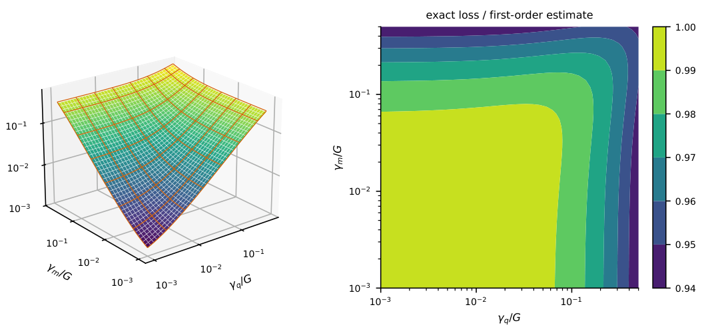
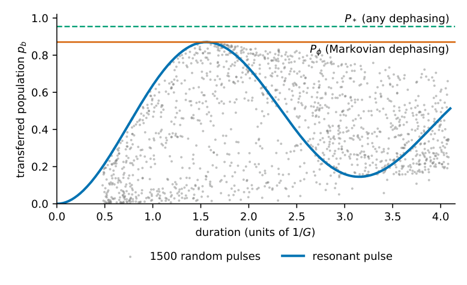
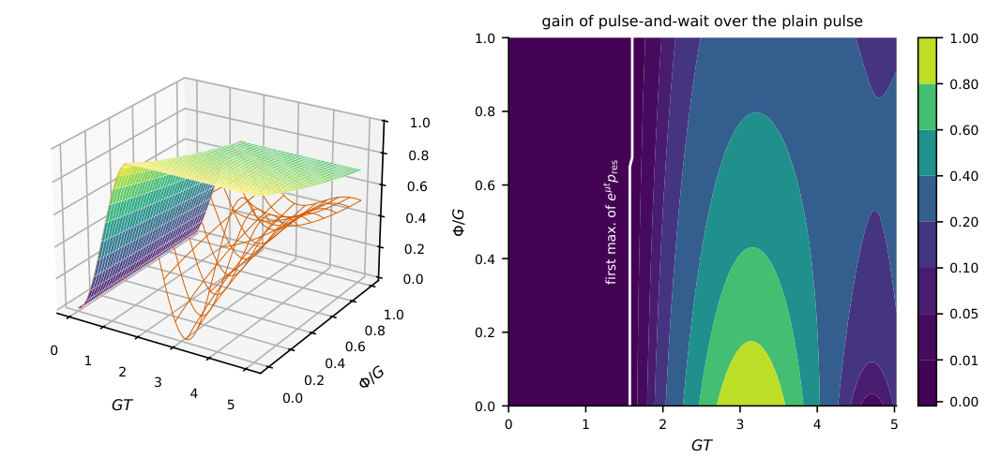
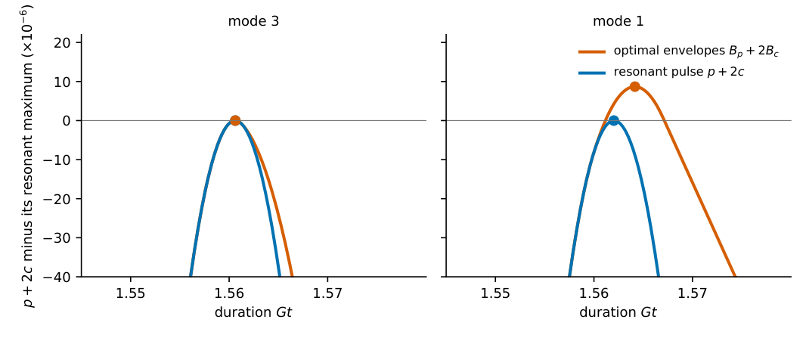
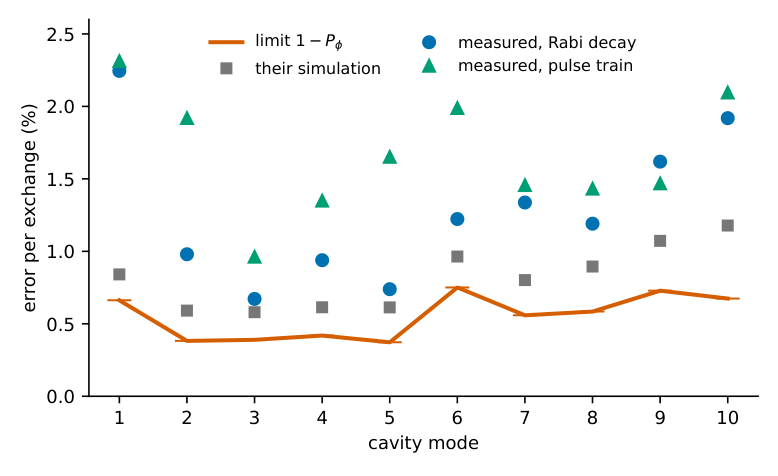
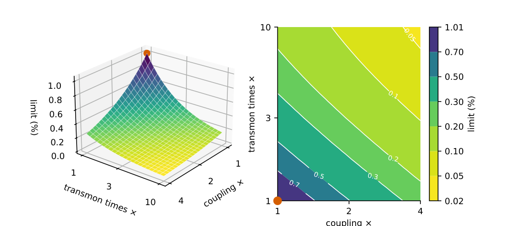

Exact limits on writing a superconducting quantum memory: when can pulse shaping beat the resonant swap?
At a glance
🚀 Start here: Theorem 1: Relaxation only: no pulse transfers more population than the resonant swap (closed form).
Main results:
- Theorem 1: Relaxation only: no pulse transfers more population than the resonant swap (closed form)
- Theorem 4: With Markovian dephasing too: the resonant swap still bounds the transferred population
- Theorem 7: At a prescribed duration: a Lyapunov function bounds the population by the resonant pulse
- Corollary 9: The write channel: infidelity r from population and coherence, and the bounds on rₒpt
🗺️ Map of the results (click a box to go to it)
Dependencies in the written proof: an arrow A → B means that this proof of B uses A. Every result rests on its written proof; the tags record what was checked besides, and each statement's “Evidence & scope” block says how far. The colour of a box is its strongest tag, in the order above; the tags in the box give the rest. Boxes with a thick border are the main results; click a box to read the statement.
📐 Setting (copied from the paper, §§1–2)
One excitation shared by a qubit (amplitude \(a\)) and a memory mode (amplitude \(b\)), each relaxing into the vacuum through its own channel at rates \(\gamma _q,\gamma _m\ge 0\), and dephasing at rates \(\phi _q,\phi _m\ge 0\); the control is a complex coupling \(g(t)\) with \(|g(t)|\le G\) (\(G{\gt}0\)) and a detuning \(D(t)\), and the duration \(T\) is free: \(i\dot a=\bigl(D(t)-\tfrac {i}{2}\gamma _q\bigr)a+g(t)\, b\), \(\ i\dot b=-\tfrac {i}{2}\gamma _m\, b+\overline{g(t)}\, a\), with \(a(0)=1\), \(b(0)=0\). \(p\) is the population transferred to the memory and \(c\) the coherence transferred with it; the write channel has average infidelity \(r=1-F=\frac{1-p}{6}+\frac{1-c}{3}\), and \(r_{\mathrm{opt}}\) is the infimum of \(r\) over all pulses and durations. The resonant pulse is \(g\equiv G\) with no detuning, stopped at the best time; \(r_{\mathrm{res}}\) is its infidelity.
Abstract.
We study quantum-memory writing implemented by the exchange of one excitation between a short-lived superconducting qubit and a long-lived memory mode, at a coupling rate bounded by \(G\), and ask how small pulse shaping can make the error of that exchange. With relaxation at unequal rates and Markovian dephasing, no pulse transfers more population than the plain resonant swap, and at a prescribed duration none beats a resonant pulse combined with a wait in the less lossy element; the proof is a Lyapunov function, with no condition on \(G\). Without dephasing the maximum has a closed form. For the average infidelity of the write operation this gives a lower bound which the resonant pulse misses by less than \(1.5\cdot 10^{-6}\) for a recent phonon-memory processor and attains for one of its modes: the limits are \(1.00\)–\(1.14\, \% \) per access for its three modes against \(1.71\, \% \) measured on average. Along a fixed small-rate direction the resonant pulse is exactly optimal whenever four times the smaller coherence decay rate exceeds the total pure dephasing rate, and otherwise the undecided width is of second order. Without relaxation and under strong dephasing the optimum is the trivial value \(5/12\): for equal rates at and above a unique threshold \(\varphi _*\), with \(2.0941221534{\lt}\varphi _*/G{\lt}2.0941221542\), and, for fixed-phase, zero-detuning controls with \(0\le g\le G\) and \(|\varphi _q-\varphi _m|\ge 2\sqrt5\, G\), exactly when the product of the rates is at least \(3G^2\); between \(2G\) and \(2\sqrt5\, G\) an explicit product of the rates still suffices. A write–wait–read cycle with a reset of the qubit composes exactly, which gives its floor. Without the reset, for cycles that close in the absence of noise and to first order in the rates, the optimum reduces to a scalar minimisation: it never completes the swap when the memory decays or dephases, and accessing the memory pays only when the memory loses less than the qubit, and then only after an explicit waiting time. Five recent devices are evaluated within the model, distinguishing direct comparisons from illustrative ones that would need pulse-shape or benchmarking-protocol modelling. Slow noise is not Markovian, and a counterexample shows that shaping can then help; for a quasi-static offset we give two bounds, and its first- and second-order theory is the subject of a companion paper. The bound without dephasing in all three damping regimes (on the reduced population equations), the quasi-static square-pulse upper bound averaged over any joint distribution with finite second moments, the Lyapunov step of the population bound for continuous controls (given the derivative identities of the master equation), and the elementary steps of the other proofs are machine-checked in Isabelle/HOL; Section 9 identifies the formal statements and their written model bridges, and the supplement records the parameter sets, interval enclosures and global-optimisation certificates behind the numerical claims.
Companion site.
https://karlesmarin.github.io/blueprints/memory-floors/: every statement with its dependencies and its checks, and labs in the browser; each figure of this paper is a link to the lab that reproduces it with its data. tabular xltabular longtable
No pulse transfers more population than the resonant one, with relaxation and Markovian dephasing; at a prescribed duration the optimum is a resonant pulse with a wait in the less lossy element (Theorems 4 and 7). Without dephasing the maximum is explicit and no pulse exceeds it (Theorem 1); the fact is contained in earlier geometric work
[
43
]
, the constant, an elementary proof and the machine check (all three regimes, on the reduced equations) are given here. Average fidelity of the write: the resonant pulse is within \(1.5\cdot 10^{-6}\) of optimal for a recent phonon-memory processor, and exactly optimal for one of its modes (Corollary 10). When the resonant pulse is exactly optimal: along a fixed small-rate direction, whenever \(4\min (\eta _q,\eta _m){\gt}\phi _q+\phi _m\); otherwise the undecided width is \((\Phi -4\nu )^2/(48G^2)+O(\varepsilon ^3)\), and the price of a single stopping time is \(\Phi ^2/(48G^2)+O(\varepsilon ^3)\) (Propositions 15 and 16). Strong dephasing: the optimum is the trivial \(5/12\) at and above a unique threshold \(\varphi _*\), \(2.0941221534{\lt}\varphi _*/G{\lt}2.0941221542\), for equal rates (certified), and, for fixed-phase, zero-detuning controls with \(|\varphi _q-\varphi _m|\ge 2\sqrt5\, G\), exactly when \(\phi _q\phi _m\ge 3G^2\), with a sufficient region below that asymmetry (Propositions 11 and 12, Corollary 13). Memory cycle with a reset: exact composition and its floor (Proposition 17); without the reset, the exact first-order optimum over all cycles that close without noise: if the memory decays or dephases it never completes the swap; access pays only when \({\gamma _m}+\phi _m{\lt}{\gamma _q}+\phi _q\), and then only after a waiting time \(t_c\) given by a scalar minimisation; and it goes below that floor for short waits (Proposition 18). Five recent devices evaluated within the model; direct comparisons are distinguished from illustrative ones that would need pulse-shape or benchmarking-protocol modelling (Section 6). Scope: two states, one excitation; the theorems with relaxation assume constant Markovian rates; for quasi-static noise of finite strength, a counterexample and two bounds (Proposition 14: (a) without relaxation, (b) with it). The robustness of the exchange to a static offset, at first and second order, is the subject of a companion paper
[
17
]
.
[enhanced,breakable,before skip=8pt,after skip=4pt,colback=accent!4,colframe=accent!60,boxrule=0.6pt,arc=3pt,left=4pt,right=8pt,top=4pt,bottom=4pt,title=Results at a glance,coltitle=white,colbacktitle=accent!85,fonttitle=]
machine-checked in Isabelle/HOL numbers enclosed by interval arithmetic
proof in the text, audited step by step and tested numerically
1 The question
A memory mode attached to a superconducting qubit is written by moving one excitation from the qubit to the mode and read by moving it back. During the move the excitation sits partly in the qubit, which is the short-lived element, so the move itself costs fidelity, and the cost does not go away when the memory gets better. Quantum-enhanced learning protocols store copies of a state in such a memory; their exponential separations are proved for states that are “stored and processed perfectly” [ 11 ] , so the error of each write lies outside those models. The coupling between the two has a largest available value \(G\), fixed by the geometry of a piezoelectric transducer, by the amplitude of a parametric pump before the transmon ionises, or by frequency crowding. Given \(G\) and the relaxation and dephasing rates, what is the smallest error that any pulse can reach?
Model.
One excitation shared by a qubit (amplitude \(a\)) and a mode (amplitude \(b\)), each relaxing into the vacuum through its own channel (throughout, \(G{\gt}0\) and all relaxation and pure-dephasing rates are non-negative):
The control is the complex coupling \(g\), measurable, and the detuning \(D\), locally integrable (a change of frame removes it); the duration \(T\) is free; \(a(0)=1\), \(b(0)=0\). With pure dephasing at rates \(\phi _q,\phi _m\ge 0\) the state of the one-excitation block is a positive matrix \(R\) with entries \(p_a,p_b\) (populations) and \(\rho _{ab}\), and
while the coherence between the vacuum and the excitation obeys (1) with \({\gamma _q}/2,{\gamma _m}/2\) replaced by \(\eta _q={\gamma _q}/2+\phi _q\) and \(\eta _m={\gamma _m}/2+\phi _m\) (so \(\eta =1/T_2\)). Throughout, \({\bar\gamma }=({\gamma _q}+{\gamma _m})/2\) and \(\delta ={\gamma _q}-{\gamma _m}\).
What is assumed.
Two states only: no third level and no further mode in which the excitation could be parked. One excitation at most; no thermal population. Constant rates, Markovian dephasing. Each of these fails somewhere in the experiments of Section 6, and we say where. The controls are the coupling and the detuning: “no pulse” means no \(g(t)\), \(D(t)\). Operations that leave the one-excitation block, such as the \(\pi \) rotations of the qubit used in dynamical decoupling of the exchange [ 3 , 15 , 1 ] , are not controls of the model.
Results.
The main result is Theorem 4: with relaxation and Markovian dephasing, the resonant pulse \(g\equiv G\), \(D\equiv 0\) maximises the transferred population among all pulses, with no condition on \(G\). Theorem 1 is the elementary case without dephasing, where the maximum has a closed form; it also bounds the transferred coherence. Corollary 9 turns the two into a bound for the average fidelity of the write channel, and Section 5 measures how close the resonant pulse comes to it. A static offset, which no Markovian rate describes, is treated in the companion paper [ 17 ] : the frontier between duration and leakage, the price of robustness in exposure, and the second-order error of every pulse. Sections 6 and 7 apply this to hardware, Section 9 says what backs each statement, Appendix C records numerical comparisons for coupling both modes at once, and Appendix D collects the formulas.
Earlier work.
That the standard pulse loses about \((\gamma +\gamma _\phi )/2\) times its duration is well known: it is the decay rate \((\kappa +\gamma )/2\) of the dressed states at resonance [ 4 ] , and Pietikäinen et al. write the sideband error as \((\gamma +\gamma _\phi )t_{\mathrm{sb}}/2\) [ 40 , Eq. (13b) ] . Those are statements about one pulse. Over all controls there are two bodies of earlier work. Stefanatos, Khaneja and Glaser [ 42 ] solve by dynamic programming the transfer between two coupled spins whose transverse operators relax at a common rate and whose longitudinal operators are partly protected; they note that different transverse rates “can be easily extended” and do not do it. Our model (1) is that extension in the case with no protected operator, where their relaxation-optimised sequences collapse to the plain resonant pulse; Theorem 1 is elementary and we claim no new method for it. The closed form (3) is not new either: Huang, Zhang and Zhao [ 16 ] give the same optimal time and the same maximal transmissivity for a resonant cavity–magnon exchange (their Eqs. (16)–(17), with the critical and over-damped cases); they optimise the stopping time of a fixed resonant coupling, not the pulse.
The second body is the geometric theory of time-optimal control of a dissipative two-level system by a bounded resonant field: Sugny, Kontz and Jauslin [ 43 ] and Bonnard, Chyba and Sugny [ 7 , 6 ] . For a trace-preserving Lindblad equation with relaxation rate \(\gamma _+\) and dephasing rate \(\Gamma \) they construct, with the maximum principle and in part numerically, the time-minimal synthesis from a pure state, and state that when the fixed point is the centre of the Bloch ball the two constant controls of maximal amplitude bound the reachable set [ 43 ] . Two special cases of our equations reduce to theirs. Without dephasing, \((|b|,|a|)\) obey their planar system with \(\gamma _+={\gamma _q}/2G\) and \(\Gamma ={\gamma _m}/2G\), so that statement contains the optimality of the resonant pulse in Theorem 1; they do not state it or give its value, and it rests there on the synthesis. With equal relaxation rates, \((2\operatorname{Im}\rho _{ab},p_a-p_b)\) obey it with \(\gamma _+=\gamma /2G\) and \(\Gamma =(\gamma +\Phi )/2G\), and the polar equations of Appendix A are theirs [ 6 ] ; the transferred population then also depends on the time through the trace, which is conserved in their problem. With unequal rates and dephasing the one-excitation block is not a Bloch equation (the trace couples to the inversion), and Theorems 4 and 7 are not in [ 43 , 7 , 6 ] ; nor in [ 28 , 27 , 33 , 37 ] , which treat saturation in minimum time, state transfer with unbounded control and the minimum relaxation time (the last with closed forms for unbounded control only, and no analytical solution for a bounded one). A sequence “control at its bound, then no control” is time-optimal for saturation in [ 27 ] ; it resembles the pulse-and-wait optimum of Corollary 8 but answers a different question. So for Theorem 1 what is ours is the statement with its constant, an elementary proof and its formalisation, not the fact; what we have not found elsewhere is Theorem 4 with unequal rates and dephasing, the fixed-duration Theorem 7 with its Lyapunov function, and the channel bounds of Corollaries 9 and 10 (read: [ 42 , 43 , 7 , 6 , 4 , 40 , 16 ] , the works of the next paragraphs and the five experimental papers of Section 6). Later work of the same school on the global structure with relaxation [ 29 ] is not openly available and we have read only its abstract; that is not a claim of novelty.
For pure dephasing alone the first-order statement is known. Lu, Chen, Ruschhaupt, Alonso, Guérin and Muga [ 34 ] take a two-level atom with white frequency noise (a Lindblad dephasing term), no relaxation and a Rabi frequency bounded by \(\Omega ^{M}\), and show that every pulse which inverts the population exactly in the absence of noise loses, to first order in the dephasing rate, at least what the flat resonant \(\pi \) pulse loses [ 34 , Eq. (25) ] ; with \(\Omega ^{M}=2G\) that loss is \(\pi \Phi /(8G)\), the first-order term of \(1-P_\phi \). The first-order value is not itself a bound (the exact minimum is \(3.8\, \% \) smaller at \(\Phi =0.1\, G\)); Theorem 4 is the exact statement, for every pulse and with relaxation at unequal rates, which they leave as future work (“spontaneous decay”), and the argument of Appendix A is the exact form of their inequality. For a constant unknown detuning \(\delta _0\) they give the loss \((\delta _0/\Omega )^2\) of the flat pulse and pulses of the same peak amplitude, several times longer, that cancel it to that order. In the lossless, energy-minimal setting, Boscain, Chambrion and Gauthier [ 5 ] show that the controls of minimal energy for a complete transfer in a three-level system are resonant; there the control is unbounded and the cost is the energy of the pulse, whereas here the amplitude is bounded, the system is lossy and the figure of merit is the transferred population.
Three neighbouring results, read in full. Without losses, by the time-optimal tori theorem of Khaneja, Brockett and Glaser [ 19 ] a full swap at coupling \(J\) takes at least \(\pi /(2J)\); Basilewitsch, Fischer, Reich, Sugny and Koch [ 2 ] prove from it that \(\pi /(2J)\) is the minimum time to reset a qubit against a two-level ancilla and conjecture, on numerical evidence, that a constant resonant field is the time-optimal protocol. Their dynamics is unitary, with an unbounded local control and the purity as figure of merit; our \(t_*\to \pi /(2G)\), \(P_*\to 1\) as the rates vanish is their case. Through a lossy bus, Wang, Yan and Chesi [ 45 ] and Luo, Fang, Wang and Chesi [ 35 ] optimise quasi-adiabatic pulses with bounded couplings: to leading order in the dissipation and in the non-adiabatic parameter the loss of fidelity is a classical action in the mixing angle, and its minimum is an explicit integral over that angle; the loss is written there as a rate times the integrated population of the lossy element, which is also the reading of our exponent. Their expansion needs a bus much lossier than the end points; for comparable rates they remark that the transfer “should be executed as fast as possible”, with a loss of order \(\gamma /G_{\max }\), and that their formalism “is clearly not applicable to this regime” [ 35 ] . Theorems 1–7 settle that regime for two directly coupled states, for every pulse and with the constant. For light–matter interfaces, Gorshkov et al. [ 13 , 14 ] show that the efficiency of storing a photon in a \(\Lambda \) medium inside a cavity is at most \(C/(1+C)\) for every control, \(C\) being the cooperativity; their control is unbounded and their memory state does not decay. The prefactor of (3) is exactly \(C/(1+C)\) with \(C=4G^2/({\gamma _q}{\gamma _m})\), but here it is not what matters: for mode 1 of Table 1 it differs from \(1\) by \(1.2\cdot 10^{-5}\), against \(1-P_*=0.016\). With a bounded coupling the loss is in the exponential factor, whose first-order parameter is \(({\gamma _q}+{\gamma _m})/G\) and not the cooperativity. For a static offset, the earlier work (Van Damme, Ansel, Glaser and Sugny [ 44 ] ; the space-curve picture of Barnes and coworkers; the robust inversion of Daems et al. [ 10 ] ) is discussed in [ 17 ] .
2 Relaxation only: the exact maximum
relaxation only (no dephasing); two states; |g| <= G; no relation between G and the rates Memory_Access_All_Pulses.memory_access_all_pulses, Memory_Access_Over.memory_access_over, Memory_Access_Over.memory_access_critical, Memory_Access_All_Pulses.bound_sharp, Memory_Access_Floors.resonant_pulse_max_bound, Memory_Access_Floors.resonant_pulse_max_attained, Memory_Access_Floors.max_population_symmetric, Memory_Access_Extras.folk_number_bound, Memory_Access_Regimes.over_pulse_global_max, Memory_Access_Regimes.over_pulse_max_attained, Memory_Access_Regimes.critical_pulse_max, Memory_Access_Regimes.log_derivative_identity, Memory_Access_Regimes.folk_bound_over Let \({\bar\gamma }=({\gamma _q}+{\gamma _m})/2\) and
For every control in (1) and every \(t\ge 0\),
with equality for the resonant pulse \(g\equiv G\), \(D\equiv 0\) stopped at \(t_*\) (this optimal stopping time and value of the resonant pulse, in all three regimes, are Eqs. (16)–(17) of [ 16 ] ). In the under-damped case \(P_*=\frac{4G^2}{4G^2+{\gamma _q}{\gamma _m}}\exp \bigl(-\frac{{\bar\gamma }}{\Omega }\arctan \frac{2\Omega }{{\bar\gamma }}\bigr)\); in the over-damped case \(P_*=\frac{4G^2}{4G^2+{\gamma _q}{\gamma _m}}\bigl(\frac{{\bar\gamma }-2\kappa }{{\bar\gamma }+2\kappa }\bigr)^{{\bar\gamma }/(2\kappa )}\), real because \({\bar\gamma }^2-4\kappa ^2=4G^2+{\gamma _q}{\gamma _m}{\gt}0\). In particular \(P_*\) is symmetric in the two rates, and
with \(\ln P_*=-\pi ({\gamma _q}+{\gamma _m})/(4G)+({\gamma _q}^2+{\gamma _m}^2)/(8G^2)+O(\gamma ^3/G^3)\): the familiar estimate of the loss of the standard pulse is a rigorous upper bound for the smallest loss. (If \({\gamma _q}={\gamma _m}=0\), read \(t_*=\pi /(2G)\) and \(P_*=1\).)
Isabelle · oursshow
memory_access_all_pulses · Isabelle/MemoryAccessFloors/Memory_Access_All_Pulses.thy, line 594
theorem memory_access_all_pulses:
fixes G gq gm T :: real and A B u :: "real \<Rightarrow> real"
assumes G: "0 < G" and gq: "0 \<le> gq" and gm: "0 \<le> gm" and Gd: "\<bar>gq - gm\<bar> / 4 < G" and T: "0 \<le> T"
and dA: "\<And>t. t \<in> {0..T} \<Longrightarrow> (A has_real_derivative (- gq * A t - 2 * u t)) (at t within {0..T})"
and dB: "\<And>t. t \<in> {0..T} \<Longrightarrow> (B has_real_derivative (- gm * B t + 2 * u t)) (at t within {0..T})"
and A_nn: "\<And>t. t \<in> {0..T} \<Longrightarrow> 0 \<le> A t" and B_nn: "\<And>t. t \<in> {0..T} \<Longrightarrow> 0 \<le> B t"
and uineq: "\<And>t. t \<in> {0..T} \<Longrightarrow> (u t)\<^sup>2 \<le> G\<^sup>2 * A t * B t"
and A0: "A 0 = 1" and B0: "B 0 = 0" and t: "t \<in> {0..T}"
shows "B t \<le> max_population G gq gm"
and "0 < gq + gm \<Longrightarrow> B t \<le> 4 * G\<^sup>2 / (4 * G\<^sup>2 + gq * gm)
* exp (- (((gq + gm) / 2) / sqrt (G\<^sup>2 - (gq - gm)\<^sup>2 / 16)) * arctan (2 * sqrt (G\<^sup>2 - (gq - gm)\<^sup>2 / 16) / ((gq + gm) / 2)))"
and "gq + gm = 0 \<Longrightarrow> B t \<le> 1"memory_access_over · Isabelle/MemoryAccessFloors/Memory_Access_Over.thy, line 1007
theorem memory_access_over:
fixes G gq gm T :: real and A B u :: "real \<Rightarrow> real"
assumes G: "0 < G" and gq: "0 \<le> gq" and gm: "0 \<le> gm" and Ov: "G < \<bar>gq - gm\<bar> / 4" and T: "0 \<le> T"
and dA: "\<And>t. t \<in> {0..T} \<Longrightarrow> (A has_real_derivative (- gq * A t - 2 * u t)) (at t within {0..T})"
and dB: "\<And>t. t \<in> {0..T} \<Longrightarrow> (B has_real_derivative (- gm * B t + 2 * u t)) (at t within {0..T})"
and A_nn: "\<And>t. t \<in> {0..T} \<Longrightarrow> 0 \<le> A t" and B_nn: "\<And>t. t \<in> {0..T} \<Longrightarrow> 0 \<le> B t"
and uineq: "\<And>t. t \<in> {0..T} \<Longrightarrow> (u t)\<^sup>2 \<le> G\<^sup>2 * A t * B t"
and A0: "A 0 = 1" and B0: "B 0 = 0" and t: "t \<in> {0..T}"
shows "B t \<le> 4 * G\<^sup>2 / (4 * G\<^sup>2 + gq * gm)
* exp (- ((gq + gm) / 2) * (artanh (2 * sqrt ((gq - gm)\<^sup>2 / 16 - G\<^sup>2) / ((gq + gm) / 2))
/ sqrt ((gq - gm)\<^sup>2 / 16 - G\<^sup>2)))"memory_access_critical · Isabelle/MemoryAccessFloors/Memory_Access_Over.thy, line 1024
theorem memory_access_critical:
fixes G gq gm T :: real and A B u :: "real \<Rightarrow> real"
assumes G: "0 < G" and gq: "0 \<le> gq" and gm: "0 \<le> gm" and Cr: "G = \<bar>gq - gm\<bar> / 4" and T: "0 \<le> T"
and dA: "\<And>t. t \<in> {0..T} \<Longrightarrow> (A has_real_derivative (- gq * A t - 2 * u t)) (at t within {0..T})"
and dB: "\<And>t. t \<in> {0..T} \<Longrightarrow> (B has_real_derivative (- gm * B t + 2 * u t)) (at t within {0..T})"
and A_nn: "\<And>t. t \<in> {0..T} \<Longrightarrow> 0 \<le> A t" and B_nn: "\<And>t. t \<in> {0..T} \<Longrightarrow> 0 \<le> B t"
and uineq: "\<And>t. t \<in> {0..T} \<Longrightarrow> (u t)\<^sup>2 \<le> G\<^sup>2 * A t * B t"
and A0: "A 0 = 1" and B0: "B 0 = 0" and t: "t \<in> {0..T}"
shows "B t \<le> 4 * G\<^sup>2 / (4 * G\<^sup>2 + gq * gm) * exp (- 2)"bound_sharp · Isabelle/MemoryAccessFloors/Memory_Access_All_Pulses.thy, line 706
theorem bound_sharp:
fixes G gq gm :: real
assumes "0 < G" and "0 \<le> gq" and "0 \<le> gm" and "\<bar>gq - gm\<bar> / 4 < G" and "0 < gq + gm"
shows "\<exists>T. 0 \<le> T \<and> pulse G gq gm T (res_A G gq gm) (res_B G gq gm) (res_u G gq gm)
\<and> res_B G gq gm T = max_population G gq gm"resonant_pulse_max_bound · Isabelle/MemoryAccessFloors/Memory_Access_Floors.thy, line 356
theorem resonant_pulse_max_bound:
fixes G gq gm gb d \<Omega> t :: real
assumes "0 < G" and "0 \<le> gq" and "0 \<le> gm" and "gb = (gq + gm) / 2" and "0 < gb"
and "d = gq - gm" and "G\<^sup>2 > d\<^sup>2 / 16" and "\<Omega> = sqrt (G\<^sup>2 - d\<^sup>2 / 16)" and "0 \<le> t"
shows "G\<^sup>2 / \<Omega>\<^sup>2 * exp (- gb * t) * (sin (\<Omega> * t))\<^sup>2
\<le> 4 * G\<^sup>2 / (4 * G\<^sup>2 + gq * gm) * exp (- (gb / \<Omega>) * arctan (2 * \<Omega> / gb))"resonant_pulse_max_attained · Isabelle/MemoryAccessFloors/Memory_Access_Floors.thy, line 377
theorem resonant_pulse_max_attained:
fixes G gq gm gb d \<Omega> tstar :: real
assumes "0 < G" and "0 \<le> gq" and "0 \<le> gm" and "gb = (gq + gm) / 2" and "0 < gb"
and "d = gq - gm" and "G\<^sup>2 > d\<^sup>2 / 16" and "\<Omega> = sqrt (G\<^sup>2 - d\<^sup>2 / 16)"
and "tstar = arctan (2 * \<Omega> / gb) / \<Omega>"
shows "G\<^sup>2 / \<Omega>\<^sup>2 * exp (- gb * tstar) * (sin (\<Omega> * tstar))\<^sup>2
= 4 * G\<^sup>2 / (4 * G\<^sup>2 + gq * gm) * exp (- (gb / \<Omega>) * arctan (2 * \<Omega> / gb))"max_population_symmetric · Isabelle/MemoryAccessFloors/Memory_Access_Floors.thy, line 404
lemma max_population_symmetric: "max_population G gq gm = max_population G gm gq"
folk_number_bound · Isabelle/MemoryAccessFloors/Memory_Access_Extras.thy, line 91
theorem folk_number_bound:
fixes G gq gm gb d \<Omega> :: real
assumes "0 < G" and "0 \<le> gq" and "0 \<le> gm" and "gb = (gq + gm) / 2" and "0 < gb"
and "d = gq - gm" and "G\<^sup>2 > d\<^sup>2 / 16" and "\<Omega> = sqrt (G\<^sup>2 - d\<^sup>2 / 16)"
shows "exp (- pi * (gq + gm) / (4 * G))
\<le> 4 * G\<^sup>2 / (4 * G\<^sup>2 + gq * gm) * exp (- (gb / \<Omega>) * arctan (2 * \<Omega> / gb))"over_pulse_global_max · Isabelle/MemoryAccessFloors/Memory_Access_Regimes.thy, line 302
theorem over_pulse_global_max:
fixes G gq gm gb d \<kappa> tstar t :: real
assumes "0 < G" and "0 \<le> gq" and "0 \<le> gm" and "gb = (gq + gm) / 2" and "d = gq - gm"
and "G < \<bar>d\<bar> / 4" and "\<kappa> = sqrt (d\<^sup>2 / 16 - G\<^sup>2)"
and "tstar = artanh (2 * \<kappa> / gb) / \<kappa>" and "0 \<le> t"
shows "pulse_over G gb \<kappa> t \<le> pulse_over G gb \<kappa> tstar"over_pulse_max_attained · Isabelle/MemoryAccessFloors/Memory_Access_Regimes.thy, line 277
theorem over_pulse_max_attained:
fixes G gq gm gb d \<kappa> tstar :: real
assumes "0 < G" and "0 \<le> gq" and "0 \<le> gm" and "gb = (gq + gm) / 2" and "d = gq - gm"
and "G < \<bar>d\<bar> / 4" and "\<kappa> = sqrt (d\<^sup>2 / 16 - G\<^sup>2)"
and "tstar = artanh (2 * \<kappa> / gb) / \<kappa>"
shows "pulse_over G gb \<kappa> tstar = 4 * G\<^sup>2 / (4 * G\<^sup>2 + gq * gm) * exp (- gb * tstar)"critical_pulse_max · Isabelle/MemoryAccessFloors/Memory_Access_Regimes.thy, line 363
theorem critical_pulse_max:
fixes G gq gm gb d t :: real
assumes "0 < G" and "0 \<le> gq" and "0 \<le> gm" and "gb = (gq + gm) / 2" and "d = gq - gm"
and "G = \<bar>d\<bar> / 4"
shows "0 < gb"
and "4 * G\<^sup>2 / gb\<^sup>2 = 4 * G\<^sup>2 / (4 * G\<^sup>2 + gq * gm)"
and "0 \<le> t \<Longrightarrow> G\<^sup>2 * t\<^sup>2 * exp (- gb * t) \<le> G\<^sup>2 * (2 / gb)\<^sup>2 * exp (- gb * (2 / gb))"
and "G\<^sup>2 * (2 / gb)\<^sup>2 * exp (- gb * (2 / gb)) = 4 * G\<^sup>2 / (4 * G\<^sup>2 + gq * gm) * exp (- 2)"log_derivative_identity · Isabelle/MemoryAccessFloors/Memory_Access_Regimes.thy, line 40
lemma log_derivative_identity:
fixes G gq gm \<theta> w L :: real
assumes "0 < \<theta>" and "\<theta> < pi / 2"
and "w = G + ((gq - gm) / 4) * sin (2 * \<theta>)"
and "L = (gq * (cos \<theta>)\<^sup>2 + gm * (sin \<theta>)\<^sup>2) / 2"
and "w \<noteq> 0"
shows "2 * cos \<theta> / sin \<theta> - 2 * L / w = (2 * G * cos \<theta> / sin \<theta> - gm) / w"folk_bound_over · Isabelle/MemoryAccessFloors/Memory_Access_Regimes.thy, line 634
theorem folk_bound_over:
fixes G gq gm gb d \<kappa> t0 :: real
assumes "0 < G" and "0 \<le> gq" and "0 \<le> gm" and "gb = (gq + gm) / 2" and "d = gq - gm"
and "G < \<bar>d\<bar> / 4" and "\<kappa> = sqrt (d\<^sup>2 / 16 - G\<^sup>2)" and "t0 = pi / (2 * G)"
shows "exp (- pi * (gq + gm) / (4 * G)) \<le> pulse_over G gb \<kappa> t0"Proof: in this note·Formalized: Isabelle/HOL, by the author (public formalizations repository)·Covers: the whole statement
↳ Used in: 2, 5, 6, Corollary 9, Proposition 17, Proposition 19
The resonant pulse. With \(g=G\), \(D=0\) the solution is \(b(t)=-iG\, e^{-{\bar\gamma }t/2}\sin (\Omega t)/\Omega \), so \(|b|^2=(G^2/\Omega ^2)e^{-{\bar\gamma }t}\sin ^2\Omega t\) (with \(\sin (\Omega t)/\Omega \) read as \(t\) in the critical case and as \(\sinh (\kappa t)/\kappa \) in the over-damped one). Under damping its first maximum is at \(\tan \Omega t_*=2\Omega /{\bar\gamma }\), where \(\sin ^2\Omega t_*=4\Omega ^2/(4\Omega ^2+{\bar\gamma }^2)\), and \(4\Omega ^2+{\bar\gamma }^2=4G^2+{\gamma _q}{\gamma _m}\); in the other two cases the same computation with \(\tanh \kappa t_*=2\kappa /{\bar\gamma }\), or \(t_*=2/{\bar\gamma }\), gives the same prefactor. This is the right-hand side of (3). For (4) stop instead at \(t_0=\pi /(2G)\). Under damping, with \(x=\Omega /G\in (0,1]\), \(|b(t_0)|^2=e^{-\pi ({\gamma _q}+{\gamma _m})/(4G)}\, [\sin (\pi x/2)/x]^2\), and \(\sin (\pi x/2)\ge x\) on \([0,1]\) by concavity; otherwise \(|b(t_0)|^2=e^{-\pi ({\gamma _q}+{\gamma _m})/(4G)}(Gt_0)^2\, [\sinh (\kappa t_0)/(\kappa t_0)]^2\ge e^{-\pi ({\gamma _q}+{\gamma _m})/(4G)}\pi ^2/4\).
Polar form. From (1), \(\tfrac {d}{dt}|a|^2=-{\gamma _q}|a|^2-2u\) and \(\tfrac {d}{dt}|b|^2=-{\gamma _m}|b|^2+2u\) with \(u=-\operatorname{Im}(g\, \bar a\, b)\); the detuning does not appear, and \(|u|\le G|a||b|\). Write \(|a|=r\cos \theta \), \(|b|=r\sin \theta \) with \(\theta \in [0,\pi /2]\) and \(u=Gs\, r^2\sin \theta \cos \theta \), \(s\in [-1,1]\). Then
Comparison. Let \(\omega (\theta )=G+\tfrac \delta 4\sin 2\theta \). It is positive on \([0,\pi /2]\) unless \(\delta \le -4G\), and then its first zero is \(\theta _b=\tfrac 12\arcsin (4G/|\delta |)\le \pi /4\); since \(\dot\theta \le \omega (\theta )\) and \(\theta (0)=0\), the angle never reaches \(\theta _b\). On the interval \(J\) where \(\omega {\gt}0\) put \(R(\theta )=-\int _0^\theta L/\omega \) and \(W=\ln r-R(\theta )\). Then
and \(W(0)=0\), so \(\ln r(t)\le R(\theta (t))\) and \(|b(t)|^2\le F(\theta (t))\) with \(F(\theta )=e^{2R(\theta )}\sin ^2\theta \). A direct computation gives
so \(F\) increases up to \(\theta _*=\arctan (2G/{\gamma _m})\) and decreases after it on \(J\). When \(\theta _b\) exists, \({\gamma _m}\ge 4G\), so \(\theta _*{\lt}\pi /4\) and \(\omega (\theta _*)=G(4G^2+{\gamma _q}{\gamma _m})/(4G^2+{\gamma _m}^2){\gt}0\): the maximum of \(F\) lies inside \(J\). With \(s\equiv 1\), which is the resonant pulse, \(W\equiv 0\) and \(\dot\theta =\omega {\gt}0\), so \(\theta \) reaches \(\theta _*\) and the maximum is attained; by the first step its value is (3).
The end points. The polar angle is singular at \(\theta =0,\pi /2\). The functions \(|a|^2\), \(|b|^2\) and \(r^2{\gt}0\) are absolutely continuous, hence so is \(c=\cos 2\theta \), with \(\dot c=-\sin 2\theta \, [\tfrac \delta 2\sin 2\theta +2Gs]\) and therefore \(|\dot c|\le K\sqrt{1-c^2}\), \(K=|\delta |/2+2G\). On the open set where \(c\ne \pm 1\) the angle \(\theta =\tfrac 12\arccos c\) is \(K/2\)-Lipschitz; it is continuous, and off that set it takes only the values \(0\) and \(\pi /2\), between which it can pass only along a stretch of length at least \(\pi /K\) inside the set. So \(\theta \) is Lipschitz on the whole interval, \(W\) is absolutely continuous, and \(\dot W\le 0\) almost everywhere (where \(\theta \in \{ 0,\pi /2\} \), \(\dot\theta =0\) a.e. and \(\dot W=-L\le 0\)).
Qubit and memory only lose energy (no dephasing), and the coupling is any pulse of strength at most \(G\), with any phase and detuning. However it is shaped, the population that reaches the memory never exceeds what the resonant pulse delivers when stopped at the right time, and that maximum has a closed form: shaping the pulse cannot beat the resonant swap for the population.
🧪 Lab: Figure 1 live: the smallest loss 1 − P* for your two rates, against the familiar estimate
Theorem 1 evaluated in all three regimes (under-damped, critical, over-damped) for \(\gamma _q/G\) and \(\gamma _m/G\) of your choice. The 2D plots follow your ratio \(\gamma _q:\gamma _m\) as both rates grow: the exact minimum loss \(1-P_*\) and the familiar estimate \(1-e^{-\pi (\gamma _q+\gamma _m)/4G}\) (which lies above it, Eq. (4)), and their ratio (the right panel of the paper figure). The turnable surface is \(\log _{10}(1-P_*)\) over \((\log _{10}\gamma _q,\log _{10}\gamma _m)\) with the estimate as an orange sheet above it; the red curve is your ratio, the star your point. Computed from the closed forms, nothing is read from a table.
The symmetry also follows without the formula: if \(M\) is the matrix of the resonant pulse and \(M'\) the one with the rates exchanged, then \(M'=(\Pi M\Pi )^{\mathsf T}\) for the transposition \(\Pi \), so \((e^{M't})_{21}=(e^{Mt})_{21}\). No relation between \(G\) and the rates is needed: the critical and over-damped cases follow from the same comparison, because the maximum of \(F\) comes before the zero of \(\omega \). (For \(G=1\), \({\gamma _q}=5\), \({\gamma _m}=0\): \(t_*=\tfrac 43\ln 2\) and \(P_*=2^{-10/3}\approx 0.0992\).) Figure 1 shows \(1-P_*\) for both rates from \(10^{-3}G\) to \(G/2\). The Isabelle/HOL formalisation of the bound over all pulses covers the three regimes, on the reduced population equations. The over-damped case uses the eigen-coordinates of the resonant matrix and a logarithmic Lyapunov function, and the critical case its Jordan coordinates (no polar angle); the delicate case \(\delta \le -4G\) appears as the positivity of one coordinate.
↳ Not used by another result of the paper.
Since the optimum is at \(\tan \theta _*=2G/{\gamma _m}\), the resonant pulse should be stopped when \(|a(t)|/|b(t)|={\gamma _m}/(2G)\), in all three regimes. With \({\gamma _m}=0\) the rule is complete transfer, \(a=0\). The rule needs only the ratio of the amplitudes, not \(t_*\).
↳ Not used by another result of the paper.
🖼️ Figure 1

Theorem 1 for both rates from \(10^{-3}G\) to \(G/2\). Left: the smallest loss \(1-P_*\) that any pulse can reach (surface, vertical axis \(1-P_*\), logarithmic), and the familiar estimate \(1-e^{-\pi ({\gamma _q}+{\gamma _m})/(4G)}\) (orange mesh), which lies above it everywhere, as (4) says. The surface is symmetric in the two rates. Right: the ratio of the two; the estimate is within \(1\, \% \) while both rates are below about \(0.05\, G\) and \(5.3\, \% \) off at \({\gamma _q}={\gamma _m}=G/2\).
3 With dephasing the resonant pulse is still the best
🖼️ Figure 2

Theorem 4 in a strongly dephased case (\(G=1\); \(T_1=20\), \(T_2=4\) for the qubit and \(T_1=100\), \(T_2=40\) for the mode). Each grey dot is a random piecewise-constant pulse with complex coupling \(|g|\le G\) and detuning, placed at its duration. None passes the first maximum \(P_\phi =0.871\) of the resonant pulse; the bound for arbitrary dephasing is \(P_*=0.954\).
MarBprop:costcomparesMarBthm:robustsame-setting Memory_Access_Floors.alignment_lemma Let \({\gamma _q},{\gamma _m},\phi _q,\phi _m\ge 0\) and \(G{\gt}0\). For every measurable control with \(|g|\le G\), every detuning and every duration, the solution of (2) with \(p_a(0)=1\) satisfies
where \(p_{\mathrm{res}}\) is the population transferred by the resonant pulse \(g\equiv G\), \(D\equiv 0\):
No relation between \(G\) and the rates is assumed.
Isabelle · ours · partshow
Only a part is in Isabelle: the named pieces are machine-checked; the statement as a whole is a written proof
alignment_lemma · Isabelle/MemoryAccessFloors/Memory_Access_Floors.thy, line 93
lemma alignment_lemma: fixes z :: complex assumes "\<forall>\<phi>::real. Re (exp (- (\<i> * of_real \<phi>)) * z) \<le> Re z" shows "Im z = 0" and "Re z = norm z" and "0 \<le> Re z"
Proof: in this note·Formalized: Isabelle/HOL, by the author (public formalizations repository)·Covers: part: the named pieces are machine-checked; the statement as a whole is a written proof
↳ Used in: 3, Theorem 7, Corollary 9
This follows from Theorem 7 of the next section: there a Lyapunov function shows that no pulse of duration at most \(T\) transfers more than the best resonant pulse of duration at most \(T\), so that \(p_b(T)\le \max _{s\le T}p_{\mathrm{res}}(s)\le P_\phi \) for every finite \(T\). A second proof, by the maximum principle, is in Appendix B.
The same ceiling survives Markovian dephasing of both elements: the resonant swap still bounds the transferred population. Only the alignment step of the proof is machine-checked; the rest is a written proof, audited step by step.
🛡️ Evidence & scope
Literature: Companion paper: this statement is compared with paper B (Robust qubit–memory transfer against quasi-static frequency noise costs time and exposure), Proposition 3 (silent link, not printed in the paper). https://karlesmarin.github.io/blueprints/robust-offset/
Literature: Companion paper: this statement shares the setting of paper B (Robust qubit–memory transfer against quasi-static frequency noise costs time and exposure), Theorem 1 (silent link, not printed in the paper). https://karlesmarin.github.io/blueprints/robust-offset/
🧪 Lab: Figure 2 live: random pulses with complex coupling and detuning never pass P_φ
Each grey dot is a random piecewise-constant pulse (eight segments, complex coupling \(|g|\le G\), detuning), integrated with the exact one-excitation Lindblad dynamics and placed at its duration; none passes \(P_\phi \), the first maximum of the resonant pulse (blue). Choose the four times \(T_1,T_2\) (units of \(1/G\)), the number of pulses, the seed and the coupling cap: with a cap above 1 the premise \(|g|\le G\) is broken and the resonant pulse at the larger cap (red) does pass the ceiling. In 3D every pulse is a point (duration, mean \(|g|/G\), population) under the orange plane \(P_\phi \); the green plane is \(P_*\) (any dephasing) and the blue curve the resonant pulse at \(|g|=G\).
🧪 Lab: Figure 5 live: the measured and simulated errors of Table 3 against the limit 1 − P_φ
The limit \(1-P_\phi \) for each of the ten modes of the Rutgers multimode cavity (G from the \(\pi \)-pulse duration, cavity times from the paper, computed here), next to their simulation and the two measurements. Change the transmon times and the limit moves: with the paper’s values none of the 30 numbers falls below it; with a worse transmon several do, which is why the claim is a statement about this transmon. The 3D surface is the limit over (mode, factor on the transmon times) with the data at factor 1.
Figure 2 tests the theorem against 1500 random pulses in a strongly dephased case. When the two relaxation rates are equal there is a proof in the style of Theorem 1, with no optimal control theory; it is in Appendix A and also gives the optimality of the resonant pulse at each fixed short duration. When there is no relaxation and \(\Phi {\lt}4G\) the supremum is explicit: \(P_\phi =\tfrac 12\bigl(1+e^{-\pi \Phi /(2\omega _p)}\bigr)\) with \(\omega _p=\sqrt{4G^2-\Phi ^2/4}\); for \(\Phi \ge 4G\) it is \(1/2\) and is not attained. For the same reason the infimum in Corollary 9 need not be attained (with \(G=1\), no relaxation and \(\phi _q=\phi _m=10\) the resonant pulse gives \(r(t){\gt}5/12\) for every \(t\) and \(r(t)\to 5/12\); Proposition 11 shows that no pulse does better). With positive relaxation rates the error tends to \(1/2\) as the duration grows, so the resonant family attains its own infimum at a finite duration; existence of an optimal control over all pulses (with unbounded detuning) is not claimed.
↳ Not used by another result of the paper.
The bound of Theorem 1 holds for the population under any dephasing, Markovian or not: for a state of the one-excitation block the populations obey the first line of (2) and positivity gives \(|\rho _{ab}|\le \sqrt{p_ap_b}\), which is all the proof used. So \(p_b\le P_*({\gamma _q},{\gamma _m};G)\) always, and \(P_\phi \le P_*\) is the sharper value when the dephasing is Markovian with known rates.
↳ Not used by another result of the paper.
4 Fixed durations, and a proof without the maximum principle
Lyapunov function built as the support function of the effects of the resonant pulses (Danskin)
A Lyapunov function proves Theorem 4 without asking whether an optimal control exists, and it also handles a prescribed duration. Take \(D=0\): the change of frame \(\rho _{ab}\mapsto e^{i\chi }\rho _{ab}\), \(g\mapsto e^{i\chi }g\) with \(\dot\chi =D\) removes the detuning and keeps \(|g|\le G\) and \(p_b\). Write \(\mathcal L_w\) for the generator of (2) with coupling \(w\), acting on the one-excitation block. For \(\tau \ge 0\) and a phase \(\vartheta \) let \(E_{\tau ,\vartheta }\) be the Heisenberg evolution, for a time \(\tau \) under the constant resonant coupling \(Ge^{i\vartheta }\), of the projector on \(b\). For a positive block \(R\) with entries \(a,b,\rho \) and \(h\in [0,\infty )\) put
where \(A,B\) are the diagonal entries of \(E_{\tau ,0}\) and \(iz\), with \(z\) real, its off-diagonal entry (the generator of the resonant pulse is real in the variables \((p_a,p_b,\operatorname{Im}\rho _{ab})\), and \(E_{\tau ,\vartheta }\) has off-diagonal entry \(iz\, e^{i\vartheta }\)). In words: \(V_h(R)\) is the largest population that a resonant pulse of duration at most \(h\), with the best phase, extracts from \(R\).
Fixed_Duration_Core.H_max, Fixed_Duration_Core.h0_negative, Fixed_Duration_Core.H_aligned_cases, Fixed_Duration_Core.case_i, Fixed_Duration_Core.case_ii, Fixed_Duration_Core.case_iii, Fixed_Duration_Core.case_iv, Fixed_Duration_Core.epsilon_limit, Fixed_Duration_Core.lyapunov_conclusion, Pop_Lyapunov_Step.dini_danskin, Pop_Lyapunov_Step.dini_monotone, Pop_Lyapunov_Step.v_antitone, Pop_Lyapunov_Step.pb_bound relaxation rates and pure dephasing rates non-negative and constant; Markovian dephasing; two states; |g| <= G Let \({\gamma _q},{\gamma _m},\phi _q,\phi _m\ge 0\). Along every solution of (2) with \(|g|\le G\), from any positive initial block, the function \(t\mapsto V_{T-t}(R(t))\) is non-increasing on \([0,T]\). Hence, for \(p_a(0)=1\) and every \(T\),
and in particular \(p_b(T)\le p_{\mathrm{res}}(T)\) for every \(T\) up to the first maximum of \(p_{\mathrm{res}}\). Since the right-hand side is at most \(P_\phi \) for every finite \(T\), this proves Theorem 4 without the existence of an optimal control.
Isabelle · ours · partshow
Only a part is in Isabelle: the named pieces are machine-checked; the statement as a whole is a written proof
H_max · Isabelle/MemoryAccessFloors/Fixed_Duration_Core.thy, line 92
theorem H_max:
assumes "0 \<le> G"
shows "(\<forall>w. norm w \<le> G \<longrightarrow> Hfun h0 K w \<le> h0 + 2 * G * norm K)
\<and> (\<exists>w. norm w \<le> G \<and> Hfun h0 K w = h0 + 2 * G * norm K)"h0_negative · Isabelle/MemoryAccessFloors/Fixed_Duration_Core.thy, line 121
corollary h0_negative:
assumes "0 < gmin" "gmin \<le> gq" "gmin \<le> gm" "gmin \<le> Gam" "0 \<le> A" "0 \<le> B" "0 \<le> a" "0 \<le> b"
and "0 \<le> Re (cnj Eab * rho)" and "0 < ffun A B Eab a b rho"
shows "h0f gq gm Gam A B Eab a b rho < 0"H_aligned_cases · Isabelle/MemoryAccessFloors/Fixed_Duration_Core.thy, line 152
theorem H_aligned_cases:
assumes "K = of_real c * Eab_pulse z th" and "0 \<le> G"
shows "Hfun h0 K (g_th G th) = h0 + 2 * G * norm K
\<or> Hfun h0 K (g_th G th) = h0 - 2 * G * norm K"case_i · Isabelle/MemoryAccessFloors/Fixed_Duration_Core.thy, line 200
theorem case_i:
assumes "K = of_real c * Eab_pulse z th" and "0 \<le> G" and "h0 < 0"
and "Hfun h0 K (g_th G th) = 0" and "norm w \<le> G"
shows "h0 + 2 * G * norm K = 0"
and "Hfun h0 K w \<le> 0"case_ii · Isabelle/MemoryAccessFloors/Fixed_Duration_Core.thy, line 184
theorem case_ii:
assumes "K = of_real c * Eab_pulse z th" and "0 \<le> G" and "h0 < 0"
and "0 \<le> Hfun h0 K (g_th G th)" and "norm w \<le> G"
shows "Hfun h0 K (g_th G th) = h0 + 2 * G * norm K"
and "Hfun h0 K w \<le> Hfun h0 K (g_th G th)"
and "Hfun h0 K w - Hfun h0 K (g_th G th) \<le> 0"case_iii · Isabelle/MemoryAccessFloors/Fixed_Duration_Core.thy, line 241
theorem case_iii:
assumes "h0 < 0"
shows "\<exists>th\<in>{0..2 * pi}. Hfun h0 K (g_th G th) < 0"case_iv · Isabelle/MemoryAccessFloors/Fixed_Duration_Core.thy, line 254
theorem case_iv: assumes "norm w \<le> G" shows "Hfun (h0f gq gm Gam 0 1 0 a b rho) (Kf 0 1 0 a b rho) w \<le> - gm * b + 2 * G * norm rho"
epsilon_limit · Isabelle/MemoryAccessFloors/Fixed_Duration_Core.thy, line 270
theorem epsilon_limit:
fixes v :: "real \<Rightarrow> real" and y :: "real \<Rightarrow> real \<Rightarrow> real"
assumes lohi: "\<And>e t. 0 < e \<Longrightarrow> t \<in> {0..T} \<Longrightarrow> exp (- e * T) * v t \<le> y e t \<and> y e t \<le> v t"
and mono: "\<And>e s t. 0 < e \<Longrightarrow> s \<in> {0..T} \<Longrightarrow> t \<in> {0..T} \<Longrightarrow> s \<le> t \<Longrightarrow> y e t \<le> y e s"
and s: "s \<in> {0..T}" and t: "t \<in> {0..T}" and st: "s \<le> t"
shows "v t \<le> v s"lyapunov_conclusion · Isabelle/MemoryAccessFloors/Fixed_Duration_Core.thy, line 294
theorem lyapunov_conclusion:
fixes V :: "real \<Rightarrow> 'a \<Rightarrow> real" and R :: "real \<Rightarrow> 'a" and pb M :: real
assumes mono: "\<And>s t. 0 \<le> s \<Longrightarrow> s \<le> t \<Longrightarrow> t \<le> T \<Longrightarrow> V (T - t) (R t) \<le> V (T - s) (R s)"
and "0 \<le> T" and fin: "pb = V 0 (R T)" and start: "V T (R 0) = M"
shows "pb \<le> M"dini_danskin · Isabelle/MemoryAccessFloors/Pop_Lyapunov_Step.thy, line 59
lemma dini_danskin:
fixes F :: "'k::metric_space \<Rightarrow> real \<Rightarrow> real" and H :: "'k \<Rightarrow> real \<Rightarrow> real" and v :: "real \<Rightarrow> real"
assumes cK: "compact K"
and Fc: "continuous_on (K \<times> {a..b}) (\<lambda>p. F (fst p) (snd p))"
and Hc: "continuous_on (K \<times> {a..b}) (\<lambda>p. H (fst p) (snd p))"
and der: "\<And>k x. k \<in> K \<Longrightarrow> x \<in> {a..b} \<Longrightarrow> (F k has_real_derivative H k x) (at x within {a..b})"
and vmax: "\<And>t. t \<in> {a..b} \<Longrightarrow> (\<forall>k\<in>K. F k t \<le> v t) \<and> (\<exists>k\<in>K. F k t = v t)"
and t: "t \<in> {a..b}"
and c: "\<And>k. k \<in> K \<Longrightarrow> F k t = v t \<Longrightarrow> H k t \<le> c"
and eps: "0 < eps"
shows "\<exists>delta>0. \<forall>s. t < s \<longrightarrow> s < t + delta \<longrightarrow> s \<le> b \<longrightarrow> v s \<le> v t + (c + eps) * (s - t)"dini_monotone · Isabelle/MemoryAccessFloors/Pop_Lyapunov_Step.thy, line 233
lemma dini_monotone:
fixes v :: "real \<Rightarrow> real"
assumes vc: "continuous_on {a..b} v"
and dini: "\<And>t eps. a \<le> t \<Longrightarrow> t < b \<Longrightarrow> 0 < eps \<Longrightarrow>
\<exists>delta>0. \<forall>s. t < s \<longrightarrow> s < t + delta \<longrightarrow> s \<le> b \<longrightarrow> v s \<le> v t + eps * (s - t)"
and x: "a \<le> x" and xy: "x \<le> y" and y: "y \<le> b"
shows "v y \<le> v x"v_antitone · Isabelle/MemoryAccessFloors/Pop_Lyapunov_Step.thy, line 780
theorem v_antitone: assumes "0 \<le> s" and "s \<le> t" and "t \<le> T" shows "vf t \<le> vf s"
pb_bound · Isabelle/MemoryAccessFloors/Pop_Lyapunov_Step.thy, line 786
theorem pb_bound: "b T \<le> vf 0"
Proof: in this note·Formalized: Isabelle/HOL, by the author (public formalizations repository)·Covers: part: the named pieces are machine-checked; the statement as a whole is a written proof
↳ Used in: Corollary 8, Proposition 11
Assume first \(\gamma _{\min }{\gt}0\) and \(G{\gt}0\); then \(0\le E_{\tau ,\vartheta }\le e^{-\gamma _{\min }\tau }\), the supremum is attained, and \(V_h(R){\gt}0\) for \(R\ne 0\) and \(h{\gt}0\) (for \(R=0\) there is nothing to prove, and the end point \(t=T\) follows by continuity). To have a fixed set of indices write \(\tau =uh\) with \(h=T-t\) and \(u\in [0,1]\): \(V_h(R)=\max _{(u,\vartheta )\in [0,1]\times S^1}F_{u,\vartheta }(h,R)\), \(F_{u,\vartheta }(h,R)=\operatorname{Tr}(E_{uh,\vartheta }R)\). The index set is compact and the \(F_{u,\vartheta }\) have uniformly bounded derivatives in \((h,R)\), so \(v(t)=V_{T-t}(R(t))\) is Lipschitz and, at almost every \(t\), its derivative is bounded by the largest derivative along the trajectory of an active functional \(f=F_{u,\vartheta }\), one that attains the maximum (Danskin). That derivative is \(H_{g(t)}-u\, H_{g_\vartheta }\) in the notation that follows, which gives the cases below: \(u\) interior, \(u=1\) and \(u=0\). For an active functional and a control value \(w\) write \(H_w=\operatorname{Tr}(E\, \mathcal L_wR)=h_0+2\operatorname{Im}(\bar wK)\), with
where now \(A,B,E_{ab}\) are the entries of \(E\); so \(\max _{|w|\le G}H_w=h_0+2G|K|\). Since \(\vartheta \) is free in the maximum, \(\overline{E_{ab}}\rho \ge 0\), and therefore \(h_0\le -\gamma _{\min }f{\lt}0\). Also \(\partial _\tau f=H_{g_\vartheta }\) with \(g_\vartheta =Ge^{i\vartheta }\), the coupling that generates \(E\).
(i) \(0{\lt}\tau {\lt}T-t\) and \(z(\tau )\ne 0\). Alignment makes \(K\) a real multiple of \(E_{ab}=iz e^{i\vartheta }\), so \(H_{g_\vartheta }=h_0\pm 2G|K|\). Stationarity in \(\tau \) gives \(H_{g_\vartheta }=0\), and \(h_0{\lt}0\) forces the plus sign: \(\max _{|w|\le G}H_w=h_0+2G|K|=0\). The derivative of \(f\) along the trajectory is \(H_{g(t)}\le 0\).
(ii) \(\tau =T-t{\gt}0\) and \(z(\tau )\ne 0\). The admissible \(\tau \) shrink at unit rate, so the derivative is \(H_{g(t)}-H_{g_\vartheta }\); one-sided optimality gives \(H_{g_\vartheta }\ge 0{\gt}h_0\), the plus sign again, so \(H_{g_\vartheta }=\max _wH_w\ge H_{g(t)}\).
(iii) \(\tau {\gt}0\) and \(z(\tau )=0\) cannot be active: every phase would be, each with \(H_{g_\vartheta }\ge 0\), while their average over \(\vartheta \) is \(h_0{\lt}0\).
(iv) \(\tau =0\): \(E\) is the projector on \(b\), \(f=b\), and optimality to the right, maximised over the phase, reads \(-{\gamma _m}b+2G|\rho |\le 0\); but \(H_{g(t)}\le -{\gamma _m}b+2G|\rho |\).
So \(\dot v\le 0\) almost everywhere. Then \(p_b(T)=V_0(R(T))\le V_T(R(0))\), which for \(R(0)\) the projector on \(a\) is \(\max _{s\le T}p_{\mathrm{res}}(s)\). Vanishing rates: add \(\varepsilon {\gt}0\) to both relaxation rates. Every solution and every \(E_{\tau ,\vartheta }\) is multiplied by \(e^{-\varepsilon t}\), respectively \(e^{-\varepsilon \tau }\), so the function of the shifted system satisfies \(e^{-\varepsilon T}V_h(R(t))\le V^{(\varepsilon )}_h\bigl(e^{-\varepsilon t}R(t)\bigr)\le V_h(R(t))\) for \(t\le T\); it is non-increasing in \(t\) by what was proved, and letting \(\varepsilon \to 0\) at fixed \(T\) so is \(V_{T-t}(R(t))\).
If the duration is imposed, the best pulse is the resonant one followed by a wait in the element that loses less. The proof builds a function of the state that can only decrease along any admissible pulse; its algebraic core is formalised in Isabelle, the derivative of a maximum over a family (Danskin) is written.
🖼️ Figure 3

Corollary 8 as a surface, for \(G=1\), \({\gamma _q}=0.02\), \({\gamma _m}=0.002\) and dephasing \(\Phi \) up to \(G\). Left: the largest population any pulse can transfer in a prescribed time \(T\), \(B_p(T)\) (surface), and what the plain resonant pulse of that duration transfers (orange mesh). Right: their difference, the gain of stopping the resonant pulse at its best moment and waiting in the mode. It is exactly zero up to the first maximum \(\tau _p\) of the weighted curve \(e^{\mu t}p_{\mathrm{res}}(t)\), \(\mu =\min ({\gamma _q},{\gamma _m})\) (white line), and reaches \(0.98\) near \(GT=\pi \) without dephasing, where the plain pulse has returned the excitation to the qubit.
Robust_Cost_Branches.fixed_duration_envelope, Robust_Cost_Branches.envelope_ge_resonant Let \(\mu =\min ({\gamma _q},{\gamma _m})\) and \(\nu =\min (\eta _q,\eta _m)\). For every prescribed duration \(T\) the largest transferred population and the largest transferred coherence over all pulses are
Each is attained by a resonant pulse of the maximising duration \(s\) and a wait of \(T-s\) in the element with the smaller rate \(\gamma \) (for \(B_c\): the smaller rate \(\eta \)), before the pulse if that element is the qubit and after it if it is the mode.
Isabelle · ours · partshow
Only a part is in Isabelle: the named pieces are machine-checked; the statement as a whole is a written proof
fixed_duration_envelope · Isabelle/MemoryAccessFloors/Robust_Cost_Branches.thy, line 69
theorem fixed_duration_envelope: fixes mu T M p :: real assumes "exp (mu * T) * p \<le> M" shows "p \<le> exp (- (mu * T)) * M"
envelope_ge_resonant · Isabelle/MemoryAccessFloors/Robust_Cost_Branches.thy, line 82
theorem envelope_ge_resonant:
fixes mu T :: real and pres :: "real \<Rightarrow> real"
assumes "0 \<le> T" "\<forall>s \<in> {0..T}. exp (mu * s) * pres s \<le> Mx"
shows "pres T \<le> exp (- (mu * T)) * Mx"Proof: in this note·Formalized: Isabelle/HOL, by the author (public formalizations repository)·Covers: part: the named pieces are machine-checked; the statement as a whole is a written proof
↳ Used in: Corollary 10, Corollary 13, Proposition 14
Subtracting \(\mu \) from both relaxation rates multiplies every population by \(e^{\mu t}\) and keeps the rates non-negative; apply Theorem 7 to the shifted system. The coherence obeys the amplitude equations, that is, the population equations without dephasing and with rates \(2\eta _q,2\eta _m\) for \(c^2\). The protocol described attains the bound by direct computation.
🧪 Lab: Figure 3 live: B_p(T), the best population at a prescribed duration, against the plain resonant pulse
Corollary 8 for \(G=1\): \(B_p(T)=e^{-\mu T}\max _{s\le T}e^{\mu s}p_{\rm res}(s)\) (blue) against what the plain resonant pulse of duration \(T\) transfers (orange), for the dephasing \(\Phi /G\) and the rates you choose. They coincide up to \(\tau _p\) (red point), the first maximum of \(e^{\mu t}p_{\rm res}\), and part afterwards: the optimal protocol stops the pulse and waits in the less lossy element. The surface is \(B_p\) over \((GT,\Phi /G)\) with the plain pulse as a lighter sheet; ▶ walks \(\Phi \) and draws both curves, so the gain is the gap between them. The lab checks \(B_p\ge p_{\rm res}\) and that \(B_p\) never exceeds \(P_\phi \).
After the maximum of the weighted curves \(e^{\mu s}p_{\mathrm{res}}(s)\) and \(e^{\nu s}c_{\mathrm{res}}(s)\) the two optimal protocols differ from the plain resonant pulse and from each other: the one for the population and the one for the coherence wait in different places when \({\gamma _q}{\lt}{\gamma _m}\) but \(\eta _q{\gt}\eta _m\), and in general stop at different times. Figure 3 shows \(B_p\) as a surface and the gain of the wait over the plain pulse.
5 The write channel
A logical qubit \(\alpha |0\rangle +\beta |1\rangle \) sits in the transmon and the mode is empty; after the pulse the logical qubit is the pair {no quantum, one quantum} of the mode. With at most one excitation the output state of the mode has \(\langle 1|\rho |1\rangle =|\beta |^2p\) and \(\langle 0|\rho |1\rangle =\alpha \bar\beta \, c\, e^{i\chi }\), where \(p=p_b(T)\) and \(c\, e^{i\chi }\) is the transferred vacuum–excitation coherence; the phase \(\chi \) is known and is undone. The channel is therefore
its entanglement fidelity is \(F_e=(1+p+2c)/4\) and its average fidelity is \(F=(2F_e+1)/3\) [ 38 ] , so
MarBprop:slow2used-byMarBprop:noiselossused-by Memory_Access_Floors.write_channel_infidelity, Memory_Access_Floors.worst_case_case_one, Memory_Access_Floors.worst_case_case_two Let \(c_*=\sqrt{P_*(2\eta _q,2\eta _m;G)}\) (assuming \(G{\gt}|\eta _q-\eta _m|/2\)) and let \(r_{\mathrm{opt}}\) be the infimum of \(r\) over all pulses and durations. Then
where \(c_{\mathrm{res}}(t)=G\, e^{-(\eta _q+\eta _m)t/2}\, |\sin \omega _ct|/\omega _c\), \(\omega _c^2=G^2-(\eta _q-\eta _m)^2/4\). The same pulses are optimal for \(F\) and for \(F_e\).
Isabelle · oursshow
write_channel_infidelity · Isabelle/MemoryAccessFloors/Memory_Access_Floors.thy, line 16
lemma write_channel_infidelity:
fixes p c :: real
defines "Fe \<equiv> (1 + p + 2 * c) / 4"
defines "F \<equiv> (2 * Fe + 1) / 3"
shows "1 - F = (1 - p) / 6 + (1 - c) / 3"
and "1 - Fe = (3 / 2) * (1 - F)"worst_case_case_one · Isabelle/MemoryAccessFloors/Memory_Access_Floors.thy, line 35
lemma worst_case_case_one:
fixes p c x :: real
assumes "0 \<le> p" and "p \<le> 1" and "0 \<le> c" and "c\<^sup>2 \<le> p"
and "3 * p - 2 * c \<le> 1" and "0 \<le> x" and "x \<le> 1"
shows "p \<le> wc_poly p c x" and "wc_poly p c 1 = p"worst_case_case_two · Isabelle/MemoryAccessFloors/Memory_Access_Floors.thy, line 61
lemma worst_case_case_two:
fixes p c x :: real
assumes "0 \<le> p" and "p \<le> 1" and "0 \<le> c" and "c\<^sup>2 \<le> p"
and "3 * p - 2 * c > 1"
defines "q \<equiv> p - c" and "b \<equiv> 1 + p - 2 * c"
shows "c < p"
and "0 \<le> b / (4 * q)" and "b / (4 * q) \<le> 1"
and "wc_poly p c x = 1 - b\<^sup>2 / (8 * q) + 2 * q * (x - b / (4 * q))\<^sup>2"
and "0 \<le> x \<Longrightarrow> x \<le> 1 \<Longrightarrow> 1 - b\<^sup>2 / (8 * q) \<le> wc_poly p c x"
and "wc_poly p c (b / (4 * q)) = 1 - b\<^sup>2 / (8 * q)"Proof: in this note·Formalized: Isabelle/HOL, by the author (public formalizations repository)·Covers: the whole statement
↳ Used in: Proposition 15
For a memory what matters is the channel, not only the population: its average infidelity is \(r=(1-p)/6+(1-c)/3\), with \(p\) the transferred population and \(c\) the transferred coherence. The population and coherence bounds then become lower bounds on the best write error \(r_{\mathrm{opt}}\), between the separate bound \(r_{\mathrm{sep}}\) and the resonant value \(r_{\mathrm{res}}\).
🛡️ Evidence & scope
Literature: Companion paper: this statement is used in paper B (Robust qubit–memory transfer against quasi-static frequency noise costs time and exposure), Proposition 5 (silent link, not printed in the paper). https://karlesmarin.github.io/blueprints/robust-offset/
Literature: Companion paper: this statement is used in paper B (Robust qubit–memory transfer against quasi-static frequency noise costs time and exposure), Proposition 8 (silent link, not printed in the paper). https://karlesmarin.github.io/blueprints/robust-offset/
🧪 Lab: Figure 6 live: the limit r_res over the coupling and the transmon coherence times
The limit \(r_{\rm res}\) (average-fidelity error of the resonant pulse, the corollary on the write channel) for ETH mode 1 as the coupling and the transmon \(T_1,T_2\) are multiplied, plus a factor for the phonon times. Level map (as the right panel of the paper figure, discrete bands) and a turnable surface of \(r_{\rm res}\) with a star on your device; ▶ sweeps the transmon factor and draws the coupling sweep at that factor. Computed per cell by the exact three-variable dynamics: nothing is read from a table.
🖼️ Figure 4

Corollary 10 near the optimum, for two modes of [ 47 ] . Blue: \(p+2c\) for the resonant pulse stopped at duration \(t\). Orange: the same quantity for the exact optimal population and the exact optimal coherence at that duration, which no pulse exceeds. For mode 3 the orange curve peaks where it still coincides with the blue one, so the resonant pulse is optimal. For mode 1 it peaks later, \(8.7\cdot 10^{-6}\) higher: that is the \(1.45\cdot 10^{-6}\) of infidelity not yet decided.
Memory_Time_Bound.time_bound, Memory_Time_Bound.time_equality, Memory_Time_Bound.time_limit With \(B_p,B_c\) of Corollary 8,
If the supremum is attained at a duration \(T_0\) at which \(B_p(T_0)=p_{\mathrm{res}}(T_0)\) and \(B_c(T_0)=c_{\mathrm{res}}(T_0)\), then \(r_{\mathrm{opt}}=r_{\mathrm{res}}\): the resonant pulse is exactly optimal for the average fidelity. The same holds if the supremum is approached along durations \(T_n\) with \([B_p(T_n)-p_{\mathrm{res}}(T_n)]+2[B_c(T_n)-c_{\mathrm{res}}(T_n)]\to 0\).
Isabelle · ours · partshow
Only a part is in Isabelle: the named pieces are machine-checked; the statement as a whole is certified by computation
time_bound · Isabelle/MemoryAccessFloors/Memory_Time_Bound.thy, line 44
lemma time_bound:
fixes Bp Bc :: "real \<Rightarrow> real" and dur pp cc :: "'a \<Rightarrow> real"
assumes bdd: "bdd_above {Bp T + 2 * Bc T | T. 0 \<le> T}"
and pulses: "\<And>x. 0 \<le> dur x \<and> pp x \<le> Bp (dur x) \<and> cc x \<le> Bc (dur x)"
shows "r_time Bp Bc \<le> infidelity (pp x) (cc x)"time_equality · Isabelle/MemoryAccessFloors/Memory_Time_Bound.thy, line 62
lemma time_equality:
fixes Bp Bc pres cres :: "real \<Rightarrow> real"
assumes bdd: "bdd_above {Bp T + 2 * Bc T | T. 0 \<le> T}"
and T0: "0 \<le> T0"
and att: "Ssup Bp Bc = Bp T0 + 2 * Bc T0"
and p0: "pres T0 = Bp T0" and c0: "cres T0 = Bc T0"
shows "infidelity (pres T0) (cres T0) = r_time Bp Bc"time_limit · Isabelle/MemoryAccessFloors/Memory_Time_Bound.thy, line 72
lemma time_limit:
fixes Bp Bc pres cres :: "real \<Rightarrow> real" and T :: "nat \<Rightarrow> real"
assumes gap: "(\<lambda>n. (Bp (T n) - pres (T n)) + 2 * (Bc (T n) - cres (T n))) \<longlonglongrightarrow> 0"
and approach: "(\<lambda>n. Bp (T n) + 2 * Bc (T n)) \<longlonglongrightarrow> Ssup Bp Bc"
shows "(\<lambda>n. infidelity (pres (T n)) (cres (T n))) \<longlonglongrightarrow> r_time Bp Bc"Proof: in this note·Formalized: Isabelle/HOL, by the author (public formalizations repository)·Covers: part: the named pieces are machine-checked; the statement as a whole is certified by computation
↳ Used in: Proposition 16
A pulse of duration \(T\) has \(p\le B_p(T)\) and \(c\le B_c(T)\), so \(r\ge \frac12-\frac16[B_p(T)+2B_c(T)]\). In the case of equality the resonant pulse stopped at \(T_0\) (or at \(T_n\)) attains the bound (in the limit).
🧪 Lab: Figure 4 live: p + 2c for the resonant pulse and for the exact envelopes, ETH modes 1–3
Corollary 10 for the three ETH modes (parameters from the paper’s ETH table, rates and envelopes computed here): \(p+2c\) of the resonant pulse (blue) and \(B_p+2B_c\) of the exact optimal envelopes (orange), both minus the resonant maximum, in units of \(10^{-6}\). The summary prints \(r_{\rm sep}\le r_{\rm time}\le r_{\rm opt}\le r_{\rm res}\) and the equality condition \(Gt_r{\lt}G\tau _c\): for mode 3 it holds and the resonant pulse is exactly optimal; for modes 1 and 2 it fails and a distance of about \(10^{-6}\) remains. The 3D curve is the pair of gaps \((\Delta p, 2\Delta c)\) as a function of \(Gt\) with its two shadows: the envelopes exceed the pulse only after \(G\tau _c\).
For the three modes of Table 1, \(r_{\mathrm{time}}=1.00035\, \% \), \(1.03385\, \% \) and \(1.14329\, \% \): the distance to the resonant pulse falls to \(1.45\cdot 10^{-6}\) and \(6.8\cdot 10^{-7}\) for modes 1 and 2, and for mode 3 the condition of equality holds (\(Gt_r=1.560609{\lt}G\tau _c=1.561296\), where \(\tau _c\) is the duration that maximises \(e^{\nu s}c_{\mathrm{res}}(s)\), and \(B_p+2B_c\) stays below its value at \(t_r\) for every later duration), so that \(r_{\mathrm{opt}}=r_{\mathrm{res}}=1.14329\, \% \) for those nominal parameters. The condition is certified by interval arithmetic: the supremum of \(B_p+2B_c\) is attained at \(t_r\), where both envelopes coincide with the resonant curves, and is bounded away from it outside a fixed neighbourhood of \(t_r\). For modes 1 and 2 it fails (\(Gt_r=1.5620{\gt}G\tau _c=1.5599\) and \(1.5617{\gt}1.5603\)), which is why a distance remains there; Figure 4 shows both cases.
The certificate covers every duration because of a positivity fact for the tail of the population envelope. Let \(\mu ={\gamma _m}\le {\gamma _q}\) and \(\tilde R(t)=e^{\mu t}R(t)\) for the state of the resonant pulse. Then \(\tilde R\) obeys (2) with relaxation rates \({\gamma _q}-\mu \ge 0\) and \(0\) and the same pure dephasing, so its evolution is positive and does not increase the identity: \(\tilde R(s)\le \lambda I\) implies \(\tilde R(s')\le \lambda I\) for \(s'\ge s\). If \(\tilde p_b=e^{\mu t}p_{\rm res}\) has a strict local maximum at \(\tau _p\), then \(\dot{\tilde p}_b(\tau _p)=0\) forces \(\operatorname{Im}\rho _{ab}(\tau _p)=0\), hence \(\rho _{ab}(\tau _p)=0\) (for the resonant pulse \(\rho _{ab}\) stays purely imaginary), and \(\ddot{\tilde p}_b(\tau _p)=2G^2(\tilde p_a-\tilde p_b)(\tau _p){\lt}0\); hence \(\tilde R(\tau _p)\le \tilde p_b(\tau _p)I\), and no later time exceeds the weighted maximum at \(\tau _p\). Therefore \(B_p(T)=p_{\rm res}(T)\) up to \(\tau _p\) and \(B_p(T)=e^{-\mu (T-\tau _p)}p_{\rm res}(\tau _p)\) after it, which is the form of the tail used by the certificate.
There is a second regime of exact joint optimality, opposite to that of mode 3: there the rates are small, here the dephasing is so strong that the exchange is over-damped.
Oscillator_Comparison.strong_comparison, Oscillator_Comparison.zz_lower, Oscillator_Comparison.coherence_integral_bound, Oscillator_Comparison.strong_conclusion, Oscillator_Comparison.strong_unequal_chain Memory_Access_Quasistatic.strong_z_ge, Memory_Access_Quasistatic.strong_z_antimono, Memory_Access_Quasistatic.strong_gap, Memory_Access_Quasistatic.strong_limit Without relaxation and with dephasing rates \(\phi _q,\phi _m\ge 4G\), \(r_{\mathrm{opt}}=r_{\mathrm{res}}=5/12\), and no pulse of finite duration attains it. For equal rates \(\phi _q=\phi _m=\varphi \) there is a unique \(\varphi _*\), certified in \(2.0941221534\, G{\lt}\varphi _*{\lt}2.0941221542\, G\) (equivalently \(\phi _q+\phi _m\approx 4.18824\, G\)): for \(\varphi {\gt}\varphi _*\) the same holds; at \(\varphi =\varphi _*\), \(r_{\mathrm{opt}}=5/12\) and the resonant pulse attains it at one finite duration; for \(\varphi {\lt}\varphi _*\) the resonant pulse itself reaches \(r{\lt}5/12\) at a finite duration.
Isabelle · ours · partshow
Only a part is in Isabelle: the named pieces are machine-checked; the statement as a whole is a written proof
strong_comparison · Isabelle/MemoryAccessFloors/Oscillator_Comparison.thy, line 233
theorem strong_comparison: fixes G m phibar T :: real assumes "0 < G" and "2 * G < m" and "m \<le> phibar" and "0 \<le> T" shows "exp (- m * T) * (1 + m * T) \<le> zz G m T" and "zz G m T \<le> zz G phibar T"
zz_lower · Isabelle/MemoryAccessFloors/Oscillator_Comparison.thy, line 142
theorem zz_lower: fixes G phi T :: real assumes "0 < G" and "2 * G < phi" and "0 \<le> T" shows "exp (- phi * T) * (1 + phi * T) \<le> zz G phi T"
coherence_integral_bound · Isabelle/MemoryAccessFloors/Oscillator_Comparison.thy, line 241
theorem coherence_integral_bound:
fixes G m T c :: real and v :: "real \<Rightarrow> real"
assumes "0 \<le> G" and "0 \<le> T" and "continuous_on {0..T} v"
and "\<forall>s\<in>{0..T}. \<bar>v s\<bar> \<le> exp (- m * s)"
and "c \<le> integral {0..T} (\<lambda>s. G * exp (- m * (T - s)) * \<bar>v s\<bar>)"
shows "c \<le> G * T * exp (- m * T)"strong_conclusion · Isabelle/MemoryAccessFloors/Oscillator_Comparison.thy, line 271
theorem strong_conclusion:
fixes G m T p c Z :: real
assumes "0 < G" and "4 * G \<le> m" and "0 \<le> T"
and "p \<le> (1 - Z) / 2" and "exp (- m * T) * (1 + m * T) \<le> Z"
and "c \<le> G * T * exp (- m * T)"
shows "p + 2 * c \<le> 1 / 2 - exp (- m * T) * (1 + m * T - 4 * G * T) / 2"
and "p + 2 * c < 1 / 2"strong_unequal_chain · Isabelle/MemoryAccessFloors/Oscillator_Comparison.thy, line 298
theorem strong_unequal_chain:
fixes G m phibar T p c :: real
assumes "0 < G" and "4 * G \<le> m" and "m \<le> phibar" and "0 \<le> T"
and "p \<le> (1 - zz G phibar T) / 2" and "c \<le> G * T * exp (- m * T)"
shows "p + 2 * c < 1 / 2"strong_z_ge · Isabelle/MemoryAccessFloors/Memory_Access_Quasistatic.thy, line 194
theorem strong_z_ge: fixes G phi T :: real assumes "0 < G" and "4 * G \<le> phi" and "0 \<le> T" shows "exp (- phi * T) * (1 + phi * T) \<le> strong_z G phi T"
strong_z_antimono · Isabelle/MemoryAccessFloors/Memory_Access_Quasistatic.thy, line 238
theorem strong_z_antimono: fixes G phi T1 T2 :: real assumes "0 < G" and "4 * G \<le> phi" and "0 \<le> T1" and "T1 \<le> T2" shows "strong_z G phi T2 \<le> strong_z G phi T1"
strong_gap · Isabelle/MemoryAccessFloors/Memory_Access_Quasistatic.thy, line 254
theorem strong_gap: fixes G phi T s :: real assumes "0 < G" and "4 * G \<le> phi" and "0 < T" and "0 \<le> s" and "s \<le> T" shows "(1 - strong_z G phi T) / 2 + 2 * (exp (- phi * T) * \<bar>sin (G * s)\<bar>) < 1 / 2"
strong_limit · Isabelle/MemoryAccessFloors/Memory_Access_Quasistatic.thy, line 311
theorem strong_limit: fixes G phi :: real assumes "0 < G" and "4 * G \<le> phi" shows "((\<lambda>T. (1 - strong_z G phi T) / 2) \<longlongrightarrow> 1 / 2) at_top"
Proof: in this note·Formalized: Isabelle/HOL, by the author (public formalizations repository)·Covers: part: the named pieces are machine-checked; the statement as a whole is a written proof
↳ Not used by another result of the paper.
Equal rates first. With \(\kappa =\sqrt{\varphi ^2-4G^2}\) the resonant pulse has \(p_{\mathrm{res}}=(1-z)/2\), \(z(T)=e^{-\varphi T}[\cosh \kappa T+(\varphi /\kappa )\sinh \kappa T]\), and \(\dot z=-4G^2e^{-\varphi T}\sinh (\kappa T)/\kappa {\lt}0\), so \(B_p=p_{\mathrm{res}}\). Also \(z(T)\ge e^{-\varphi T}(1+\varphi T)\) and \(B_c(T)=e^{-\varphi T}\max _{s\le T}|\sin Gs|\le GT\, e^{-\varphi T}\), hence \(z{\gt}4B_c\) and \(B_p+2B_c=\tfrac 12-\tfrac 12(z-4B_c){\lt}\tfrac 12\) for every finite \(T{\gt}0\), while both \(B_p+2B_c\) and \(p_{\mathrm{res}}+2c_{\mathrm{res}}\) tend to \(\tfrac 12\). So \(r_{\mathrm{time}}=\tfrac 12-\tfrac 1{12}=r_{\mathrm{res}}\).
Unequal rates. Let \(m=\min (\phi _q,\phi _m)\ge 4G\) and \(\bar\varphi =(\phi _q+\phi _m)/2\). The coherence \(\rho _{ab}\) decays at \(\Gamma =2\bar\varphi \), so the resonant pulse has \(p_{\mathrm{res}}=(1-z_{\bar\varphi })/2\) with \(z_\varphi \) the function above, which solves \(\ddot z+2\varphi \dot z+4G^2z=0\), \(z(0)=1\), \(\dot z(0)=0\). The difference \(d=z_{\bar\varphi }-z_m\) solves the same equation with rate \(\bar\varphi \), zero data and forcing \(-2(\bar\varphi -m)\dot z_m\ge 0\); the Green function of an over-damped oscillator is non-negative, so \(z_{\bar\varphi }\ge z_m\ge e^{-mT}(1+mT)\). The resonant population increases, so Theorem 7 gives \(p\le p_{\mathrm{res}}(T)\) for every pulse. The coherences with the vacuum, \(\mathbf v=(v_a,v_b)\) with \(\mathbf v(0)=(1,0)\), decay at \(\phi _q\) and \(\phi _m\), so \(|\mathbf v(t)|\le e^{-mt}\), and variation of constants gives \(c=|v_b(T)|\le \int _0^TG\, e^{-m(T-s)}e^{-ms}\, ds=GT\, e^{-mT}\). Hence \(p+2c\le \tfrac 12-\tfrac 12e^{-mT}(1+mT-4GT){\lt}\tfrac 12\) at every finite \(T\), while the resonant family tends to \(\tfrac 12\). The norm inequality holds almost everywhere for absolutely continuous solutions, so Gronwall’s inequality and the variation-of-constants formula apply to every bounded measurable coupling and every locally integrable detuning of the model. (Checked step by step and on 300 random controls for each of five rate pairs, four unequal and the equal-rate boundary case, desfase_desigual.py; with \(\phi =G\) the conclusion fails, as it should. The condition \(4G\) is not sharp: the exact threshold for equal rates and the criteria and Proposition 12 for unequal ones follow.)
🧪 Lab: Strong dephasing without relaxation: is your pair of rates above the thresholds, and does the resonant pulse pass 5/12?
Units \(G=1\), no relaxation, dephasing rates \(\phi _q,\phi _m\) of your choice. <b>(a) Equal rates.</b> The lab places \(\varphi \) against the interval the paper certifies, \(2.0941221534{\lt}\varphi _*/G{\lt}2.0941221542\) (those digits are copied from the paper, not recomputed here) and says which of the three cases of the proposition you are in; it adds a floating-point look at \(\min _{0{\lt}GT\le \pi /2}[W(T)-4\sin T]\), which is not a certificate. <b>(b) Unequal rates.</b> For \(|\phi _q-\phi _m|\ge 2\sqrt5\, G\) it compares \(\phi _q\phi _m\) with \(3G^2\) (the threshold of the proposition for very unequal rates, for fixed-phase, zero-detuning pulses with \(0\le g\le G\)); below \(2\sqrt5\, G\) it says what is known instead. <b>(c)</b> The resonant pulse \(g=G\) with the closed forms of the paper, \(p=(1-z)/2\) and \(c=e^{-\Phi t/2}\sinh (\Omega t)/\Omega \), drawn as \(p+2c\) against \(1/2\) and, magnified, as \(4c/(1-2p)\) against 1 (the same sign). Everything drawn is computed here in floating point from those closed forms; what the paper proves or certifies is only what the text of each line says it is. The turnable surface is \(\log _{10}\max _{GT\le 100}4c/(1-2p)\) of the resonant pulse over \((\phi _q,\phi _m)\) (red: the resonant pulse beats 5/12 somewhere in the window), with the hyperbolas \(\phi _q\phi _m=3G^2\), \(4G^2\), the lines \(|\phi _q-\phi _m|=2G\), \(2\sqrt5\, G\) and your point; where the pulse beats 5/12 only after \(GT=100\) the surface cannot see it.
The exact threshold for equal rates. Take \(G=1\) and first \(\varphi \ge 2\), with \(W_\varphi (T)=e^{\varphi T}z(T)=\cosh \kappa T+(\varphi /\kappa )\sinh \kappa T\), \(\kappa =\sqrt{\varphi ^2-4}\) (and \(1+2T\) at \(\kappa =0\)). In this regime \(p_{\mathrm{res}}\) increases towards \(\tfrac 12\), so \(B_p=p_{\mathrm{res}}=(1-z)/2\), and \(B_c(T)=e^{-\varphi T}\max _{s\le T}|\sin s|\); for \(T\le \pi /2\) the resonant pulse attains both envelopes, so \(r_{\mathrm{opt}}=5/12\), unattained, exactly when \(z{\gt}4B_c\) at every finite \(T\). For \(T\ge \pi /2\) this holds because \(W_\varphi (T)\ge 1+\varphi T\ge 1+\pi {\gt}4\); for \(0{\lt}T\le \pi /2\) it is
On that interval \(f_\varphi ''=\kappa ^2W_\varphi +4\sin T{\gt}0\), so \(f_\varphi \) has a unique minimum; the series of \(W_\varphi \) shows that \(f_\varphi (T)\) increases strictly with \(\varphi \) for each \(T{\gt}0\); \(f_2(\pi /3)=1+2\pi /3-2\sqrt3{\lt}0\), and \(f_4{\gt}0\). Hence there is a unique \(\varphi _*\) at which the minimum touches zero, at a unique duration, \(GT_*\approx 0.82683\). For \(\varphi {\gt}\varphi _*\) no finite duration reaches \(5/12\), which the resonant pulse approaches as \(T\to \infty \); at \(\varphi =\varphi _*\) it reaches it at \(T_*\); for \(2\le \varphi {\lt}\varphi _*\), at that duration the resonant pulse has \(p+2c=\tfrac 12-\tfrac 12e^{-\varphi T}f_\varphi (T){\gt}\tfrac 12\), so \(r{\lt}5/12\); and for \(0\le \varphi {\lt}2\) (underdamped population, where the identity \(B_p=p_{\mathrm{res}}\) is not used) the first resonant population maximum already exceeds \(\tfrac 12\). The interval certificate gives \(2.0941221534{\lt}\varphi _*/G{\lt}2.0941221542\); the duration \(GT_*\approx 0.82683\) is floating-point (certificado/certificar_umbral_iguales.py, whose displayed values are rounded while the signs use the full internal intervals). In Isabelle/HOL the monotonicity of \(\cosh \kappa T+(\varphi /\kappa )\sinh \kappa T\) in \(\varphi \) and in \(T\) is formalised, and so is the coarser enclosure \(2.0941{\lt}\varphi _*{\lt}2.0942\), through the approximation method, which relies on code generation: Equal_Rate_Threshold. For unequal rates the condition \(\min (\phi _q,\phi _m)\ge 4G\) is sufficient but far from the threshold, and the threshold is not a condition on \(\Phi =\phi _q+\phi _m\) alone. With \(\delta =|\phi _q-\phi _m|/2{\gt}G\) and \(\Phi {\gt}4G\), \(c_{\mathrm{res}}=Ge^{-\Phi t/2}\sinh (\Omega t)/\Omega \), \(\Omega =\sqrt{\delta ^2-G^2}\), decays as \(e^{-(\Phi /2-\Omega )t}\) (the rates \(\Phi /2\pm \Omega \) and the exceptional point \(\delta =G\) appear for the dephasing of a coupled qubit pair in [ 24 ] , and for the slow supermode of a passive \(\mathcal{PT}\) coupler in [ 22 ] ; ref. [ 23 ] treats the inter-element coherence \(\rho _{ab}\) coupled to population imbalance under unequal relaxation, which is distinct from the vacuum coherence \(c\) used in the present fidelity; with relaxation alone \(c_{\mathrm{res}}=\sqrt{p_{\mathrm{res}}}\), so the population and vacuum-coherence maxima occur at the same time (Proposition 15(a)), and it is pure dephasing that separates them), while \(1-2p_{\mathrm{res}}\) decays as \(e^{-(\Phi /2-\kappa )t}\), \(\kappa =\sqrt{\Phi ^2/4-4G^2}\); since \(p+2c{\gt}\tfrac 12\) means \(4c{\gt}1-2p\), the resonant pulse goes below \(5/12\) at long durations whenever \(\Omega {\gt}\kappa \), that is
a larger product excludes this eventual improvement, although one may occur at intermediate durations. At equality the prefactors decide: \(4c/(1-2p)\to 4G/(\Phi /2+\kappa )\), which exceeds one when \(G{\lt}\delta {\lt}\sqrt{13}\, G/2\), so some pairs with \(\phi _q\phi _m=3G^2\) exactly also go below \(5/12\). If one dephasing rate vanishes, \(5/12\) is never the optimum: for \(\Phi {\lt}4G\) the resonant population alone exceeds \(\tfrac 12\) at suitable finite times, and for \(\Phi \ge 4G\) the improvement follows from the coherence comparison. Transfer from a noisy to a quiet qubit was optimised, for a fixed pulse energy, in [ 21 ] . The imbalance decay rate \(\Phi /2-\kappa \simeq 4G^2/\Phi \) is twice the effective incoherent exchange rate \(R\simeq 2G^2/\Phi \) familiar from emitter–cavity systems with strong dephasing [ 20 ] . Conversely, the envelope bound can certify \(r_{\mathrm{opt}}=5/12\) only if \(\nu =\min (\phi _q,\phi _m)\) is at least the decay rate \(\Phi /2-\kappa \) of \(1-2p_{\mathrm{res}}\), which is the condition \(\phi _q\phi _m\ge 4G^2\). Numerically, the region where the bound certifies \(5/12\) is bounded by the tangency of \(f\) (with \(\sin T\) replaced by \(G\sin (\Omega 'T)/\Omega '\), \(\Omega '^2=G^2-\delta ^2\)) for \(|\phi _q-\phi _m|\lesssim 1.72\, G\) and by the hyperbola \(\phi _q\phi _m=4G^2\) beyond (umbral_desigual_exacto.py). Where the tangency decides, the threshold is exact: for \(\Phi \ge 4G\), \(p_{\mathrm{res}}\) increases monotonically, so \(B_p=p_{\mathrm{res}}\) at every duration (Theorem 7), and \(B_c=c_{\mathrm{res}}\) up to the maximum \(s_*\) of \(e^{\nu s}c_{\mathrm{res}}(s)\); at durations \(T\le s_*\) the resonant pulse therefore maximises \(p+2c\), and the tangency lies there. Between \(3G^2\) and \(4G^2\) the question is open at durations beyond \(s_*\), where the bounds on \(p\) and on \(c\) are attained by different protocols; it is the joint objective \(p+2c\) again. Switching the coupling off stops the decay of \(1-2p\) but not that of \(c\), and a weaker coupling slows both. A direct maximisation of \(c/(1-2p)\) over pulses of 40 pieces, at durations \(2\) to \(40/G\) and \(\phi _q\phi _m=3.2\), \(3.5\) and \(3.8\, G^2\) (\(|\phi _q-\phi _m|=4G\)), never beats the resonant pulse (franja_3_4.py; controls at \(2.5\, G^2\), where it exceeds \(1\), and \(4.2\, G^2\)). For fixed-phase, zero-detuning pulses with \(0\le g\le G\), at this fixed asymmetry \(|\phi _q-\phi _m|=4G\), the numerical results suggest a threshold at \(\phi _q\phi _m=3G^2\). The statement cannot extend to every unequal pair: with \(\phi _{q,m}=G(\sqrt{51/10}\pm \sqrt2)\) (product \(3.1\, G^2\), \(\delta =\sqrt2\, G\)) the resonant pulse at \(GT=1\) has \(r{\lt}5/12\) (\(r=0.413158\ldots \), enclosed by interval arithmetic, verificar_v290_contraejemplo.py). For fixed-phase controls varying slowly on the fast scale \(1/\phi _q\), after the initial transient, the threshold \(3G^2\) holds to leading order when the asymmetry is strong, \(\phi _q\gg G\) with \(\phi _q\phi _m\) fixed: eliminating the fast variables gives, as leading-order approximations, \(1-2p\simeq \exp [-(4/\Phi )\int g^2]\) and \(c\simeq (g(0+)/\phi _q)\exp [-\int (g^2/\phi _q+\phi _m)]\), with \(g(0+)\) the initial right limit that seeds the slow coherence mode, so that
which depends on the pulse only through \(g(0+)\) and \(\int g^2\le G^2T\): \(g\equiv G\) maximises it at every duration, and its growth rate changes sign at \(\phi _q\phi _m=3G^2\). A wait costs coherence at the rate \(\phi _m\) and buys no population. (For \(\phi _q=10\), \(20\), \(40\, G\) and \(\phi _q\phi _m=2.8\), \(3.2\), \(3.6\, G^2\), optimal pulses of 40 pieces never beat the resonant one in 36 cases, and the reduced ratio is within \(5\, \% \) of the exact one at \(\phi _q=40\, G\): franja_asimetria.py.) A bound on the error of the elimination uniform in the pulse would turn this into a theorem in that limit; for rates different enough, the next proposition proves it without any limit.
Memory_Floors_Pieces.omega_le_kappa_iff, Memory_Floors_Pieces.vertex_ineq, Memory_Floors_Pieces.delta_sq_over_omega_lt_a, Memory_Floors_Pieces.final_bound, Storage_Function.reduce_yz, Storage_Function.reduce_uh, Storage_Function.cone_yz, Storage_Function.cone_uh, Storage_Function.log_step, Metzler_Cone.ratio_nonincreasing, Storage_Function.unequal_storage_bound, Unequal_Dephasing_Threshold.threshold_3G2, Unequal_Dephasing_Threshold.eventually_four_u_gt_w, Unequal_Dephasing_Threshold.p_plus_2c_iff, Unequal_Dephasing_Threshold.resonant_below_five_twelfths No relaxation; pulses of fixed phase and no detuning, \(0\le g(t)\le G\); \(\delta =|\phi _q-\phi _m|/2\ge \sqrt5\, G\) and \(\Omega =\sqrt{\delta ^2-G^2}\). Then \(r_{\mathrm{opt}}=5/12\), not attained, if and only if \(\phi _q\phi _m\ge 3G^2\). More precisely:
if \(\phi _q\phi _m\ge 3G^2\), every pulse has \(c(T)\le \frac{G}{2\Omega }\bigl(1-2p(T)\bigr)\) and \(p(T){\lt}\tfrac 12\) at every duration, hence \(p+2c{\lt}\tfrac 12\);
if \(\phi _q\phi _m{\lt}3G^2\), the resonant pulse has \(p+2c{\gt}\tfrac 12\) at all long enough durations.
Isabelle · ours · partshow
Only a part is in Isabelle: the named pieces are machine-checked; the statement as a whole is a written proof
omega_le_kappa_iff · Isabelle/MemoryAccessFloors/Memory_Floors_Pieces.thy, line 229
theorem omega_le_kappa_iff: fixes delta a P :: real assumes "1 < delta" and "2 < a" and "a\<^sup>2 = delta\<^sup>2 + P" shows "sqrt (delta\<^sup>2 - 1) \<le> sqrt (a\<^sup>2 - 4) \<longleftrightarrow> 3 \<le> P"
vertex_ineq · Isabelle/MemoryAccessFloors/Memory_Floors_Pieces.thy, line 259
theorem vertex_ineq: fixes delta a P :: real assumes "1 < delta" and "3 \<le> P" and "a\<^sup>2 = delta\<^sup>2 + P" shows "2 * delta\<^sup>2 - 3 \<le> a\<^sup>2 * (sqrt (delta\<^sup>2 - 1))\<^sup>2 - delta ^ 4"
delta_sq_over_omega_lt_a · Isabelle/MemoryAccessFloors/Memory_Floors_Pieces.thy, line 272
theorem delta_sq_over_omega_lt_a: fixes delta a P :: real assumes "1 < delta" and "3 \<le> P" and "a\<^sup>2 = delta\<^sup>2 + P" and "0 < a" and "3 / 2 < delta\<^sup>2" shows "delta\<^sup>2 / sqrt (delta\<^sup>2 - 1) < a"
final_bound · Isabelle/MemoryAccessFloors/Memory_Floors_Pieces.thy, line 291
theorem final_bound:
fixes u w h Om :: real
assumes "0 < u" and "0 < w" and "0 < h" and "0 < Om" and "h + 2 * Om * u \<le> w"
shows "u < w / (2 * Om)"
and "2 \<le> Om \<Longrightarrow> 2 * u - w / 2 < 0"reduce_yz · Isabelle/MemoryAccessFloors/Storage_Function.thy, line 22
lemma reduce_yz:
fixes w y g :: "real \<Rightarrow> real" and a th t :: real
assumes thp: "0 < th" and rel: "4 * th\<^sup>2 - 2 * a * th + 1 = 0"
and dw: "(w has_real_derivative - 4 * g t * y t) (at t)"
and dy: "(y has_real_derivative g t * w t - 2 * a * y t) (at t)"
shows "(y has_real_derivative (g t / th - 2 * a) * y t + g t / th * (th * w t - y t)) (at t)"
and "((\<lambda>s. th * w s - y s) has_real_derivative
(1 - g t) * 2 * a * y t + (- (g t / th)) * (th * w t - y t)) (at t)"reduce_uh · Isabelle/MemoryAccessFloors/Storage_Function.thy, line 61
lemma reduce_uh:
fixes va u g :: "real \<Rightarrow> real" and q m chi t :: real
assumes chi: "chi\<^sup>2 + (q - m) * chi + 1 = 0"
and dva: "(va has_real_derivative - q * va t - g t * u t) (at t)"
and du: "(u has_real_derivative g t * va t - m * u t) (at t)"
shows "(u has_real_derivative (g t * chi - m) * u t + g t * (va t - chi * u t)) (at t)"
and "((\<lambda>s. va s - chi * u s) has_real_derivative
(1 - g t) * (1 + chi\<^sup>2) * u t + (- (q + g t * chi)) * (va t - chi * u t)) (at t)"cone_yz · Isabelle/MemoryAccessFloors/Storage_Function.thy, line 87
theorem cone_yz:
fixes g y z :: "real \<Rightarrow> real" and th a T :: real
assumes T0: "0 \<le> T" and gc: "continuous_on {0..T} g" and g01: "\<forall>t\<in>{0..T}. 0 \<le> g t \<and> g t \<le> 1"
and thp: "0 < th" and a0: "0 \<le> a"
and dy: "\<forall>t\<in>{0..T}. (y has_real_derivative (g t / th - 2 * a) * y t + g t / th * z t) (at t)"
and dz: "\<forall>t\<in>{0..T}. (z has_real_derivative (1 - g t) * 2 * a * y t + (- (g t / th)) * z t) (at t)"
and y0: "0 \<le> y 0" and z0: "0 \<le> z 0"
shows "\<forall>t\<in>{0..T}. 0 \<le> y t \<and> 0 \<le> z t"cone_uh · Isabelle/MemoryAccessFloors/Storage_Function.thy, line 113
theorem cone_uh:
fixes g u h :: "real \<Rightarrow> real" and q m chi T :: real
assumes T0: "0 \<le> T" and gc: "continuous_on {0..T} g" and g01: "\<forall>t\<in>{0..T}. 0 \<le> g t \<and> g t \<le> 1"
and du: "\<forall>t\<in>{0..T}. (u has_real_derivative (g t * chi - m) * u t + g t * h t) (at t)"
and dh: "\<forall>t\<in>{0..T}. (h has_real_derivative (1 - g t) * (1 + chi\<^sup>2) * u t + (- (q + g t * chi)) * h t) (at t)"
and u0: "0 \<le> u 0" and h0: "0 \<le> h 0"
shows "\<forall>t\<in>{0..T}. 0 \<le> u t \<and> 0 \<le> h t"log_step · Isabelle/MemoryAccessFloors/Storage_Function.thy, line 173
lemma log_step:
fixes a d Om kap g va u w y :: real
assumes a0: "0 < a" and Om0: "0 < Om" and OmE: "Om\<^sup>2 = d\<^sup>2 - 1" and k0: "0 < kap" and kE: "kap\<^sup>2 = a\<^sup>2 - 4"
and a3: "d\<^sup>2 + 3 \<le> a\<^sup>2" and d5: "5 \<le> d\<^sup>2"
and g0: "0 \<le> g" and g1: "g \<le> 1"
and h0: "0 \<le> va - (- d + Om) * u" and u0: "0 \<le> u" and y0: "0 \<le> y"
and N0: "0 < va - (- d - Om) * u" and D0: "0 < (a + kap) / 4 * w - y"
shows "((- (a + d) * va - g * u) - (- d - Om) * (g * va - (a - d) * u)) * ((a + kap) / 4 * w - y)
\<le> (va - (- d - Om) * u) * ((a + kap) / 4 * (- 4 * g * y) - (g * w - 2 * a * y))"ratio_nonincreasing · Isabelle/MemoryAccessFloors/Metzler_Cone.thy, line 233
theorem ratio_nonincreasing:
fixes N D N' D' :: "real \<Rightarrow> real" and T :: real
assumes T0: "0 \<le> T"
and dN: "\<forall>t\<in>{0..T}. (N has_real_derivative N' t) (at t)"
and dD: "\<forall>t\<in>{0..T}. (D has_real_derivative D' t) (at t)"
and Dp: "\<forall>t\<in>{0..T}. 0 < D t"
and lg: "\<forall>t\<in>{0..T}. N' t * D t \<le> N t * D' t"
shows "N T / D T \<le> N 0 / D 0"unequal_storage_bound · Isabelle/MemoryAccessFloors/Storage_Function.thy, line 270
theorem unequal_storage_bound:
fixes a d Om kap :: real and g va u w y :: "real \<Rightarrow> real" and T :: real
assumes a0: "0 < a" and Om0: "0 < Om" and OmE: "Om\<^sup>2 = d\<^sup>2 - 1" and k0: "0 < kap" and kE: "kap\<^sup>2 = a\<^sup>2 - 4"
and a3: "d\<^sup>2 + 3 \<le> a\<^sup>2" and d5: "5 \<le> d\<^sup>2"
and T0: "0 \<le> T" and gc: "continuous_on {0..T} g" and g01: "\<forall>t\<in>{0..T}. 0 \<le> g t \<and> g t \<le> 1"
and dva: "\<forall>t\<in>{0..T}. (va has_real_derivative - (a + d) * va t - g t * u t) (at t)"
and du: "\<forall>t\<in>{0..T}. (u has_real_derivative g t * va t - (a - d) * u t) (at t)"
and dw: "\<forall>t\<in>{0..T}. (w has_real_derivative - 4 * g t * y t) (at t)"
and dy: "\<forall>t\<in>{0..T}. (y has_real_derivative g t * w t - 2 * a * y t) (at t)"
and ini: "va 0 = 1" "u 0 = 0" "w 0 = 1" "y 0 = 0"
shows "\<forall>t\<in>{0..T}. 0 < w t \<and> 0 \<le> y t \<and> 0 \<le> u t \<and> 2 * Om * u t < w t"
and "\<forall>t\<in>{0..T}. (1 - w t) / 2 + 2 * u t < 1 / 2"threshold_3G2 · Isabelle/MemoryAccessFloors/Unequal_Dephasing_Threshold.thy, line 20
theorem threshold_3G2: fixes q m G :: real assumes "0 < G" and "2 * G < (q + m) / 2" and "G < \<bar>q - m\<bar> / 2" shows "sqrt (((q + m) / 2)\<^sup>2 - 4 * G\<^sup>2) < sqrt ((\<bar>q - m\<bar> / 2)\<^sup>2 - G\<^sup>2) \<longleftrightarrow> q * m < 3 * G\<^sup>2"
eventually_four_u_gt_w · Isabelle/MemoryAccessFloors/Unequal_Dephasing_Threshold.thy, line 301
theorem eventually_four_u_gt_w: fixes G a Om :: real assumes "0 < G" and "2 * G < a" and "kap G a < Om" shows "eventually (\<lambda>t. wf G a t < 4 * uf G a Om t) at_top"
p_plus_2c_iff · Isabelle/MemoryAccessFloors/Unequal_Dephasing_Threshold.thy, line 376
lemma p_plus_2c_iff: fixes w u :: real shows "(1 - w) / 2 + 2 * u > 1 / 2 \<longleftrightarrow> w < 4 * u"
resonant_below_five_twelfths · Isabelle/MemoryAccessFloors/Unequal_Dephasing_Threshold.thy, line 381
theorem resonant_below_five_twelfths:
fixes G q m :: real
assumes "0 < G" and "2 * G < (q + m) / 2" and "G < \<bar>q - m\<bar> / 2" and "q * m < 3 * G\<^sup>2"
shows "eventually (\<lambda>t. (1 - wf G ((q + m) / 2) t) / 2
+ 2 * uf G ((q + m) / 2) (sqrt ((\<bar>q - m\<bar> / 2)\<^sup>2 - G\<^sup>2)) t > 1 / 2) at_top"Proof: in this note·Formalized: Isabelle/HOL, by the author (public formalizations repository)·Covers: part: the named pieces are machine-checked; the statement as a whole is a written proof
↳ Used in: Corollary 13
Take \(G=1\). With \(w=1-2p\), \(y\) the imaginary part of \(\rho _{ab}\), \(v_a\) the coherence left in the qubit and \(u=c\) the one in the memory,
from \(w=1\), \(v_a=1\), \(y=u=0\). Let \(d=(\phi _q-\phi _m)/2\) (signed), \(\delta =|d|\), \(a=\Phi /2\), \(\kappa =\sqrt{a^2-4}\), \(\theta _\pm =(a\pm \kappa )/4\) (the roots of \(4\theta ^2-\Phi \theta +1\)) and \(\chi _\pm =-d\pm \Omega \) (the roots of \(\chi ^2+2d\chi +1\)); under the hypotheses of (a), \(\kappa {\gt}0\) and \(\Omega \ge 2\). With \(z=\theta _-w-y\) and \(h=v_a-\chi _+u\) the two systems read
whose off-diagonal coefficients are non-negative for \(0\le g\le 1\); so the cones \(y,z\ge 0\) and \(u,h\ge 0\) are invariant for bounded measurable controls, and \(w{\gt}0\), \(h{\gt}0\) at every finite time, while \(u\) may vanish during an initial wait. Use the regular storage function
whose numerator and denominator are strictly positive, so that \(H\) is defined also when \(u=0\). Its logarithmic derivative is affine in \(g\). At \(g=1\) numerator and denominator decay at \(a-\Omega \) and \(a-\kappa \), so \(\dot H/H=\Omega -\kappa \le 0\) exactly when \(\phi _q\phi _m\ge 3\) (that is \(\delta ^2-1\le a^2-4\)). At \(g=0\) the bound is \(\delta (\delta \mp \Omega )/\Omega -\phi _m\) for \(d\gtrless 0\); both equal \(\delta ^2/\Omega -a\), which is negative because \(a^2\Omega ^2-\delta ^4\ge (\delta ^2+3)(\delta ^2-1)-\delta ^4=2\delta ^2-3{\gt}0\). Hence \(\dot H\le 0\) almost everywhere for all allowed controls, and \(H\le H(0)\) gives \(v_a-\chi _-u\le w-y/\theta _+\le w\). But \(v_a-\chi _-u=h+2\Omega u{\gt}2\Omega u\) at finite time, so \(u{\lt}w/(2\Omega )\), including the case \(\Omega =2\). Restoring \(G\) gives (a), strict at finite time, and then \(p+2c-\tfrac 12=2c-\tfrac w2{\lt}(\tfrac 1\Omega -\tfrac 12)w\le 0\). The resonant family tends to \(r=5/12\), so the infimum is not attained. For a product below \(3\) the same asymmetry hypothesis puts the resonant solutions in the hyperbolic regime, \(\Omega {\gt}\kappa \), and the long-time comparison above proves (b).
So for \(|\phi _q-\phi _m|\ge 2\sqrt5\, G\) the region is exactly \(\phi _q\phi _m\ge 3G^2\), while the envelope bound of Corollary 8 certifies it only from \(4G^2\): the single storage function couples the population and the coherence, which the two separate envelopes cannot. The inequalities, the invariant sets and the bound \(c\le (G/2\Omega )(1-2p)\) were checked on 300 random pulses in each of 24 parameter sets, with a control at \(\phi _q\phi _m=2.7\, G^2\) that breaks the bound by a factor \(22\); with pulses that also change sign the bound \(p+2c\le \tfrac 12\) still holds in the samples, but the proof does not cover them (almacenamiento_3G2.py). Below \(2\sqrt5\, G\) the same storage function still gives a sufficient region.
Unequal_Sufficient_Region.psuf_kappa, Unequal_Sufficient_Region.psuf_a, Unequal_Sufficient_Region.psuf_initial, Unequal_Sufficient_Region.exp_step, Unequal_Sufficient_Region.sinh_ratio_mono, Unequal_Sufficient_Region.resonant_ratio, Unequal_Sufficient_Region.coth_step, Unequal_Sufficient_Region.initial_interval Take the class of Proposition 12 and units \(G=1\), but with \(1{\lt}\delta {\lt}\sqrt5\). Put \(s=\operatorname {artanh}(\Omega /\delta )/\Omega \) and \(L=\log (2/\Omega )/s\). If
then every pulse has \(p+2c{\lt}\tfrac 12\) at every duration, and \(r_{\mathrm{opt}}=5/12\), not attained. For instance \(P_{\rm suf}(2)=3.6911216538\ldots \): at \(|\phi _q-\phi _m|=4G\) the threshold lies in \([3G^2,3.6912\, G^2]\), where the envelope bound of Corollary 8 certifies only from \(4G^2\).
Isabelle · ours · partshow
Only a part is in Isabelle: the named pieces are machine-checked; the statement as a whole is a written proof
psuf_kappa · Isabelle/MemoryAccessFloors/Unequal_Sufficient_Region.thy, line 18
theorem psuf_kappa:
fixes L P delta Omega kappa :: real
assumes d1: "1 < delta" and Om: "Omega = sqrt (delta^2 - 1)" and ka: "kappa = sqrt (delta^2 + P - 4)"
and L0: "0 < L" and h: "3 + 2 * Omega * L + L^2 \<le> P"
shows "L \<le> kappa - Omega"psuf_a · Isabelle/MemoryAccessFloors/Unequal_Sufficient_Region.thy, line 33
theorem psuf_a:
fixes L P delta Omega a :: real
assumes d1: "1 < delta" and Om: "Omega = sqrt (delta^2 - 1)" and a_def: "a = sqrt (delta^2 + P)"
and L0: "0 < L" and h: "(delta^2 / Omega + L)^2 - delta^2 \<le> P"
shows "L \<le> a - delta^2 / Omega"psuf_initial · Isabelle/MemoryAccessFloors/Unequal_Sufficient_Region.thy, line 44
theorem psuf_initial: fixes P delta a :: real assumes d1: "1 < delta" and d4: "delta < 4" and a_def: "a = sqrt (delta^2 + P)" and h: "16 - 8 * delta \<le> P" shows "4 \<le> a + delta"
exp_step · Isabelle/MemoryAccessFloors/Unequal_Sufficient_Region.thy, line 56
theorem exp_step:
fixes Omega s tau L m :: real
assumes O0: "0 < Omega" and O2: "Omega < 2" and s0: "0 < s" and Ldef: "L = ln (2 / Omega) / s"
and Lm: "L \<le> m" and st: "s \<le> tau"
shows "(2 / Omega) * exp (- m * tau) \<le> 1"sinh_ratio_mono · Isabelle/MemoryAccessFloors/Unequal_Sufficient_Region.thy, line 84
theorem sinh_ratio_mono: fixes u v :: real assumes "0 < u" "u \<le> v" shows "sinh u / u \<le> sinh v / v"
resonant_ratio · Isabelle/MemoryAccessFloors/Unequal_Sufficient_Region.thy, line 128
theorem resonant_ratio:
fixes Omega kappa a tau :: real
assumes Ok: "0 < Omega" "Omega \<le> kappa" and a0: "0 < a" and t0: "0 < tau"
shows "4 * (sinh (Omega * tau) / Omega) / (cosh (kappa * tau) + (a / kappa) * sinh (kappa * tau))
\<le> 4 / (a + Omega * cosh (Omega * tau) / sinh (Omega * tau))"coth_step · Isabelle/MemoryAccessFloors/Unequal_Sufficient_Region.thy, line 161
theorem coth_step:
fixes Omega delta tau s :: real
assumes O0: "0 < Omega" and d0: "0 < delta" and t0: "0 < tau" and ts: "tau \<le> s"
and th: "tanh (Omega * s) = Omega / delta"
shows "delta \<le> Omega * cosh (Omega * tau) / sinh (Omega * tau)"initial_interval · Isabelle/MemoryAccessFloors/Unequal_Sufficient_Region.thy, line 178
theorem initial_interval:
fixes P delta Omega a kappa tau s :: real
assumes d1: "1 < delta" and d4: "delta < 4"
and Om: "Omega = sqrt (delta^2 - 1)" and a_def: "a = sqrt (delta^2 + P)"
and ka: "kappa = sqrt (delta^2 + P - 4)"
and P3: "3 \<le> P" and P16: "16 - 8 * delta \<le> P"
and t0: "0 < tau" and ts: "tau \<le> s" and th: "tanh (Omega * s) = Omega / delta"
shows "4 * (sinh (Omega * tau) / Omega) / (cosh (kappa * tau) + (a / kappa) * sinh (kappa * tau)) \<le> 1"Proof: in this note·Formalized: Isabelle/HOL, by the author (public formalizations repository)·Covers: part: the named pieces are machine-checked; the statement as a whole is a written proof
↳ Not used by another result of the paper.
Since \(\phi _q\phi _m\ge 3\), the cones and the storage function \(H\) of the proof above are unchanged (they need \(\kappa {\gt}0\), not \(\Omega \ge 2\)), and the vertex values give \(\dot H/H\le -m\) with \(m=\min (\kappa -\Omega ,\, a-\delta ^2/\Omega )\); the last two terms of \(P_{\rm suf}\) say \(\kappa -\Omega \ge L\) and \(a-\delta ^2/\Omega \ge L\). Hence \(v_a-\chi _-u\le e^{-m\tau }w\), so \(4u/w{\lt}(2/\Omega )e^{-m\tau }\le (2/\Omega )e^{-Ls}=1\) for \(\tau \ge s\). For \(\tau \le s\), Corollary 8 bounds \(p\) and \(c\) by the resonant curves: the population is monotone (\(\kappa {\gt}0\)), and the coherence envelope follows \(c_{\rm res}\) up to the peak of \(e^{\phi _{\min }\tau }c_{\rm res}(\tau )\), which is at \(\tanh (\Omega \tau )=\Omega /\delta \), that is at \(\tau =s\), since \(a-\phi _{\min }=\delta \). As \(\cosh (x\tau )\) and \(\sinh (x\tau )/x\) increase with \(x\) and \(\kappa \ge \Omega \),
the last step by \(\phi _q\phi _m\ge 16-8\delta \), and strictly for \(\tau {\lt}s\). So \(p+2c{\lt}\tfrac 12\) at every finite duration.
🧪 Lab: The sufficient region below 2√5 G: is your product above P_suf(δ)?
The corollary for \(G=1\), no relaxation, pulses of fixed phase and zero detuning with \(0\le g\le G\). From your two rates the lab computes \(\delta =|\phi _q-\phi _m|/2\), \(\Omega =\sqrt{\delta ^2-1}\), \(s=\operatorname {artanh}(\Omega /\delta )/\Omega \), \(L=\log (2/\Omega )/s\) and the three terms of \(P_{\rm suf}(\delta )=\max \{ 16-8\delta ,\ 3+2\Omega L+L^2,\ (\delta ^2/\Omega +L)^2-\delta ^2\} \) exactly as the corollary defines them, and says whether \(\phi _q\phi _m\ge P_{\rm suf}(\delta )\): then every such pulse has \(p+2c{\lt}1/2\), \(r_{\rm opt}=5/12\) and it is not attained. If you are below, nothing is claimed: the threshold lies between \(3G^2\) and \(\min \{ P_{\rm suf},4\} G^2\), and the envelope bound certifies from \(4G^2\). The table gives the three scalar margins of the proof at your product (floating point; the paper encloses two other points by interval arithmetic). The lab refuses \(\delta \le 1\) (the corollary does not apply; between \(1.72\, G\) and \(2G\) in \(|\phi _q-\phi _m|\) only the envelope bound \(4G^2\) is available) and \(\delta \ge \sqrt5\) (the proposition for very unequal rates: the exact threshold \(3G^2\)). 2D: \(P_{\rm suf}\) and its three terms against \(|\phi _q-\phi _m|\), with the lines \(3G^2\) and \(4G^2\) and your point. 3D: the margin \(\phi _q\phi _m-P_{\rm suf}(\delta )\) over (asymmetry, product): the surface crosses zero on the boundary. The paper proves the corollary; the numbers here are computed in floating point, not certified.
At \(|\phi _q-\phi _m|=4G\) and \(\phi _q\phi _m=3.7\, G^2\) the three margins \(a+\delta -4\), \((\kappa -\Omega )s-\log (2/\Omega )\) and \((a-\delta ^2/\Omega )s-\log (2/\Omega )\) are \(0.775\), \(0.00176\) and \(0.210\), enclosed by interval arithmetic (60 digits); at \(3.6\, G^2\) the second is negative. On 400 random pulses at that point (bang–bang, waits, \(0\le g\le G\)) the largest \(4c/(1-2p)\) is \(0.767\), the exponential bound is never violated, while the same bound with rate \(1.5\, m\) is violated (comprobar_v293.py). For \(2G{\lt}|\phi _q-\phi _m|{\lt}2\sqrt5\, G\) the threshold lies between \(3G^2\) and \(\min \{ P_{\rm suf}(\delta ),4\} \, G^2\); for \(1.72\, G\lesssim |\phi _q-\phi _m|\le 2G\), where the strict hypothesis \(\delta {\gt}G\) of Corollary 13 fails, between \(3G^2\) and the envelope bound \(4G^2\). The exact threshold in both ranges remains open.
Slow noise is another problem.
The theorems need Markovian dephasing. With a detuning that is unknown but constant during each run, \(\pm 1\) with equal probability, \(G=1\) and no loss, the resonant pulse transfers at most \(p=0.8\) (so \(r\ge 0.0685\)), while the fixed sequence \(g=0,+1,-1,+1\) of durations approximately \(1.4713\), \(0.5306\), \(2.2794\), \(0.5306\) transfers the excitation exactly, phase included, for both signs. So an echo or Ramsey time measured at rest cannot simply be inserted as a rate; under slow noise only the relaxation bound \(p\le P_*\) of Remark 6 survives, and with it \(r\ge (1-P_*)/6+(1-\sqrt{P_*})/3\). That the flat pulse is not optimal against a constant detuning at bounded amplitude is known [ 34 ] ; the example adds that the phase can be recovered too. The sequence is exact for those two offsets only and is not a protection scheme: for a Gaussian static offset of standard deviation \(0.1\, G\) it loses \(0.117\) of the population, against \(0.0025\) for the resonant pulse. Its three coupled segments are a composite rotation of the kind used in magnetic resonance against off-resonance errors: in the one-excitation block the coupling plays the part of the drive and the offset that of the resonance offset, and three pulses of phases \(+x,-x,+x\) cancel a small offset to first order (CORPSE, [ 9 ] ; for an inversion their short form has \(60^\circ \), \(300^\circ \), \(60^\circ \)). Ours has nominal angles \(2Gt\) of \(60.8^\circ \), \(261.2^\circ \), \(60.8^\circ \), which are rotations of \(68^\circ \), \(292^\circ \), \(68^\circ \) about the tilted axis at \(|\xi |=G\), where it is exact.
Quasi-static noise: what replaces the rate.
Let the frequencies of the qubit and of the mode be shifted by offsets \(\xi _q,\xi _m\) that are constant during a run and unknown to the control, with second moments \(\sigma _q^2,\sigma _m^2\) (angular frequency, relative to the reference that defines the logical qubit). Put \(\Delta =\xi _q-\xi _m\) and \(\bar\xi =(\xi _q+\xi _m)/2\).
MarBrem:corrused-byMarBrem:relaxanswered-byMarBrem:unifiedanswered-by MarBprop:slow2answered-byMarBprop:noiselossanswered-by Quasistatic_Average.qs_average, Quasistatic_Average.qs_average_uncorrelated, Memory_Access_Quasistatic.qsA_ge, Memory_Access_Quasistatic.qsA_pop_coh, Memory_Access_Quasistatic.qs_pointwise (a) With quasi-static offsets as the only noise (no relaxation and no Markovian pure dephasing), the resonant pulse of duration \(\pi /(2G)\) has
for offsets with \(\mathbb E[\xi _q\xi _m]=0\) (in particular centred uncorrelated offsets), whatever their distribution with finite second moments. (b) With relaxation rates \({\gamma _q},{\gamma _m}\) and independent centred Gaussian offsets, every pulse of every duration has
where \(B_p^{(0)},B_c^{(0)}\) are the envelopes of Corollary 8 with the relaxation rates alone (\(\phi _q=\phi _m=0\)); set \(v_\perp =0\) when \(\sigma _q=\sigma _m=0\), and the bound then reduces to the relaxation-only envelope bound.
Isabelle · ours · partshow
Only a part is in Isabelle: the named pieces are machine-checked; the statement as a whole is a written proof
qs_average · Isabelle/MemoryAccessFloors/Quasistatic_Average.thy, line 176
theorem qs_average:
fixes M :: "'a measure" and D xb :: "'a \<Rightarrow> real" and G :: real
assumes "prob_space M" and "D \<in> borel_measurable M" and "xb \<in> borel_measurable M"
and "integrable M (\<lambda>x. (D x)\<^sup>2)" and "integrable M (\<lambda>x. (xb x)\<^sup>2)" and "0 < G"
shows "qs_r M G D xb \<le> (\<integral>x. (D x)\<^sup>2 \<partial>M) / (12 * G\<^sup>2) + pi\<^sup>2 * (\<integral>x. (xb x)\<^sup>2 \<partial>M) / (24 * G\<^sup>2)"qs_average_uncorrelated · Isabelle/MemoryAccessFloors/Quasistatic_Average.thy, line 205
corollary qs_average_uncorrelated:
fixes M :: "'a measure" and xq xm :: "'a \<Rightarrow> real" and G sq sm :: real
assumes "prob_space M" and "xq \<in> borel_measurable M" and "xm \<in> borel_measurable M"
and "integrable M (\<lambda>x. (xq x)\<^sup>2)" and "integrable M (\<lambda>x. (xm x)\<^sup>2)"
and "(\<integral>x. xq x * xm x \<partial>M) = 0"
and "(\<integral>x. (xq x)\<^sup>2 \<partial>M) = sq\<^sup>2" and "(\<integral>x. (xm x)\<^sup>2 \<partial>M) = sm\<^sup>2" and "0 < G"
shows "qs_r M G (\<lambda>x. xq x - xm x) (\<lambda>x. (xq x + xm x) / 2)
\<le> (8 + pi\<^sup>2) * (sq\<^sup>2 + sm\<^sup>2) / (96 * G\<^sup>2)"qsA_ge · Isabelle/MemoryAccessFloors/Memory_Access_Quasistatic.thy, line 88
lemma qsA_ge: fixes q :: real assumes "0 \<le> q" shows "1 - q / 2 \<le> qsA q"
qsA_pop_coh · Isabelle/MemoryAccessFloors/Memory_Access_Quasistatic.thy, line 111
lemma qsA_pop_coh: fixes q :: real assumes "0 \<le> q" shows "3 - (qsA q)\<^sup>2 - 2 * qsA q \<le> 2 * q"
qs_pointwise · Isabelle/MemoryAccessFloors/Memory_Access_Quasistatic.thy, line 125
theorem qs_pointwise: fixes q x :: real assumes "0 \<le> q" shows "3 - (qsA q)\<^sup>2 - 2 * qsA q * cos x \<le> 2 * q + x\<^sup>2"
Proof: in this note·Formalized: Isabelle/HOL, by the author (public formalizations repository)·Covers: part: the named pieces are machine-checked; the statement as a whole is a written proof
↳ Not used by another result of the paper.
(a) For fixed offsets the amplitude transferred is \(-iA\, e^{-i\bar\xi T_0}\) with \(T_0=\pi /(2G)\), \(A=\sin (\tfrac \pi 2\sqrt{1+q})/\sqrt{1+q}\) and \(q=\Delta ^2/(4G^2)\). So \(p=\mathbb EA^2\) and \(c=|\mathbb E[Ae^{-i\bar\xi T_0}]|\ge \mathbb E[A\cos \bar\xi T_0]\), and \(6r\le \mathbb E\bigl[(3-A^2-2A)+2A(1-\cos \bar\xi T_0)\bigr]\). Now \(A\le 1\) and \(A\ge 1-q/2\). Indeed, with \(s=\sqrt{1+q}\) the claim is \(\sin (\pi s/2)/s\ge (3-s^2)/2\): for \(s\ge 2\) the left side is at least \(-\tfrac 12\) and the right side at most \(-\tfrac 12\); for \(\sqrt3\le s\le 2\) the left side is non-negative and the right side is not positive; and for \(s=1+x\le \sqrt3\), \(\sin (\pi s/2)=\cos (\pi x/2)\ge 1-\pi ^2x^2/8\ge 1-\tfrac 32x^2-\tfrac 12x^3=s(3-s^2)/2\), because \(\pi ^2/8{\lt}\tfrac 32\). So \(3-A^2-2A=(1-A)(3+A)\le 2q\), and \(2A(1-\cos x)\le x^2\). (b) Write \(\bar\xi =k\Delta +\xi _0\) with \(\xi _0\) independent of \(\Delta \); its variance is \(v_\perp \). The part \(\xi _0\) is a common shift of the two levels: it commutes with every control and multiplies the coherence with the vacuum by \(e^{-i\xi _0 T}\), whose average is \(e^{-v_\perp T^2/2}\). For each value of \(\Delta \) what remains is a pulse of the model with a detuning, so \(p\le B_p^{(0)}(T)\) and the modulus of its coherence is at most \(B_c^{(0)}(T)\); average, and use the triangle inequality for \(c\).
🛡️ Evidence & scope
Literature: Companion paper: this statement is used in paper B (Robust qubit–memory transfer against quasi-static frequency noise costs time and exposure), Remark 10 (silent link, not printed in the paper). https://karlesmarin.github.io/blueprints/robust-offset/
Literature: Companion paper: this statement has its open question answered in paper B (Robust qubit–memory transfer against quasi-static frequency noise costs time and exposure), Remark 9 (silent link, not printed in the paper). https://karlesmarin.github.io/blueprints/robust-offset/
Literature: Companion paper: this statement has its open question answered in paper B (Robust qubit–memory transfer against quasi-static frequency noise costs time and exposure), Remark 11 (silent link, not printed in the paper). https://karlesmarin.github.io/blueprints/robust-offset/
Literature: Companion paper: this statement has its open question answered in paper B (Robust qubit–memory transfer against quasi-static frequency noise costs time and exposure), Proposition 5 (silent link, not printed in the paper). https://karlesmarin.github.io/blueprints/robust-offset/
Literature: Companion paper: this statement has its open question answered in paper B (Robust qubit–memory transfer against quasi-static frequency noise costs time and exposure), Proposition 8 (silent link, not printed in the paper). https://karlesmarin.github.io/blueprints/robust-offset/
For noise on the qubit only, (a) reads \(r\le [(8+\pi ^2)/96]\, \sigma ^2/G^2\), with coefficient \(0.18614\ldots \), and it is nearly an equality: for a Gaussian offset with \(\sigma =0.1\, G\) the exact average is \(0.001854\) against a bound of \(0.001861\). With \(G=1\), no relaxation, \(\sigma _q=0.1\) and \(\sigma _m=0.05\) the two sides of the proposition are \(8.2\cdot 10^{-4}\le r_{\mathrm{opt}}\le 2.33\cdot 10^{-3}\). Three remarks. The error is quadratic in \(\sigma /G\), that is, in the duration over \(T_2^*=\sqrt2/\sigma \): it is not a rate times a duration, and a Ramsey time inserted as a Markovian rate overestimates it (in our simulations of the exchange with \(1/f\) noise and no relaxation, by a factor of about \(13\) with the Ramsey time and about \(4\) with the echo time). The population part, \((\sigma /2G)^2\), is known: for a fixed offset it is in Lu et al. [ 34 , Eq. (37) ] , and for a Gaussian one in Arrazola, Bertet, Chu and Rabl [ 1 ] . Protecting the exchange against such offsets with trains of \(\pi \) rotations of the qubit goes back to Beaudoin, Blais and Coish [ 3 ] , who switch the coupling off in alternate intervals and obtain an error falling as the inverse fourth power of the number of pulses at twice the duration (see also [ 15 ] ); [ 1 ] keep the coupling on, with an effective exchange at a coupling of at most \(G/2\). Those rotations are outside our controls, and the cited state-transfer analyses neglect the intrinsic relaxation of the driven qubit; Beaudoin et al. consider qubit relaxation separately in their readout analysis [ 3 , § 6.1 ] . Finally, noise that is not slow compared with \(2G\) needs the spectrum: during a resonant exchange the dressed states are split by \(2G\) and detuning noise relaxes them at the rate \(\tfrac 12S_\Delta (2G)\), the analogue of \(T_{1\rho }\) relaxation, as Wang et al. derived and verified with injected noise for two coupled transmons [ 46 ] ; the same rate, as the limit \(T_1^{\mathrm{DR}}=2/S(2g)\) of a dual-rail qubit made of two resonantly coupled transmons, is already in Levine et al. [ 31 ] , and the quasi-static dephasing of that dressed qubit at rest, with coherence \([1+(\langle \delta ^2\rangle t/2g)^2]^{-1/4}\), in Kubica et al. [ 26 ] . See also [ 36 , 39 ] for exchanges that outlive \(T_2^*\) and for the overestimate with Ramsey times in two-qubit gates. The proposition does not say which pulse is best under slow noise together with relaxation, and a second moment cannot decide it: the sequence above transfers the two-point offset \(\pm G\) exactly, but a Gaussian offset of the same variance only to \(p=0.882\) (against \(0.807\) for the resonant pulse; dos_puntos_gaussiana.py), so the reachable error depends on more than the variance.
How far apart are the two sides?
The lower bound takes the best population and the best coherence separately; the resonant pulse reaches them at slightly different times, \(t_c{\lt}t_p\), and has to stop once. The gap \(r_{\mathrm{res}}-r_{\mathrm{sep}}\) is the price of that single stopping time.
Equal_Rate_Threshold.gap_lower_bound, Equal_Rate_Threshold.gap_at_midpoint, Equal_Rate_Threshold.gap_min_value, Equal_Rate_Threshold.wph1_deriv, Equal_Rate_Threshold.wph1_stationary, Equal_Rate_Threshold.wph1_negative Let \(\varepsilon =\max ({\gamma _q},{\gamma _m},\phi _q,\phi _m)/G\).
Without dephasing (\(\Phi =0\)), \(c_{\mathrm{res}}=\sqrt{p_{\mathrm{res}}}\), so \(r_{\mathrm{sep}}=r_{\mathrm{opt}}=r_{\mathrm{res}}\): the resonant pulse stopped at its first maximum is exactly optimal for \(r\) and for \(F_e\).
In general the population maximum does not move with the dephasing to first order, the coherence maximum comes earlier by \(\Phi /(2G^2)\), and
\[ r_{\mathrm{res}}-r_{\mathrm{sep}}=\frac{\Phi ^2}{48\, G^2}+O(\varepsilon ^3) . \]
Isabelle · ours · partshow
Only a part is in Isabelle: the named pieces are machine-checked; the statement as a whole is a written proof
gap_lower_bound · Isabelle/MemoryAccessFloors/Equal_Rate_Threshold.thy, line 315
lemma gap_lower_bound: fixes G a b t :: real shows "G\<^sup>2 * (a - b)\<^sup>2 / 12 \<le> (G\<^sup>2 / 6) * ((t - a)\<^sup>2 + (t - b)\<^sup>2)"
gap_at_midpoint · Isabelle/MemoryAccessFloors/Equal_Rate_Threshold.thy, line 326
lemma gap_at_midpoint: fixes G a b :: real shows "(G\<^sup>2 / 6) * (((a + b) / 2 - a)\<^sup>2 + ((a + b) / 2 - b)\<^sup>2) = G\<^sup>2 * (a - b)\<^sup>2 / 12"
gap_min_value · Isabelle/MemoryAccessFloors/Equal_Rate_Threshold.thy, line 333
lemma gap_min_value: fixes G a b Phi :: real assumes "G \<noteq> 0" and "a - b = Phi / (2 * G\<^sup>2)" shows "G\<^sup>2 * (a - b)\<^sup>2 / 12 = Phi\<^sup>2 / (48 * G\<^sup>2)"
wph1_deriv · Isabelle/MemoryAccessFloors/Equal_Rate_Threshold.thy, line 364
lemma wph1_deriv: fixes G Phi om t :: real assumes "0 < om" and "om\<^sup>2 = 4 * G\<^sup>2 - Phi\<^sup>2 / 4" shows "((wph1 Phi om) has_real_derivative - Phi * wph1 Phi om t - 4 * G\<^sup>2 * wph Phi om t) (at t)"
wph1_stationary · Isabelle/MemoryAccessFloors/Equal_Rate_Threshold.thy, line 386
theorem wph1_stationary: fixes Phi om :: real assumes "0 < om" shows "wph1 Phi om (pi / om) = 0"
wph1_negative · Isabelle/MemoryAccessFloors/Equal_Rate_Threshold.thy, line 392
theorem wph1_negative: fixes Phi om t :: real assumes "0 < om" and "0 < t" and "t < pi / om" shows "wph1 Phi om t < 0"
Proof: in this note·Formalized: Isabelle/HOL, by the author (public formalizations repository)·Covers: part: the named pieces are machine-checked; the statement as a whole is a written proof
↳ Used in: Proposition 16
(a) With \(\phi _q=\phi _m=0\) the populations follow from the amplitudes \((a,b)\) of the one-excitation state, and the coherence with the vacuum obeys the same equations with the same rates \({\gamma _q}/2,{\gamma _m}/2\); hence \(p_{\mathrm{res}}=|b|^2\) and \(c_{\mathrm{res}}=|b|\) peak at the same time. There \(p_{\mathrm{res}}=P_\phi \) and \(c_{\mathrm{res}}=c_*\) (Corollary 9 with \(\Phi =0\)), so the two sides of Corollary 9 coincide.
(b) Let \(t_0=\pi /(2G)\). The coherence has the closed form of Corollary 9; it peaks where \(\tan \omega _ct=\omega _c/\bar\eta \), \(\bar\eta =(\eta _q+\eta _m)/2=\bar\gamma /2+\Phi /2\), that is \(t_c=t_0-\bar\eta /G^2+O(\varepsilon ^2/G)\), with \(c_{\mathrm{res}}''(t_c)=-G^2+O(\varepsilon G^2)\). The population peak \(t_p\) is a non-degenerate maximum (\(p_{\mathrm{res}}''=-2G^2+O(\varepsilon G^2)\)), so by the implicit function theorem it is a smooth function of the four rates and \(t_p=t_0+\sum _j a_j\gamma _j+b\, \Phi +O(\varepsilon ^2/G)\). With \(\Phi =0\), \(t_p=t_c\) by (a), so the \(a_j\) are those of \(t_c\): \(t_0-\bar\gamma /(2G^2)\). With \({\gamma _q}={\gamma _m}=0\) the population is \(\tfrac 12(1-w)\) with \(\ddot w+\Phi \dot w+4G^2w=0\), \(w(0)=1\), \(\dot w(0)=0\); then \(\dot w=-e^{-\Phi t/2}(\omega _p+\Phi ^2/4\omega _p)\sin \omega _pt\), the peak is at \(t_p=\pi /\omega _p=t_0+O(\Phi ^2/G^3)\) and \(b=0\). Hence \(t_p-t_c=\Phi /(2G^2)+O(\varepsilon ^2/G)\).
The branch \(t_p\) is the global maximum, \(P_\phi =p_{\mathrm{res}}(t_p)\). With \(h=({\gamma _q}+{\gamma _m})/2\) and \(\Delta =({\gamma _q}-{\gamma _m})/2\), the Laplace transform of \(p_{\mathrm{res}}\) is \(2G^2/Q(s+h)\) with \(Q(z)=z^3+\Phi z^2+(4G^2-\Delta ^2)z-\Phi \Delta ^2\); for small rates its roots are one real \(z_0\in [0,h]\) and a conjugate pair, so \(p_{\mathrm{res}}(t)=Ae^{-\ell t}[1-e^{-dt}(\cos \omega t+(d/\omega )\sin \omega t)]\) with \(\ell =h-z_0\ge 0\), \(d=(\Phi +3z_0)/2\ge 0\), \(\omega \to 2G\). With \(P=2\pi /\omega \) and \(M=\max _{[0,P]}p_{\mathrm{res}}\), \(p_{\mathrm{res}}(s+nP)=e^{-(\ell +d)nP}p_{\mathrm{res}}(s)+(1-e^{-dnP})Ae^{-\ell (s+nP)}\) for \(0\le s{\lt}P\), \(n\ge 1\), and both terms on the right are at most \(M\) (the baseline \(Ae^{-\ell t}\) is at most \(M\) past the first zero of the oscillating factor), with weights summing to at most one; so no later period exceeds the first, whose maximum is \(t_p\) by uniform convergence to \(\sin ^2Gt\) and local concavity. The coherence \(c\le (G/\omega _c)e^{-\bar\eta t}\) has its global maximum at \(t_c\).
The joint minimum lies near \(t_0\). For \(t\ge 2t_0\) the coherence deficit is at least \(c_*-c(t)\ge C\varepsilon \), with \(C{\gt}0\) independent of the direction of the (small, non-negative) rate vector, so \(r_{\mathrm{res}}(t)-r_{\mathrm{sep}}\ge C\varepsilon /3\) there; on \([0,t_0/2]\cup [3t_0/2,2t_0]\) the ideal joint excess is positive and stays so for small rates; a candidate near \(t_0\) has excess \(O(\varepsilon ^2)\); and on the first window the ideal curvature, \((G^2/3)[\sin Gt-\cos 2Gt]\ge G^2\sqrt2/6\), keeps the excess strictly convex. So the unique local minimum near \(t_0\) is the global one.
Expansion. In \(\tau =Gt\), Taylor’s theorem centred at each maximum gives
the minimiser is \(t_r=(t_p+t_c)/2+O(\varepsilon ^2/G)\), the remainder there is \(O(\varepsilon ^3)\), and \(r_{\mathrm{res}}-r_{\mathrm{sep}}=G^2(t_p-t_c)^2/12+O(\varepsilon ^3)=\Phi ^2/(48G^2)+O(\varepsilon ^3)\).
The coefficient is checked against the exact dynamics in brecha_segundo_orden.py: the ratio to \(\Phi ^2/(48G^2)\) tends to \(1\) and the remainder scales as \(\varepsilon ^3\) for twenty parameter sets, and with \(\Phi =0\) the gap is zero to rounding (\(10^{-17}\)). For the three parameter sets of Table 1, where \(\Phi /G\) is between \(0.014\) and \(0.015\), the ratio is \(0.95\); for \(\Phi /G=0.245\) it is \(0.71\), so the formula is a small-rate statement only. That the best stopping time comes earlier with dephasing was seen numerically for a resonator-mediated iSWAP gate [ 25 ] ; here we derive the population–coherence peak separation and its second-order coefficient. Part (a) is the shortest route to exact optimality: what separates \(r_{\mathrm{res}}\) from \(r_{\mathrm{opt}}\) in general is pure dephasing, and only at second order.
The proposition bounds the possible advantage of other controls, it does not show that there is one: \(0\le r_{\mathrm{res}}-r_{\mathrm{opt}}\le r_{\mathrm{res}}-r_{\mathrm{sep}}=\Phi ^2/(48G^2)+O(\varepsilon ^3)\). In the small-rate regime, any possible advantage over the best resonant pulse is bounded by this gap. The duration-dependent bound of Corollary 10 sharpens the possible advantage: the next proposition proves exact resonant optimality in one small-rate region and gives a smaller undecided width outside it; a positive width does not establish that another pulse improves on the resonant one.
Memory_Floors_Pieces.f_res_min, Memory_Floors_Pieces.f_env_large, Memory_Floors_Pieces.f_env_small Let \(\nu =\min (\eta _q,\eta _m)\) and \(\Phi =\phi _q+\phi _m\). Fix \(G{\gt}0\) and a nonnegative rate direction \((\hat\gamma _q,\hat\gamma _m,\hat\varphi _q,\hat\varphi _m)\), normalised to have maximum component one, and set \(({\gamma _q},{\gamma _m},\phi _q,\phi _m)=\varepsilon G(\hat\gamma _q,\hat\gamma _m,\hat\varphi _q,\hat\varphi _m)\). All statements below concern \(\varepsilon \downarrow 0\) along this fixed direction; the required upper bound on \(\varepsilon \) may depend on the direction.
If \(4\nu {\gt}\Phi \), then for all small enough \(\varepsilon \), \(r_{\mathrm{opt}}=r_{\mathrm{res}}\): the resonant pulse, stopped at its best duration, is exactly optimal for the average fidelity.
In general \(r_{\mathrm{res}}-r_{\rm time}=\max (0,\Phi -4\nu )^2/(48G^2)+O(\varepsilon ^3)\): the undecided width between the bound of Corollary 10 and the resonant pulse is of second order. Its quadratic term vanishes when \(4\nu \ge \Phi \); exact equality is asserted in part (a) under the strict condition \(4\nu {\gt}\Phi \).
Isabelle · ours · partshow
Only a part is in Isabelle: the named pieces are machine-checked; the statement as a whole is a written proof
f_res_min · Isabelle/MemoryAccessFloors/Memory_Floors_Pieces.thy, line 315
theorem f_res_min: fixes D t :: real shows "D\<^sup>2 / 2 \<le> f_res D t" and "f_res D (D / 2) = D\<^sup>2 / 2"
f_env_large · Isabelle/MemoryAccessFloors/Memory_Floors_Pieces.thy, line 331
theorem f_env_large: fixes D x t :: real assumes "0 < D" and "D / 2 \<le> x" and "0 \<le> t" shows "D\<^sup>2 / 2 \<le> f_env D x t" and "f_env D x (D / 2) = D\<^sup>2 / 2"
f_env_small · Isabelle/MemoryAccessFloors/Memory_Floors_Pieces.thy, line 355
theorem f_env_small:
fixes D x t :: real
assumes "0 < D" and "0 \<le> x" and "x < D / 2" and "0 \<le> t"
shows "2 * x * (D - x) \<le> f_env D x t"
and "f_env D x (D - x) = 2 * x * (D - x)"
and "D\<^sup>2 / 2 - 2 * x * (D - x) = (D - 2 * x)\<^sup>2 / 2"Proof: in this note·Formalized: Isabelle/HOL, by the author (public formalizations repository)·Covers: part: the named pieces are machine-checked; the statement as a whole is a written proof
↳ Not used by another result of the paper.
Write \(\tau =T-t_c\) and \(\Delta =t_p-t_c\). The weighted curve \(e^{\nu s}c_{\mathrm{res}}(s)\) peaks at \(s_*=t_c+\nu /G^2+O(\varepsilon ^2/G)\), so \(B_c=c_{\mathrm{res}}\) up to \(s_*\); likewise \(B_p=p_{\mathrm{res}}\) up to a time \(\ge t_p\). To second order, \(P_\phi +2c_*-(p+2c)\) is \(G^2[(\tau -\Delta )^2+\tau ^2]\) for the resonant pulse, and for the envelopes the same up to \(\tau =x:=\nu /G^2\) and \(G^2[(\tau -\Delta )^2+2x\tau -x^2]\) beyond. The first is minimal at \(\tau =\Delta /2\), with value \(G^2\Delta ^2/2\); the second, on \(\tau \ge x\), at \(\tau =\max (x,\Delta -x)\). If \(x{\lt}\Delta /2\), the envelope minimum is \(G^2\cdot 2x(\Delta -x)\), and the difference with \(G^2\Delta ^2/2\) is \(G^2(\Delta -2x)^2/2=(\Phi -4\nu )^2/(8G^2)\); dividing by \(6\) gives (b).
(a) If \(x{\gt}\Delta /2\), i.e. \(4\nu {\gt}\Phi \), the minimum of the envelope expression is the resonant one, attained at \(\tau =\Delta /2{\lt}x\). To make this exact, let \(\mu =\min ({\gamma _q},{\gamma _m})\) and let \(s_p\) and \(s_c\) be the first maxima of \(e^{\mu T}p_{\mathrm{res}}(T)\) and \(e^{\nu T}c_{\mathrm{res}}(T)\) respectively. The first weighted curve is the resonant population with the nonnegative shifted relaxation rates \(\gamma _j-\mu \), so the global-maximum argument of Proposition 15 applies to it. The second is the resonant coherence with rates \(\eta _j-\nu \ge 0\), whose first maximum is global by its closed form. Each weighted curve increases up to its first maximum. Hence each envelope agrees with its resonant curve up to that maximum and is a nonincreasing exponential thereafter; the first derivatives agree at the joins. The expansions give \(s_c-t_r=(4\nu -\Phi )/(4G^2)+O(\varepsilon ^2/G)\) and \(s_p-t_r=(2\mu +\Phi )/(4G^2)+O(\varepsilon ^2/G)\). Along a fixed direction with \(4\nu {\gt}\Phi \), the exact resonant maximiser \(t_r\) therefore lies strictly before both joins for sufficiently small \(\varepsilon \); the case \(\Phi =0\) also follows directly from Proposition 15(a). In a fixed neighbourhood of \(t_0\), \(B_p+2B_c\) is strictly concave until the later join: the negative curvature of any remaining resonant branch dominates the \(O(\varepsilon ^2G^2)\) curvature of an exponential branch. After both joins its derivative is \(-\mu B_p-2\nu B_c\le 0\). Before either join it equals the resonant objective, whose global maximum is \(t_r\). Thus its exact global supremum is attained at \(t_r\), where both envelopes coincide with the resonant curves, and Corollary 10 gives \(r_{\mathrm{opt}}=r_{\mathrm{res}}\).
Checked against the exact dynamics (brecha_envolvente.py): for \(4\nu {\gt}\Phi \) the computed difference \(r_{\mathrm{res}}-r_{\rm time}\) is zero to rounding (\(10^{-17}\)) in every case and at every \(\varepsilon \) tried; for \(4\nu {\lt}\Phi \) the ratio to the formula tends to \(1\) with a remainder of order \(\varepsilon ^3\). For the processor of [ 47 ] , mode 3 has \(4\nu {\gt}\Phi \) (the coincidence noted after Corollary 10), and mode 1 has \((\Phi -4\nu )^2/(48G^2)=1.56\cdot 10^{-6}\) against the certified \(1.45\cdot 10^{-6}\). In coupled-spin transfer with a fixed coupling and relaxation, the constant (INEPT) sequence is exactly optimal up to a threshold in the duration, for a single-component objective [ 42 , §IV case (1) and Appendix A ] ; here the threshold is in the rates and the objective mixes population and coherence. This is consistent with [ 21 ] , where a shaped transfer beats the fastest one even for Markovian noise: there the constraint is on the pulse energy and the memory is quiet (\(\nu =0\)), the region where (a) does not apply. Physically: along a fixed small-rate direction, the resonant pulse is exactly optimal when the smaller total coherence-decay rate exceeds one quarter of the total pure-dephasing rate. Outside that region, the envelope bound leaves at most the width stated in part (b); it does not prove that waiting improves the average fidelity. (The positions of the joins were checked against the exact dynamics in verificar_v292.py: both ratios to the predicted \(s-t_r\) tend to \(1\) as \(\varepsilon \) decreases.)
Memory_Floors_Pieces.chan_comp, Memory_Floors_Pieces.valid_chan_comp, Memory_Floors_Pieces.cycle_channel, Memory_Floors_Pieces.cycle_floor Markovian rates; write, wait a time \(t\) in the memory with no coupling, read back into the qubit, and assume that the transmon is reset to its ground state between the write and the read (what it still holds is lost, as in the channel \(\mathcal E_{p,c}\)). Then the write–wait–read channel is \(\mathcal E_{p,c}\) with \(p=p_wp_re^{-{\gamma _m}t}\) and \(c=c_wc_re^{-\eta _mt}\), the read obeys the same bounds as the write, and
Here \(P_\phi =\sup _{s\ge 0}p_{\mathrm{res}}(s)\) and \(c_*=\sup _{s\ge 0}c_{\mathrm{res}}(s)=\sqrt{P_*(2\eta _q,2\eta _m;G)}\), with the continuous and hyperbolic forms of Theorem 1 used at critical damping and overdamping. The known accumulated phase is corrected at the output.
Isabelle · ours · partshow
Only a part is in Isabelle: the named pieces are machine-checked; the statement as a whole is a written proof
chan_comp · Isabelle/MemoryAccessFloors/Memory_Floors_Pieces.thy, line 36
theorem chan_comp: "chan p2 c2 (chan p1 c1 r) = chan (p1 * p2) (c1 * c2) r"
valid_chan_comp · Isabelle/MemoryAccessFloors/Memory_Floors_Pieces.thy, line 45
theorem valid_chan_comp: assumes "valid_chan p1 c1" and "valid_chan p2 c2" shows "valid_chan (p1 * p2) (c1 * c2)"
cycle_channel · Isabelle/MemoryAccessFloors/Memory_Floors_Pieces.thy, line 58
theorem cycle_channel: "chan pr cr (chan e1 e2 (chan pw cw r)) = chan (pw * e1 * pr) (cw * e2 * cr) r"
cycle_floor · Isabelle/MemoryAccessFloors/Memory_Floors_Pieces.thy, line 72
theorem cycle_floor:
fixes p1 p2 c1 c2 P C e1 e2 :: real
assumes "0 \<le> p1" and "p1 \<le> P" and "0 \<le> p2" and "p2 \<le> P"
and "0 \<le> c1" and "c1 \<le> C" and "0 \<le> c2" and "c2 \<le> C"
and "0 \<le> e1" and "e1 \<le> 1" and "0 \<le> e2" and "e2 \<le> 1"
shows "(1 - P\<^sup>2 * e1) / 6 + (1 - C\<^sup>2 * e2) / 3 \<le> rfloor (p1 * p2 * e1) (c1 * c2 * e2)"Proof: in this note·Formalized: Isabelle/HOL, by the author (public formalizations repository)·Covers: part: the named pieces are machine-checked; the statement as a whole is a written proof
↳ Used in: Proposition 18
\(\mathcal E_{p_2,c_2}\circ \mathcal E_{p_1,c_1}=\mathcal E_{p_1p_2,c_1c_2}\) by composing the matrices of the channel above (6); the wait is \(\mathcal E_{e^{-{\gamma _m}t},e^{-\eta _mt}}\); the read is the write with the two elements exchanged, and \(P_*\), \(P_\phi \), \(c_*\) are symmetric under that exchange (the resonant transfer is moreover reciprocal). Bound each factor.
🧪 Lab: The memory cycle without a reset: first-order optimum, exact two-pulse dynamics and the floor with reset
Write, wait \(t\) in the memory, read back, with no reset between them. <b>First order in the rates, for cycles that close without noise (the proposition; written proof):</b> along a lossless path with qubit population \(P=\cos ^2\theta \) the error is \(\int \rho (P)\, dt\), \(\rho (P)=[\gamma _qP+\phi _qP(2-P)+\gamma _m(1-P)+\phi _m(1-P^2)]/3\), so parking the swap at \(\theta =\pi /2-\delta \) costs \((2/G)\int _0^\theta \rho (\cos ^2u)du+t\rho (\cos ^2\theta )\). Accessing the memory pays only for \(t{\gt}t_c=\min _{d{\gt}0}A(\theta )/d(\theta )\), \(d(\theta )=\rho (1)-\rho (\cos ^2\theta )\) (the lab computes \(t_c\); for ETH mode 1 the paper certifies \(t_c=1.1089\, \mu \)s by interval arithmetic); if \(\gamma _m+\phi _m\ge \gamma _q+\phi _q\) never. When \(\gamma _m+\phi _m{\lt}\gamma _q+\phi _q\), for large \(t\) the minimum is at \(\delta _*=(\gamma _m+\phi _m)/(Gt(\gamma _q+2\phi _q-\gamma _m))\) and gains \((\gamma _m+\phi _m)^2/(3G^2(\gamma _q+2\phi _q-\gamma _m)t)\) over parking in the memory. The lab also integrates exactly (4-variable Lindblad block) two resonant pulses with read phase \(\pi \) parked at your \(\delta \), and compares with the floor of the cycle WITH a reset (the proposition) and with leaving the excitation in the qubit. 2D: the gain and the absolute cost against \(\delta \). 3D: the first-order cost relative to the full swap over (wait, offset): the valley is the gain, its bottom \(\delta _*(t)\) the red curve. The exact optimum over all controls is not computed here (global optimality is open).
For ETH modes 1 and 3 [ 47 ] at \(t=0\) the floor is \(1.980\, \% \) and \(2.259\, \% \), slightly below twice the single-write floor (\(2.000\) and \(2.286\, \% \); writing \(r_{\rm cycle,floor}(t)\) for the right-hand side of the bound, \(2r_{\mathrm{sep}}-r_{\rm cycle,floor}(0)=(1-P_\phi )^2/6+(1-c_*)^2/3\ge 0\)), and the resonant cycles lie approximately \(8.16\cdot 10^{-6}\) and \(8.06\cdot 10^{-6}\) above them, respectively; after \(10\, \mu \)s in the memory, \(3.63\) and \(6.96\, \% \). A common estimate multiplies the two fidelities, \(\bar F_{\rm cycle}\approx \bar F^2\) [ 40 ] ; the composition above is exact for this channel family and differs from that product because \(r\) is not multiplicative. Without the reset, the residual qubit state and its correlations also enter the read. For mode 1 at \(t=10\, \mu \)s, the returned population exceeds the product prediction for the two fixed resonant pulses by about \(4.77\cdot 10^{-6}\) (ciclo_memoria.py). This demonstrates the failure of factorisation; this example does not exceed the universal population bound above. Treated as one qubit-to-qubit control problem, the cycle without reset does better, already at first order in the rates.
Memory_Cycle_No_Reset.change_of_variables_ineq, Memory_Cycle_No_Reset.F_derivative_pi_half, Memory_Cycle_No_Reset.every_minimiser_below_pi_half, Cycle_Utility_Threshold.rho_concave, Cycle_Utility_Threshold.rho_zero_lt, Cycle_Utility_Threshold.rho_ge_rho_one, Cycle_Utility_Threshold.F_t_difference, Cycle_Utility_Threshold.F_t_ge, Cycle_Utility_Threshold.rho_slope_gt Fix a direction of non-negative Markovian rates and scale it by \(\varepsilon \). Fix, independently of \(\varepsilon \), a write–wait–read control with no reset (\(|g|\le G\), any phase and detuning; a wait of time \(t\) with no coupling) whose zero-rate propagator returns the excitation to the qubit up to a known phase, corrected at the output. Put
Then \(r_{\rm cycle}=r_1+O(\varepsilon ^2)\) for each control, with
attained by a resonant write stopped at a minimiser \(\theta _*\), the wait, and the inverse resonant read (the same pulse with the coupling phase inverted, the phase of the wait compensated). If \({\gamma _m}+\phi _m{\gt}0\), then \(\theta _*{\lt}\pi /2\) for every \(t{\gt}0\): the optimal cycle never completes the swap, and \(r_1^*(t)\) lies strictly below \(F_t(\pi /2)\), the first-order part of the floor of Proposition 17. Accessing the memory pays at this order exactly for \(t{\gt}t_c\), where, with \(A(\theta )=\frac2G\int _0^\theta \rho (\cos ^2u)\, du\) and \(d(\theta )=\rho (1)-\rho (\cos ^2\theta )\),
in the first case \(d\le 0\) and not accessing (\(\theta =0\)) is optimal for every \(t\); in the second \(t_c\) is finite, not accessing and a nonzero parking angle tie at \(t_c\), and since \(F_t'(0)=\frac2G\rho (1){\gt}0\) the onset is a jump to a finite angle. If \(0{\lt}{\gamma _m}+\phi _m{\lt}{\gamma _q}+\phi _q\), then every minimiser tends to \(\pi /2\) as \(t\to \infty \), and
Isabelle · ours · partshow
Only a part is in Isabelle: the named pieces are machine-checked; the statement as a whole is a written proof
change_of_variables_ineq · Isabelle/MemoryAccessFloors/Memory_Cycle_No_Reset.thy, line 36
theorem change_of_variables_ineq:
fixes f theta theta' :: "real \<Rightarrow> real" and a b G :: real
assumes ab: "a \<le> b" and G: "0 < G" and fc: "continuous_on UNIV f"
and f0: "\<forall>s\<in>{a..b}. 0 \<le> f (theta s)"
and der: "\<forall>s\<in>{a..b}. (theta has_vector_derivative theta' s) (at s within {a..b})"
and bd: "\<forall>s\<in>{a..b}. \<bar>theta' s\<bar> \<le> G"
shows "(1 / G) * \<bar>integral {min (theta a) (theta b)..max (theta a) (theta b)} f\<bar>
\<le> integral {a..b} (\<lambda>s. f (theta s))"F_derivative_pi_half · Isabelle/MemoryAccessFloors/Memory_Cycle_No_Reset.thy, line 191
theorem F_derivative_pi_half: "(F has_real_derivative (2 / (3 * G)) * (gm + fm)) (at (pi / 2))"
every_minimiser_below_pi_half · Isabelle/MemoryAccessFloors/Memory_Cycle_No_Reset.thy, line 261
corollary every_minimiser_below_pi_half:
assumes pos: "0 < gm + fm" and th0: "th0 \<in> {0..pi / 2}" and min: "\<forall>th\<in>{0..pi / 2}. F th0 \<le> F th"
shows "th0 < pi / 2" and "F th0 < F (pi / 2)"rho_concave · Isabelle/MemoryAccessFloors/Cycle_Utility_Threshold.thy, line 17
lemma rho_concave:
assumes "0 \<le> fq" "0 \<le> fm"
shows "concave_on {0..1} (rho gq fq gm fm)"rho_zero_lt · Isabelle/MemoryAccessFloors/Cycle_Utility_Threshold.thy, line 47
lemma rho_zero_lt: assumes "0 \<le> fq" "0 \<le> fm" "gm + fm < gq + fq" "0 < P" "P \<le> 1" shows "rho gq fq gm fm 0 < rho gq fq gm fm P"
rho_ge_rho_one · Isabelle/MemoryAccessFloors/Cycle_Utility_Threshold.thy, line 34
lemma rho_ge_rho_one: assumes "0 \<le> fq" "0 \<le> fm" "gq + fq \<le> gm + fm" "0 \<le> P" "P \<le> 1" shows "rho gq fq gm fm 1 \<le> rho gq fq gm fm P"
F_t_difference · Isabelle/MemoryAccessFloors/Cycle_Utility_Threshold.thy, line 68
lemma F_t_difference: assumes "A 0 = 0" shows "F_t A r t \<theta> - F_t A r t 0 = A \<theta> - t * (r 1 - r ((cos \<theta>)\<^sup>2))"
F_t_ge · Isabelle/MemoryAccessFloors/Cycle_Utility_Threshold.thy, line 73
lemma F_t_ge: assumes "A 0 = 0" "0 \<le> A \<theta>" "0 \<le> t" "r 1 - r ((cos \<theta>)\<^sup>2) \<le> 0" shows "F_t A r t 0 \<le> F_t A r t \<theta>"
rho_slope_gt · Isabelle/MemoryAccessFloors/Cycle_Utility_Threshold.thy, line 91
lemma rho_slope_gt: fixes gq fq gm fm :: real assumes "0 \<le> fq" "0 \<le> fm" "gm + fm < gq + fq" shows "fq + fm < gq + 2 * fq - gm"
Proof: in this note·Formalized: Isabelle/HOL, by the author (public formalizations repository)·Covers: part: the named pieces are machine-checked; the statement as a whole is a written proof
↳ Not used by another result of the paper.
Along the lossless trajectory, put \(P(s)=\cos ^2\theta (s)\) for the population of the qubit. To first order the error is the sum of the contributions of single jumps; a relaxation or dephasing jump at time \(s\) leaves an error that depends on the path only through \(P(s)\), because the lossless evolution is unitary in the one-excitation block and, the cycle being closed, the ideal output transported back to time \(s\) is the lossless state at \(s\), so the overlap of the jumped state with it is fixed by \(P(s)\) (without the closure a full write followed by no read leaves an error of order one at zero rates). This gives \(r_1=\int \rho (P(s))\, ds\) over the whole cycle (the weight \(P(2-P)\) of qubit dephasing collects the population and the coherence terms of \(r\)). With \(\dot P=2\, \mathrm{Im}(g\bar ab)\) one has \(|\dot P|\le 2|g|\sqrt{P(1-P)}\), that is \(|\dot\theta |\le |g|\le G\). During the write \(\theta \) runs from \(0\) to \(\theta _w\), so, as \(\rho \ge 0\), \(\int \rho \, ds\ge \frac1G\int \rho (\cos ^2\theta )|\dot\theta |\, ds\ge \frac1G\int _0^{\theta _w}\rho (\cos ^2u)\, du\); the read gives the same bound, and the wait costs exactly \(t\rho (\cos ^2\theta _w)\). Hence \(r_1\ge F_t(\theta _w)\ge r_1^*(t)\), with equality for \(\dot\theta =G\), the resonant pulse. Since \(\frac{d}{d\theta }\rho (\cos ^2\theta )=-\rho '(\cos ^2\theta ) \sin 2\theta \) vanishes at \(\pi /2\), \(F_t'(\pi /2)=\frac2G\rho (0)=\frac2{3G}({\gamma _m}+\phi _m){\gt}0\), so no minimiser is at \(\pi /2\). Next, \(F_t(\theta )-F_t(0)=A(\theta )-t\, d(\theta )\), which gives \(t_c\). When \(\rho (0){\lt}\rho (1)\), the set where \(\rho {\lt}\rho (1)\) is an interval containing \(P=0\) (\(\rho \) is concave, below), so \(\{ d{\gt}0\} \) is an interval with included right end \(\pi /2\), where \(d(\pi /2)=\rho (1)-\rho (0){\gt}0\) and \(A/d\) is finite; at its excluded left end \(A/d\) diverges (either \(d\to 0\) with \(A{\gt}0\), or the end is \(\theta =0\), where \(A\simeq 2\rho (1)\theta /G\) and \(d=O(\theta ^2)\)), so the minimum is attained away from zero. The density is concave in \(P\) (\(\rho ''=-\tfrac 23(\phi _q+\phi _m)\le 0\)), so \(\rho \ge \min \{ \rho (0),\rho (1)\} \) on \([0,1]\): if \(\rho (0)\ge \rho (1)\), that is \({\gamma _m}+\phi _m\ge {\gamma _q}+\phi _q\), then \(d\le 0\) and \(\theta =0\) is optimal; if \(\rho (0){\lt}\rho (1)\), then \(P=0\) is the unique minimum of \(\rho \), and since \(F_t/t\to \rho (\cos ^2\theta )\) uniformly every minimiser tends to \(\pi /2\). Near \(\pi /2\), with \(\delta =\pi /2-\theta \), \(F_t=F_t(\pi /2)-\frac2G\rho (0)\delta +t\rho '(0)\delta ^2 +O(\delta ^3+t\delta ^4)\) and \(\rho '(0)=({\gamma _q}+2\phi _q-{\gamma _m})/3{\gt}\tfrac 13(\phi _q+\phi _m)\ge 0\); minimising gives the stated \(\delta _*\) and gain.
The first-order density was checked against the exact dynamics on random closed cycles (the read is the inverse of the write) with complex coupling and real detuning (the ratio tends to \(1\) as the rates decrease, and a control with the dephasing weight \(P\) in place of \(P(2-P)\) does not); the remainder \(r_{\rm cycle}-r_1^*\) scales as \(\varepsilon ^2\) (for mode 1 at \(t=10\, \mu \)s, \((r-r_1^*)/\varepsilon ^2\to -1.6\cdot 10^{-3}\) as the rates are scaled down by \(\varepsilon \) from \(1\) to \(0.01\)), but it is not uniform in \(t\). With a reset, what stays in the qubit is lost, so the gain is not available. For mode 1, two shortened resonant pulses give \(2.14473\, \% \) at \(t=1\, \mu \)s and \(3.63292\, \% \) at \(t=10\, \mu \)s, below the floor above (\(2.14829\) and \(3.63326\, \% \)), and a piecewise optimisation of the whole cycle (16 and 32 segments in each access, complex coupling, real detuning \(|D|{\lt}2G\), eight starts near the resonant pulses) finds the same best infidelity to \(10^{-14}\), evidence about the objective value of these local searches, not a certificate of uniqueness or global optimality; at \(t=100\, \mu \)s they lie above the floor. So the floor of Proposition 17 is not a bound without reset for short waits. For mode 1 (Table 1: \(T_1=30\), \(T_2=23\, \mu \mathrm{s}\) for the transmon and \(T_1=196\), \(T_2=368\, \mu \mathrm{s}\) for the mode), \(t_c=1.1089\, \mu \)s, enclosed in \([1.108939529,1.108939531]\, \mu \)s by interval arithmetic (below \(\theta _0=0.0623\) by the analytic bound \(A-t\, d\ge \theta [\frac2G\rho _{\min }-t\, s\, \theta ]\) with \(s\ge \sup |\rho '|\), above it by bisection; a control above \(t_c\) fails, cert_umbral_utilidad.py): below it the minimiser is \(\theta _*=0\), and leaving the excitation in the qubit is better still. Proposition 18 settles the cycle without reset at first order. When both endpoint costs \(\rho (0)\) and \(\rho (1)\) are positive, as for mode 1, its first-order optimum grows at least linearly with \(t\) while \(r\) stays bounded, so no remainder uniform in all \(t\) exists for it; a quantitative second-order remainder on a stated window of waits, and an approximation valid when the wait is comparable with the inverse rates, are open (ciclo_sin_reset/). A common quasi-static offset is not decorrelated by the reset, so Proposition 14 does not compose this way.
|
mode |
\(1-P_*\) |
\(1-P_\phi \) |
\(1-c_*\) |
\(r_{\mathrm{sep}}\) (%) |
\(r_{\mathrm{res}}\) (%) |
|
1 (\(T_1=196\), \(T_2=368\, \mu \mathrm{s}\)) |
0.0161 |
0.0216 |
0.0192 |
1.0001 |
1.0005 |
|
2 (\(T_1=137\), \(T_2=250\, \mu \mathrm{s}\)) |
0.0170 |
0.0226 |
0.0197 |
1.0335 |
1.0339 |
|
3 (\(T_1=64\), \(T_2=127\, \mu \mathrm{s}\)) |
0.0204 |
0.0259 |
0.0213 |
1.1429 |
1.1433 |
Colour: blue shade = the number’s size within its column.
So for these devices the question of Section 1 has an answer to five digits: no pulse does better than the plain resonant one by more than \(1.5\cdot 10^{-6}\) (mode 1; \(6.8\cdot 10^{-7}\) for mode 2, and not at all for mode 3, Corollary 10); the cruder gap \(r_{\mathrm{res}}-r_{\mathrm{sep}}\) is \(4.2\cdot 10^{-6}\). For small rates Proposition 16 decides when \(r_{\mathrm{opt}}=r_{\mathrm{res}}\) exactly (\(4\nu {\gt}\Phi \), which mode 3 satisfies); beyond that regime it is open. For the joint objective \(p+2c\) the switching quantity is different from that of Theorem 4: it couples the population and coherence adjoints, has two components and may rotate without vanishing. The population argument alone does not establish \(|g|=G\), a constant phase, or the absence of singular arcs for this objective, and we have not done that analysis. A search over piecewise-constant pulses (modulus, phase, detuning and duration; random starts and local optimisation) found nothing below \(r_{\mathrm{res}}\) in four parameter sets, while the same search with the bound raised to \(1.5\, G\) went below it in all four.
Worst case.
For pure input states the worst-case fidelity of \(\mathcal E_{p,c}\) is \(F_{\mathrm{wc}}=p\) if \(3p-2c\le 1\) and \(1-(1+p-2c)^2/(8(p-c))\) otherwise. Since \(F_{\mathrm{wc}}\le p\le P_\phi \), the resonant pulse stopped at \(t_p\) is exactly optimal for the worst case whenever \(3P_\phi -2c_{\mathrm{res}}(t_p)\le 1\). This holds for the three modes of Table 1: the best worst-case infidelity is \(1-P_\phi \), that is \(2.16\, \% \), \(2.26\, \% \) and \(2.59\, \% \).
6 Five devices
Table 2 evaluates the limit for five devices. Three warnings apply to every row. First, the limit is for the model: constant rates measured, in every case, with the control switched off. Second, an echo \(T_2\) and a Ramsey \(T_2\) give different numbers and neither is the Markovian rate of the model when the noise is slow; we give both where both are published. Third, what each experiment calls the fidelity of a swap is a different quantity in each paper, and it must be compared with the matching limit.
|
experiment |
quantity measured |
measured |
limit for that quantity |
|
ETH phonon processor [ 47 ] , three modes; resonant exchange |
average infidelity of one exchange, inferred from two randomised benchmarkings |
1.71 % (mean of the modes) |
1.00–1.14 % |
|
ETH long-lived HBAR [ 12 ] , six modes; resonant exchange |
none: the paper reports lifetimes |
not reported |
0.59–0.78 % (average infidelity, echo) |
|
Rutgers multimode cavity [ 18 ] , ten modes; sideband \(|f,0\rangle \leftrightarrow |g,1\rangle \) |
population lost per \(\pi \) pulse |
0.67–2.2 % (Rabi decay), 0.96–2.3 % (pulse train) |
0.37–0.75 % |
|
Cascaded memory [ 32 ] , buffer \(\leftrightarrow \) mode S2; parametric beam splitter |
failure to recover the initial state, per full exchange (raw beam-splitter RB); the part that survives post-selection is \(0.037\, \% \) |
0.358 % |
population not transferred: 0.32 % (relaxation only), 0.39 % (echo dephasing) |
|
Caltech mechanical memory [ 8 ] , oscillator B; resonant exchange |
population of one phonon after preparation |
\(0.506\pm 0.033\) |
at most 0.721 (any dephasing), 0.614 (Markovian, Ramsey) |
Colour: red = no / fails.
ETH phonon processor.
Measured \(1.71\, \% \) against a limit of \(1.00\) to \(1.14\, \% \): a factor \(1.5\) to \(1.7\) (the mean of the three limits is \(1.06\, \% \)). The measured number is inferred from two randomised benchmarkings, not from a tomography of one exchange. Within the model no shaping of the coupling or of the detuning brings the error below \(r_{\mathrm{time}}\), so at most the part of the difference above it can be recovered by the pulse; the rest has to come from calibration, from rates that are worse during the access than at the idle point where they were measured, or from outside the model (other modes).
ETH long-lived HBAR.
The paper measures lifetimes, not gates, so the row is a prediction: with the transmon of that sample, \(0.59\, \% \) per exchange for the best mode. The phonon lifetime of \(397\, \mu \mathrm{s}\) is not what sets it (next section). The six pairs of times are read from the markers of their figure and carry no error bars here; for some modes a \(T_2\) read exceeds \(2T_1\) (by up to \(2\, \% \)), which we take as no pure dephasing in that mode. Outside the model: transverse modes about \(5g_0\) away, and a phonon lifetime that depends on the occupation in one of the samples.
Rutgers multimode cavity.
Their fidelity is the survival of the population per \(\pi \) pulse, from the decay of a pulse train or of a long sideband Rabi oscillation; the matching limit is \(1-P_\phi \), not \(r\). Table 3 gives it mode by mode, and Figure 5 draws it. The limit is below their simulation, and their simulation below both measurements, in the ten modes (the pulse train is above the Rabi decay in nine of them, not in mode 9); the measured values are \(1.6\) to \(3.4\) times the limit (Rabi decay). One caution on \(G\): we take it from the duration of the \(\pi \) pulse, which includes ramps, so the instantaneous coupling exceeds that value somewhere and the column is the limit of a rectangular pulse of the same duration, not a certified bound for their pulse. The exchange lives in the levels \(g\) and \(f\) of the transmon and the decay \(f\to e\) leaves the two-state model: it removes the population from the pair exactly as a loss does, so its rate enters as \({\gamma _q}\), but the level \(e\) can decay further and be pumped, which the model does not contain. The pump is strong; we do not attribute the difference between their two measurements to any one mechanism.
|
mode |
\(\tau _\pi \) (ns) |
limit \(1-P_\phi \) |
simulation [ 18 ] |
Rabi decay |
pulse train |
|
1 |
328.1 |
0.662 |
0.841 |
2.245 |
2.313 |
|
2 |
189.2 |
0.382 |
0.591 |
0.980 |
1.920 |
|
3 |
193.0 |
0.390 |
0.580 |
0.672 |
0.963 |
|
4 |
207.2 |
0.419 |
0.614 |
0.939 |
1.350 |
|
5 |
184.2 |
0.373 |
0.613 |
0.739 |
1.652 |
|
6 |
369.7 |
0.751 |
0.964 |
1.223 |
1.989 |
|
7 |
272.1 |
0.559 |
0.802 |
1.337 |
1.457 |
|
8 |
287.2 |
0.585 |
0.895 |
1.191 |
1.433 |
|
9 |
359.2 |
0.729 |
1.072 |
1.619 |
1.469 |
|
10 |
332.9 |
0.674 |
1.178 |
1.919 |
2.096 |
Colour: blue shade = the number’s size within its column.
🖼️ Figure 5

Table 3 as a picture: no measured value and no simulated value falls below the limit.
Cascaded memory.
The measured exchange is between two linear modes, a buffer cavity and a storage cavity, at \(G=\pi \times 0.439\) MHz (the population oscillates at \(0.438\) MHz in their Fig. 2(b); a full transfer takes \(1.14\, \mu \mathrm{s}\)). Their “raw” infidelity, \(0.358\, \% \) for the pair with mode S2, is per full exchange and is the failure to recover the initial state after a random sequence (the buffer found with one photon): it contains the loss of the photon and also the errors that keep it in the pair, which their post-selected number isolates (\(0.037\, \% \)). It is therefore not the survival of the photon, and not the transferred population of one exchange either. For orientation only, the limits of the model for the population not transferred are \(1-P_*=0.32\, \% \) with relaxation alone and \(1-P_\phi =0.39\, \% \) with Markovian dephasing at the echo rates; the raw number lies between them, and the raw number minus the post-selected one, \(0.32\, \% \), equals the first; this proximity is an orientation check, not a direct test of the bound. Li et al. [ 32 ] already simulate their beam-splitter randomised benchmarking (their Appendix J.3 and Table 10); those protocol-level errors are a different quantity from our single-transfer population bound, and saying that this exchange is at its limit would need the same protocol and fit run on the model of this paper. The other six pairs of the device range from \(0.45\) to \(1.02\, \% \).
Caltech mechanical memory.
The qubit lives \(1.6\, \mu \mathrm{s}\) and the exchange lasts about \(1\, \mu \mathrm{s}\) (\(\pi /(2g)\), read from the period of their Fig. 2(d)), so the limit is large. The population of one phonon after the preparation is \(0.506\pm 0.033\) in the bars of their Fig. 3(e); the quoted \(0.711\pm 0.023\) is its square root. For oscillator B the cap that holds for any dephasing (Remark 6) is \(P_*=0.7206\) and the cap for Markovian dephasing at the Ramsey rates of both elements is \(P_\phi =0.614\). The measurement is below both, at \(0.82\) of the second; it also contains the \(\pi \) pulse of the qubit and a thermal population of a few per cent, which the model does not.
7 Which parameter is worth improving
For mode 1 of Table 1, \(r_{\mathrm{res}}=1.0005\, \% \). Changing one thing at a time (Figure 6 shows two of the levers together):
|
change |
\(r_{\mathrm{res}}\) (%) |
relative |
|
phonon times \(\times 10\) |
0.9346 |
0.93 |
|
transmon \(T_2\) raised to \(2T_1\) |
0.5393 |
0.54 |
|
coupling \(\times 2\) |
0.5040 |
0.50 |
|
transmon times \(\times 10\) |
0.1685 |
0.17 |
|
transmon \(\times 10\) and coupling \(\times 2\) |
0.0843 |
0.08 |
Colour: blue shade = the number’s size within its column.
🖼️ Figure 6

The limit \(r_{\mathrm{res}}\) for mode 1 of [ 47 ] as the coupling and the transmon coherence times (\(T_1\) and \(T_2\) together) are multiplied by a factor; the phonon mode is kept as it is. Left: the surface. Right: the same as level curves, in per cent. The dot is the present device.
To first order in the rates, \(r_{\mathrm{res}}\approx \frac{\pi }{2G}\bigl[\frac{{\gamma _q}+{\gamma _m}}{6}+\frac{5\Phi }{24}\bigr]\) (dephasing costs coherence and, through the slower transfer, population as well), which is \(1.02\, \% \) here: \(0.94\, \% \) comes from the transmon, and \(0.47\, \% \) from its pure dephasing alone. A memory mode ten times better moves the limit by \(6.6\) per cent; the access is limited by the processor, and by the coupling.
8 Limits of this note
The theorems are for two states and one excitation; those of Sections 2–5 assume constant Markovian rates. Leakage (Rutgers), spectator modes (the HBAR devices) and rates that change when the control is on lie outside them, and the comparison with experiments shows each of these. Slow noise is covered here only for a quasi-static offset of finite strength, where Proposition 14 gives two bounds, not an optimum; the first- and second-order theory of a static offset, with its own limits, is in [ 17 ] . The equality \(r_{\mathrm{opt}}=r_{\mathrm{res}}\) is proved without pure dephasing (Proposition 15(a)), for ETH mode 3, in the regimes of Proposition 11, and for small rates with \(4\min (\eta _q,\eta _m){\gt}\phi _q+\phi _m\) (Proposition 16); Proposition 12 adds a threshold result for fixed-phase, zero-detuning controls with non-negative coupling; exact joint optimality for arbitrary rates and general controls remains open. With Markovian noise, the memory cycle is treated exactly with a reset (Proposition 17) and through its first-order functional for cycles that close without noise and have no reset (Proposition 18); resetting the transmon does not decorrelate a common quasi-static offset. Theorem 4 is formalised only for equal relaxation rates and \(\Phi {\lt}4G\) (Proposition 19); in general, and Theorem 7, it is not, and the paper has not been refereed by a journal.
Open questions.
We list them so that they can be taken up. The companion paper [ 17 ] addresses the first two at leading order in a static offset, proving bounds, sufficient square-pulse optimality ranges and explicit improved protocols; it does not determine the optimal pulse in every regime.
- Which pulse is best under slow noise
Proposition 14(a) gives the square pulse \((8+\pi ^2)\sigma ^2/(96G^2)\) but does not say which pulse is optimal. Answered in [ 17 ] : no pulse goes below \(\pi ^2\sigma ^2/(96G^2)\); with noise on both elements the square pulse is optimal for \(0.137\le \sigma _m^2/\sigma _q^2\le 7.30\) and beaten outside \((0.1264,7.91)\).
- Slow noise together with loss
Addressed in [ 17 ] at leading order: with slow noise and loss, [ 17 ] derives leading-order bounds and sufficient optimality conditions, and the square pulse is optimal below a certified threshold in \(\sigma _q^2/({\gamma _m}G)\). In the large noise-to-loss regime analysed there, a memory-wait family attains the stated asymptotic optimum, at a price of order \(\sigma _q\sqrt{{\gamma _m}}/G^{3/2}\); the general joint optimisation at finite ratios remains open.
- Is \(r_{\mathrm{opt}}=r_{\mathrm{res}}\) in general
Proved here in the regimes listed in Section 8; by Propositions 15 and 16 the question is of second order, due to pure dephasing alone, and settled along a fixed small-rate direction whenever \(4\min (\eta _q,\eta _m){\gt}\phi _q+\phi _m\); outside that region the undecided width is \((\Phi -4\nu )^2/(48G^2)+O(\varepsilon ^3)\), and a positive width does not establish that another pulse improves on the resonant one.
- Unequal dephasing rates
For fixed-phase, zero-detuning controls with \(0\le g\le G\) and \(|\phi _q-\phi _m|\ge 2\sqrt5\, G\), Proposition 12 proves that the threshold is \(\phi _q\phi _m=3G^2\); below, Corollary 13 gives a sufficient region (from \(3.6912\, G^2\) at \(|\phi _q-\phi _m|=4G\)). Intermediate asymmetries, where the resonant threshold differs from \(3G^2\) (e.g. \(3.1\, G^2\) is beaten at \(|\phi _q-\phi _m|=2\sqrt2\, G\)), and controls with varying phase remain open.
- The memory cycle
Treated with a reset between the accesses (Proposition 17); without reset, solved at first order over all closing controls (Proposition 18); a quantitative second-order remainder on a stated window of waits, and an approximation valid when the wait is comparable with the inverse rates (for instance keeping the wait exact and expanding only the accesses), remain open.
- A formal proof of Theorem 4
for unequal rates.
9 What backs each statement
A formal label refers to the Isabelle statement named in each entry, not to the physical claim as a whole. Three bridges are written proofs throughout. (i) Regularity: the formal theorems on populations take the reduced equations with a derivative at every instant; the physical model allows measurable controls, with absolutely continuous solutions satisfying the equations almost everywhere (switching controls included), and that extension is written. (ii) Reduction: the passage from the complex two-level or Lindblad dynamics to the reduced real model is written. (iii) Inputs: where a lemma takes a formula as a hypothesis (the resonant solution, the channel expressions), its derivation is written. Each certificate is listed with its script; the commands and archived outputs are in the supplement.
Backing: proof in the text; agreement with a quadrature to \(7\cdot 10^{-16}\) in seven cases. Status: formalised in Isabelle/HOL: resonant_pulse_max_bound (for all \(t\ge 0\)), resonant_pulse_max_attained, max_population_symmetric. Backing: proof in the text; random and optimised pulses never exceed it, and do with the bound at \(1.5\, G\). Status: formalised in Isabelle/HOL in the three regimes (memory_access_all_pulses for \(|{\gamma _q}-{\gamma _m}|{\lt}4G\), memory_access_over, memory_access_critical; sharpness bound_sharp under damping) on the reduced population equations with a derivative at every instant (bridges (i)–(ii) above written); the resonant maxima (over_pulse_global_max, critical_pulse_max). Backing: algebra; checked in nine parameter sets with controls that fail. Status: formalised in Isabelle/HOL: stopping_rule_under, _over, _critical, log_derivative_identity. Backing: proof in the text; independent elementary proof for equal rates (Proposition 19); adversarial audit of the ten steps of the proof, with the residuals of each step computed along the optimal trajectory (\(|h_0+2G|K||\le 2\cdot 10^{-8}\), alignment exact) and controls that fail; the same argument breaks, as it should, when a protected third level is added (the bound is then exceeded by up to \(0.24\)); gradient search with 24 and 48 pieces in 26 parameter sets, largest excess \(3\cdot 10^{-15}\), against \(7\cdot 10^{-3}\) or more with the bound at \(1.5\, G\). Status: alignment step formalised, and the Lyapunov step of Theorem 7 formalised for continuous controls and \(\gamma _{\min }{\gt}0\) given the derivative identities (Pop_Lyapunov_Step); the theorem itself, for measurable controls, not formalised; no external referee. Backing: algebra; worst case checked against brute force in 400 pairs, with a control that fails. Status: formalised in Isabelle/HOL: write_channel_infidelity, worst_case_case_one, worst_case_case_two; also the alignment step of Theorem 4, alignment_lemma; the derivation of the channel and of these expressions from the dynamics is written. Backing: interval arithmetic (50 digits, rational parameters, \(\pi \) as an interval): the population bounds and the attainable values \(r_{\rm ach}\), evaluated at numerically selected exchange times, are enclosed by interval arithmetic; the quoted interval \([4.1635102150212,\, 4.1635102150219]\cdot 10^{-6}\) encloses \(r_{\rm ach}-r_{\mathrm{sep}}\) for mode 1; the certifier (certificado/certificar_memoria.py, output archived) rejects an altered figure and a changed parameter. The attainable values \(r_{\rm ach}=r(t_{\rm eval})\) are enclosed by interval arithmetic; these point evaluations are upper bounds on \(r_{\mathrm{res}}\) and \(r_{\mathrm{opt}}\) and do not by themselves certify the global resonant minimum, so entries under the label \(r_{\mathrm{res}}\) are numerical estimates unless equality has been separately certified. Displayed values in the certificate outputs are rounded; the sign assertions use the full internal intervals, and enclosure endpoints are reported with outward rounding; the option --uno is a timing diagnostic, not a certificate run. Status: certified population bounds and attainable point evaluations (the global maximum of \(p_{\mathrm{res}}\) uses positivity of the state); global resonant minima only where separately established. Backing: proof in the text, audited step by step; \(V\) computed along 1200 trajectories with random controls never increases (largest increment \(3\cdot 10^{-15}\)) and does with the bound at \(1.5\, G\); gradient search at fixed duration in 108 cases, largest excess over \(B_p\), \(B_c\): \(2\cdot 10^{-15}\); the pulse-and-wait protocol attains them to \(2\cdot 10^{-16}\). Status: the algebraic core of the Lyapunov argument is formalised in Isabelle/HOL (Fixed_Duration_Core: the maximum of \(H\), the sign of \(h_0\), the aligned cases (i)–(iv), the limit \(\varepsilon \to 0\) and the conclusion) and so is the Lyapunov step itself (Pop_Lyapunov_Step: a Dini–Danskin lemma for the maximum over a compact family, Dini monotonicity, and \(V_{T-t}(R(t))\) non-increasing with \(p_b(T)\le V_T(R(0))\), for continuous controls and \(\gamma _{\min }{\gt}0\), with the two derivative identities of the master equation as hypotheses); those identities, the Lipschitz bound for measurable controls and the pulse-and-wait protocol are the written proof. Backing: proof in the text; checked against random and optimised pulses in four parameter sets. Status: formalised in Isabelle/HOL on the reduced real model: P1, P3 and memory_dephasing_equal_rates_free; this is Theorem 4 for equal rates and \(\Phi {\lt}4G\). Backing: proof in the text; joint gradient search in 8 parameter sets finds nothing below \(r_{\mathrm{res}}\); the global maximum of \(B_p+2B_c\) certified for the three modes by certificado/certificar_conjunto.py (interval signs, strict concavity on its competitive branches, an initial-region bound and the infinite tails, 74 obligations, 6 negative controls that fail): it bounds \(r_{\mathrm{ach}}-r_{\mathrm{time}}\) by \(1.45\cdot 10^{-6}\) (mode 1) and \(6.8\cdot 10^{-7}\) (mode 2), and for mode 3 the maximiser lies before both waiting cut-offs, so the envelopes coincide with one resonant pulse and \(r_{\mathrm{opt}}=r_{\mathrm{res}}\) exactly; \(r_{\mathrm{ach}}=r(t_0)\) is the interval value at the stopping time used, an upper bound for \(r_{\mathrm{opt}}\). Status: the corollary formalised in Isabelle/HOL (Memory_Time_Bound: the bound, the attained and the limiting equality, over abstract envelopes); the numbers certified, given the envelope corollary and the positivity argument for the tail written after Corollary 10 (not formalised). Backing: two-line proof; exact composition of four propagators. Status: formalised in Isabelle/HOL: folk_number_bound, slow_noise_counterexample, resonant_plain_pulse. Backing: proof in the text; the two inequalities checked on a grid for \(\varphi =4,6,10\), and a control with \(\varphi =1\) where \(p_{\mathrm{res}}\) exceeds \(1/2\); the exact equal-rate threshold \(\varphi _*\) enclosed by interval arithmetic (certificar_umbral_iguales.py); unequal rates: each of the four steps and the conclusion on 300 random controls in each of five pairs of rates, desfase_desigual.py; the long-time criterion \(\phi _q\phi _m{\lt}3G^2\) is a two-line asymptotic argument, formalised in Isabelle/HOL from the closed forms (Unequal_Dephasing_Threshold: the equivalences with \(3G^2\) and \(4G^2\), the closed forms solving their equations, \(4u{\gt}w\) eventually and \(p+2c{\gt}\tfrac 12\) eventually when \(\phi _q\phi _m{\lt}3G^2\), and \(4u/w\to 0\) when \(\phi _q\phi _m{\gt}3G^2\) in the hyperbolic regime; the reduction of the swap to these forms is the text), and checked against the exact resonant dynamics (threshold \(2.9999\) at \(|\phi _q-\phi _m|=4G\), umbral_desigual_resonante.py), and the region of the envelope bound (tangency, then \(\phi _q\phi _m=4G^2\) from \(|\phi _q-\phi _m|\approx 1.72\, G\)) is numerical (umbral_desigual_exacto.py, umbral_desigual_cruce.py). Status: formalised in Isabelle/HOL: strong_z_ge, strong_z_deriv, strong_z_antimono, strong_gap, strong_limit (the analytic core for equal rates), and the damped-oscillator comparison of the unequal-rate case from the integral form (Oscillator_Comparison: zz_mono_phi, strong_comparison, strong_conclusion); the reduction to \(B_p,B_c\) and the passage from the master equation to the integral form are the text. Backing: proof in the text; its pointwise inequalities also checked on a grid; the closed-form numbers enclosed by interval arithmetic, the Gaussian averages by quadrature at 20 and 30 digits (and independently with \(80\times 80\) Gauss–Hermite nodes), amplitude checked against a matrix exponential; two independent simulations with slow Ornstein–Uhlenbeck noise agree with \(0.186\, \sigma ^2/G^2\) within \(2\, \% \). Status: (a): its inequalities formalised in Isabelle/HOL, qsA_ge, qsA_pop_coh, qs_pointwise, and the average over any distribution with finite second moments (Quasistatic_Average: qs_average for measurable offsets with finite second moments; the simplified corollary qs_average_uncorrelated assumes \(\mathbb E[\xi _q\xi _m]=0\)); (b): written proof. Backing: written proof through invariant cones and a regular storage function, for the stated control class; the cone equations and the identity behind the final bound checked symbolically (verificar_v290.py); almacenamiento_3G2.py gives numerical checks (24 parameter sets, 300 random pulses each) and a failing control below the threshold. Status: these tests are not an interval certificate; the long-time criteria and closed forms are formalised (Unequal_Dephasing_Threshold), and so are the vertex inequalities (Memory_Floors_Pieces.vertex_ineq) and the storage-function argument of part (a) for continuous fixed-phase controls, from the invariant cones to \(2\Omega u{\lt}w\) and \(p+2c{\lt}1/2\) (Storage_Function.unequal_storage_bound, Metzler_Cone); the passage from the master equation to the integral form, and measurable or piecewise controls with jumps, are written proofs. Backing: written proof (the storage function of Proposition 12 with an exponential rate, and the resonant envelopes of Corollary 8 on the initial interval); \(P_{\rm suf}(2)\) evaluated to 20 digits; at \((4G,3.7\, G^2)\) the three scalar margins enclosed by interval arithmetic (60 digits) and 400 random pulses within the bounds, with controls that fail (\(3.6\, G^2\); rate \(1.5\, m\); product \(2.9\, G^2\)) (comprobar_v293.py). Status: the elementary inequalities formalised in Isabelle/HOL, kernel only (Unequal_Sufficient_Region: the three conditions of \(P_{\rm suf}\), the exponential step, the monotonicity of \(\sinh x/x\), the resonant ratio and \(\coth \) bounds and the initial interval); the storage function with an exponential rate and the cones are the written proof; the margins certified. Backing: written second-order proof using Corollary 10 and the global argument of Proposition 15, applied to the shifted weighted curves; the positions of the joins checked against the exact dynamics (verificar_v292.py); exact dynamics in brecha_envolvente.py (zero to \(10^{-17}\) for \(4\nu {\gt}\Phi \) at every \(\varepsilon \) tried; ratio \(\to 1\), remainder \(O(\varepsilon ^3)\) otherwise; ETH modes 1 and 3). Status: the second-order kernel formalised in Isabelle/HOL (the minima of the resonant and envelope deficits and the difference \((\Delta -2x)^2/2\): Memory_Floors_Pieces: f_res_min, f_env_large, f_env_small); the expansion and the global argument are the written proof. Backing: exact algebraic composition of the channel matrices; the population composition is checked against the piecewise write–reset–wait–read dynamics, with a control without reset that differs (ciclo_memoria.py); these are floating-point checks, not interval certificates. Status: the channel composition and the cycle floor formalised in Isabelle/HOL from the channel matrices (Memory_Floors_Pieces: chan_comp, cycle_channel, cycle_floor); the dynamics of each factor is the written proof. Without reset: the first-order density checked against the exact dynamics (ratio \(0.9955\)–\(0.9995\) at rates \(\times 0.01\); control with the wrong dephasing weight, \(1.03\)–\(1.17\)), the best objective value found by a local piecewise-constant search with eight starts, compared with the two-pulse candidate, the exact dynamics against an independent Lindblad integration (\(6\cdot 10^{-15}\)), and the reset case reproducing the numbers above (ciclo_sin_reset). Backing: written proof for cycles that close without noise (first-order density of single jumps, \(|\dot\theta |\le |g|\), a scalar minimisation, the threshold \(t_c\) and the concavity of \(\rho \)); the density against the exact dynamics on closed cycles with a failing control (above); the minimum of \(F_t\), \(\delta _*\) and the closed-form gain against the exact two-pulse dynamics, remainder \(O(\varepsilon ^2)\) (\(-1.6\cdot 10^{-3}\varepsilon ^2\) for mode 1 at \(t=10\, \mu \)s), and \(t_c\) for mode 1 certified by interval arithmetic with a failing control (primer_orden_cerrado.py, cruce_theta0.py, cert_umbral_utilidad.py). Status: the change-of-variables inequality formalised in Isabelle/HOL for paths differentiable at every point with \(|\theta '|\le G\), and the exclusion of \(\theta =\pi /2\) for \(F_t\) under \({\gamma _m}+\phi _m{\gt}0\) (Memory_Cycle_No_Reset); the first-order dynamical reduction, the assembly of the accesses and the wait, the extension to absolutely continuous paths, \(t_c\) and the large-\(t\) asymptotics are written, not formalised, their scalar steps formalised (Cycle_Utility_Threshold: the concavity of \(\rho \), rho_concave; the minimum of \(\rho \) at \(P=0\) or \(P=1\), rho_zero_lt, rho_ge_rho_one; the identity \(F_t(\theta )-F_t(0)=A-t\, d\) and the case \(d\le 0\), F_t_difference, F_t_ge; \(\rho '(0)=({\gamma _q}+2\phi _q-{\gamma _m})/3{\gt}(\phi _q+\phi _m)/3\) under the hypothesis, rho_derivative_zero, rho_slope_gt); the second-order remainder is computed, not bounded. Backing: written proof (global maximum of the population by the period identity of the Laplace form, global minimisation, centred remainder); exact dynamics in brecha_segundo_orden.py (ratio \(\to 1\), remainder \(O(\varepsilon ^3)\) in twenty parameter sets, control \(\Phi =0\) gives \(10^{-17}\)); the remainder is \(-2.2\cdot 10^{-7}\) for the three modes. Status: the algebra formalised in Isabelle/HOL (the minimum \(G^2(a-b)^2/12\) of the two quadratics at the midpoint, its value \(\Phi ^2/(48G^2)\), and the pure-dephasing population: the damped equation, its first stationary point at \(\pi /\omega _p\) and the sign of \(\dot w\) before it; Equal_Rate_Threshold); the expansion of the peak times and the window argument are written; no external referee. Backing: exact equality is proved in the regimes listed in Section 8, including sufficiently small rates along fixed directions with \(4\nu {\gt}\Phi \) (Proposition 16); outside those regimes, Proposition 16 bounds the remaining gap but does not determine whether a better pulse exists; pulse search only. Status: open beyond those regimes. Backing: read in full from the five sources, text and figures, with locators. Status: all five cross-checked against their figures; for
[
32
]
the rates and the infidelities of the seven pairs were measured on the vector graphics of their Figs. 2 and 6 (e.g. \(0.4379\pm 0.0009\) MHz for mode S2 against the printed \(0.439\)). Backing: simulation with controls (lossless limit; modulated model against effective model): enrutado_modo_modo.py gives 3.3 and 2.6 %, verificar_v278.py gives 8.6 and 3.0 %, outputs archived. Status: numerical comparisons, not certified.
The Isabelle/HOL theories are public, in the folder Isabelle/MemoryAccessFloors of https://github.com/karlesmarin/formalizations. The formal proof of Theorem 1 does not follow the text. Under damping it uses the oblique coordinates \(y_1=G|a|+\tfrac \delta 4|b|\), \(y_2=\Omega |b|\), in which the resonant pulse is a rotation; over damping it uses the eigen-coordinates of the resonant matrix, and at critical damping its Jordan coordinates. All three remove the singular end points by the exact regularisation \(|a|^2+\epsilon e^{-{\gamma _q}t}\), \(|b|^2+\epsilon e^{-{\gamma _m}t}\).
A Equal relaxation rates: an elementary proof
Memory_Access_Dephasing.P1, Memory_Access_Dephasing.P3, Memory_Access_Extras.memory_dephasing_equal_rates_free Let \({\gamma _q}={\gamma _m}=\gamma \) and \(\Phi {\lt}4G\). Put \(\omega (\beta )=2G-\tfrac \Phi 2\sin 2\beta \), \(R(\beta )=-\int _0^\beta \Phi \sin ^2\! /\omega \) and \(\tau (\beta )=\int _0^\beta 1/\omega \). For every control and every \(T\),
and \(p_b(T)\le p_{\mathrm{res}}(T)\) for every \(T\le \tau (\pi /2)\).
Isabelle · oursshow
P1 · Isabelle/MemoryAccessFloors/Memory_Access_Dephasing.thy, line 526
theorem P1:
assumes "t \<in> {0..T}"
shows "(X t)\<^sup>2 + (y t)\<^sup>2 \<le> 1"P3 · Isabelle/MemoryAccessFloors/Memory_Access_Dephasing.thy, line 1067
theorem P3:
assumes t: "t \<in> {0..T}" and th: "t \<le> t_half"
shows "dp_Xr G \<Phi> t \<le> X t"memory_dephasing_equal_rates_free · Isabelle/MemoryAccessFloors/Memory_Access_Extras.thy, line 830
theorem memory_dephasing_equal_rates_free:
fixes G \<Phi> \<gamma> T t :: real and X y w :: "real \<Rightarrow> real"
assumes G: "0 < G" and Ph0: "0 \<le> \<Phi>" and Ph4: "\<Phi> < 4 * G" and g: "0 \<le> \<gamma>" and T: "0 \<le> T"
and dX: "\<And>t. t \<in> {0..T} \<Longrightarrow> (X has_real_derivative - 2 * w t * y t) (at t within {0..T})"
and dy: "\<And>t. t \<in> {0..T} \<Longrightarrow> (y has_real_derivative - \<Phi> * y t + 2 * w t * X t) (at t within {0..T})"
and wb: "\<And>t. t \<in> {0..T} \<Longrightarrow> \<bar>w t\<bar> \<le> G"
and X0: "X 0 = 1" and y0: "y 0 = 0" and t: "t \<in> {0..T}"
shows "\<exists>s. 0 \<le> s \<and> exp (- \<gamma> * t) * (1 - X t) / 2 \<le> exp (- \<gamma> * s) * (1 - dp_Xr G \<Phi> s) / 2"Proof: in this note·Formalized: Isabelle/HOL, by the author (public formalizations repository)·Covers: the whole statement
↳ Not used by another result of the paper.
Let \(X=e^{\gamma t}(p_a-p_b)\), \(y=2e^{\gamma t}|\rho _{ab}|\) and \(\rho ^2=X^2+y^2\); note \(e^{\gamma t}(p_a+p_b)=1\). From (2), \(\tfrac {d}{dt}\rho ^2=-2\Phi y^2\) whatever the control, and \(|\dot X|\le 2Gy\). In polar form \(X=\rho \cos \beta \), \(y=\rho \sin \beta \):
which is the structure of Theorem 1, and the exact form of the first-order inequality of [ 34 , Eq. (25) ] (there the term in \(\sin 2\beta \) is dropped); the resonant pulse is \(w\equiv G\), and the end points are handled as there. The angle need not be continued across the half-line \(y=0\), \(X\le 0\): if the trajectory touches it at a time \(s\), then for \(t\ge s\), \(X(t)^2\le \rho (t)^2\le \rho (s)^2=X(s)^2\) gives \(X(t)\ge X(s)\) and so \(p_b(t)=\tfrac 12e^{-\gamma t}(1-X(t))\le p_b(s)\); it is enough to prove the bound up to the first such time, and there by continuity. (i) \(W=\ln \rho -R(\beta )\) is non-increasing, since \(\dot W=-\Phi \sin ^2\! \beta \cdot 2(G-w)/\omega \); and by comparison of scalar equations \(\beta (t)\le \beta _{\mathrm{res}}(t)\), so \(T\ge \tau (\beta (T))\). (ii) If \(X(T)\le 0\) then \(2p_b=e^{-\gamma T}(1+\rho |\cos \beta |)\le e^{-\gamma \tau (\beta )}(1+e^{R(\beta )}|\cos \beta |) =2p_{\mathrm{res}}(\tau (\beta ))\). (iii) If \(X(T){\gt}0\) and \(T\ge \tau (\pi /2)\) then \(2p_b{\lt}e^{-\gamma T}\le e^{-\gamma \tau (\pi /2)}=2p_{\mathrm{res}}(\tau (\pi /2))\). (iv) If \(X(T){\gt}0\) and \(T{\lt}\tau (\pi /2)\) then \(\tfrac {d}{dt}\ln X=-2w\tan \beta \ge -2G\tan \beta _{\mathrm{res}}(t)=\tfrac {d}{dt}\ln X_{\mathrm{res}}\), so \(X(T)\ge X_{\mathrm{res}}(T)\) and \(p_b(T)\le p_{\mathrm{res}}(T)\).
A numerical check of the proposition, independent of the proof of Theorem 4: in four parameter sets the bound coincides with the maximum of the resonant pulse to \(10^{-8}\), random and optimised complex pulses with detuning never exceed it, and they do when the coupling bound is raised to \(1.5\, G\).
B Theorem 4 by the maximum principle
This is the proof by which the theorem was first obtained. It needs an optimal control to exist; the proof of Section 4 does not.
Reductions. The change of frame \(\rho _{ab}\mapsto e^{i\chi }\rho _{ab}\), \(g\mapsto e^{i\chi }g\) with \(\dot\chi =D\) removes the detuning and keeps \(|g|\le G\) and \(p_b\); so take \(D=0\). Suppose first \({\gamma _q},{\gamma _m}{\gt}0\) and put \(\gamma _{\min }=\min ({\gamma _q},{\gamma _m})\). Then \(p_b(T)\le \operatorname{Tr}R(T)\le e^{-\gamma _{\min }T}\), some pulse transfers a positive population, the control set is a disc and the equations are affine in \(g\): a maximiser over pulses and durations exists [ 30 ] , with value \(J{\gt}0\). We show that every maximiser is, up to a constant phase, the resonant pulse.
Adjoint. Let \(g\) be a maximiser on \([0,T]\) and \(E(t)\ge 0\) the Heisenberg evolution of the projector on \(b\) backwards from \(T\) under the same control, restricted to the one-excitation block (its vacuum entry vanishes, since the vacuum never reaches \(b\)). Then \(\operatorname{Tr}[E(t)R(t)]=J\) for all \(t\). Write \(a,b\) for the diagonal of \(R\) and \(A,B\) for the diagonal of \(E\), all \(\ge 0\).
Alignment. The equations are covariant under \(U_\varphi =\operatorname {diag}(e^{i\varphi },1)\): if \(R\) solves them with control \(g\) then \(U_\varphi RU_\varphi ^\dagger \) solves them with \(e^{i\varphi }g\). The control that equals \(g\) up to time \(t\) and \(e^{i\varphi }g\) afterwards is admissible, with the same duration, and yields the final population \(Aa+Bb+2\operatorname{Re}\bigl(e^{-i\varphi }\, \overline{E_{ab}}\rho _{ab}\bigr)\). Since \(g\) is a global maximiser this is largest at \(\varphi =0\), for every \(t\), so
The maximum principle. The Pontryagin function is \(\operatorname{Tr}[E\, \dot R]=h_0+2\operatorname{Im}(\bar g K)\) with
so its maximum over the disc is \(h_0+2G|K|\), attained at \(g=-iGK/|K|\). The problem is autonomous with free final time and free final state, so this maximum vanishes identically [ 41 ] (and the extremal is normal: a zero multiplier of the objective would force the adjoint to vanish). By (7) and \(\Gamma \ge {\bar\gamma }\ge \gamma _{\min }\),
hence \(2G|K|=-h_0{\gt}0\): \(K\) never vanishes and \(|g|=G\) almost everywhere. Since \(K\) is continuous and does not vanish, \(g=-iGK/|K|\) is continuous, so \(R\) and \(E\) are continuously differentiable.
The phase is constant. By (7), wherever one of \(E_{ab},\rho _{ab}\) is non-zero there is a unit complex number \(w\) with \(\rho _{ab}=y\, w\), \(E_{ab}=z\, w\), \(y,z\ge 0\); both cannot vanish because \(K\ne 0\). Then \(K=wS\) with \(S=z(a-b)+y(B-A)\) real and non-zero, \(g=-iGw\, \operatorname {sgn}S\), and \(\dot\rho _{ab}=w\, [-\Gamma y+G\operatorname {sgn}(S)(a-b)]\). So \(\rho _{ab}\) moves along the fixed line \(\mathbb {R}w\): on any interval where \(y{\gt}0\), \(w\) is constant, and then \(S\) is continuous and keeps its sign. At \(t=0\) we have \(\rho _{ab}=0\), \(a=1\), \(b=0\) and \(K=E_{ab}(0)\neq 0\); choose the frame in which \(E_{ab}(0)=iz_0\), \(z_0{\gt}0\). Then \(w=i\), \(S(0)=z_0{\gt}0\) and \(g=G\) near \(t=0\), and \(y{\gt}0\) on some interval \((0,\varepsilon )\) because \(\dot y(0)=G\). Suppose \(y\) returned to zero at a first time \(t_1\le T\). On \((0,t_1)\) we have \(S{\gt}0\) and \(E_{ab}=iz\) with \(z\ge 0\); at \(t_1\), by continuity, \(z(t_1)\, (a-b)(t_1)=\lim S\ge 0\), and it is not zero, so \(a-b{\gt}0\) there and \(\dot y(t_1)=G(a-b){\gt}0\), which is impossible at a first return to zero from above. Hence \(y{\gt}0\) on \((0,T]\) and \(g\equiv G\): the maximiser is the resonant pulse stopped at its best time, and \(J=\sup _t p_{\mathrm{res}}(t)\).
Vanishing rates. Adding \(\varepsilon {\gt}0\) to both relaxation rates multiplies every solution by \(e^{-\varepsilon t}\), so \(e^{-\varepsilon T}p_b(T)\le \sup _s e^{-\varepsilon s}p_{\mathrm{res}}(s)\le P_\phi \) for the original rates; let \(\varepsilon \to 0\). (The limit is needed: if \({\gamma _m}=0\) the resonant pulse stopped at its maximum has \(y(T)=0\), and the direct argument does not apply.)
C Both couplings at once: model-dependent numerical comparisons
Moving a quantum from one mode to another through the transmon takes two exchanges, and the transmon is populated in between. With both couplings on at once the transmon need never be fully populated, so one may hope for less loss. We computed this for modes 1 and 2 of [ 47 ] , where the two resonances are produced by modulating the transmon frequency (population error of the transfer):
|
scheme |
error (%) |
|
two exchanges in series, coupling \(g\) |
3.3 |
|
both sidebands of one tone (\(k=gJ_1(1.841)=0.582\, g\) each), two modes only |
2.6 |
|
the same with the neighbouring modes at \(+1\) and \(-2\) free spectral ranges |
8.6 |
|
two-harmonic modulation that cancels the third sideband, with neighbours |
3.0 |
Colour: blue shade = the number’s size within its column.
The third sideband of a single tone, \(J_3(1.841)=0.105\), lands on the next mode of the resonator, and a multimode resonator has a next mode. The best found, with a waveform shaped to remove it, gains about eight per cent over the series (\(0.0328\) against \(0.0302\), \(7.9\, \% \)); there is also a budget, \(|k_1|^2+|k_2|^2\le g^2\) for the two sideband amplitudes (Parseval), so the two couplings cannot both be \(g\). Whether eight per cent justifies the second harmonic is an engineering choice that this study does not decide. The optimum found in the two-mode model was, again, constant couplings at their maximum, not a counter-intuitive sequence. These are numerical comparisons for the stated mode set, modulation model and peak-control budget; they do not prove that no scheme of this kind can do better.
D Formula sheet
|
quantity |
formula |
|
maximum population, relaxation only |
\(P_*=\dfrac {4G^2}{4G^2+{\gamma _q}{\gamma _m}}\exp \! \Bigl(-\dfrac {{\bar\gamma }}{\Omega }\arctan \dfrac {2\Omega }{{\bar\gamma }}\Bigr)\) |
|
first order |
\(P_*\approx \exp (-\pi ({\gamma _q}+{\gamma _m})/(4G))\), and \(P_*\) is never below it |
|
maximum coherence |
\(c_*=\dfrac {G}{\sqrt{G^2+\eta _q\eta _m}}\exp \! \Bigl(-\dfrac {\eta _q+\eta _m}{2\omega _c}\arctan \dfrac {2\omega _c}{\eta _q+\eta _m}\Bigr)\) |
|
maximum population with dephasing |
\(P_\phi =\sup _t\, (e^{Mt})_{21}\), \(M\) in (5) |
|
fixed duration \(T\) |
\(p\le B_p(T)=e^{-\mu T}\max _{s\le T}e^{\mu s}p_{\mathrm{res}}(s)\), \(c\le B_c(T)=e^{-\nu T}\max _{s\le T}e^{\nu s}c_{\mathrm{res}}(s)\) |
|
write channel |
\(r=1-F=\dfrac {1-p}{6}+\dfrac {1-c}{3}\), \(1-F_e=\tfrac 32\, r\) |
|
limits |
\(r_{\mathrm{sep}}\le \dfrac 12-\dfrac 16\sup _T\bigl[B_p+2B_c\bigr]\le r_{\mathrm{opt}}\le r_{\mathrm{res}}\) |
|
worst case |
\(1-F_{\mathrm{wc}}\ge 1-P_\phi \), with equality if \(3P_\phi -2c_{\mathrm{res}}(t_p)\le 1\) |
|
quasi-static offsets as the only noise (no relaxation, no Markovian pure dephasing; Prop. 14(a)), square pulse |
\(r\le \dfrac {\mathbb E\, \Delta ^2}{12G^2}+\dfrac {\pi ^2\, \mathbb E\, \bar\xi ^{\, 2}}{24G^2}\); one noisy element: \(r\le \dfrac {8+\pi ^2}{96}\, \dfrac {\sigma ^2}{G^2}\) |
|
quasi-static Gaussian noise, every pulse |
\(r\ge \dfrac 12-\dfrac 16\sup _T\bigl[B_p^{(0)}+2e^{-v_\perp T^2/2}B_c^{(0)}\bigr]\), \(v_\perp =\dfrac {\sigma _q^2\sigma _m^2}{\sigma _q^2+\sigma _m^2}\) (independent centred Gaussian offsets, Prop. 14(b); \(v_\perp =0\) if both variances vanish) |
|
resonant pulse exactly optimal |
along a fixed rate direction, \(r_{\mathrm{opt}}=r_{\mathrm{res}}\) for sufficiently small rates if \(4\min (\eta _q,\eta _m){\gt}\phi _q+\phi _m\); else \(r_{\mathrm{res}}-r_{\rm time}=\dfrac {(\Phi -4\nu )^2}{48G^2}+O(\varepsilon ^3)\) (Prop. 16) |
|
very unequal dephasing, no relaxation |
\(|\phi _q-\phi _m|\ge 2\sqrt5G\): \(r_{\mathrm{opt}}=5/12\) iff \(\phi _q\phi _m\ge 3G^2\) (fixed phase, zero detuning, \(0\le g\le G\); Prop. 12); for \(1{\lt}\delta {\lt}\sqrt5\) (\(G=1\)), \(r_{\mathrm{opt}}=5/12\) if \(\phi _q\phi _m\ge P_{\rm suf}(\delta )\), \(P_{\rm suf}(2)=3.6911\ldots \) (Cor. 13) |
|
memory cycle with reset |
\(r_{\rm cycle}\ge \dfrac {1-P_\phi ^2e^{-{\gamma _m}t}}{6}+\dfrac {1-c_*^2e^{-\eta _mt}}{3}\) (Prop. 17) |
|
memory cycle without reset, first order |
\(r_1\ge \min _\theta \Bigl[\dfrac 2G\displaystyle \int _0^\theta \rho (\cos ^2u)\, du+t\rho (\cos ^2\theta )\Bigr]\), \(\rho (P)=\tfrac 13[{\gamma _q}P+\phi _qP(2-P)+{\gamma _m}(1-P)+\phi _m(1-P^2)]\); closing cycles; if \({\gamma _m}+\phi _m\ge {\gamma _q}+\phi _q\) no access is optimal for every wait; otherwise access pays for \(t{\gt}t_c=\min _{d{\gt}0}A(\theta )/d(\theta )\); if \(0{\lt}{\gamma _m}+\phi _m{\lt}{\gamma _q}+\phi _q\), parking short of the swap by \(\pi /2-\theta _*\sim \delta _*=\dfrac {{\gamma _m}+\phi _m}{Gt({\gamma _q}+2\phi _q-{\gamma _m})}\) as \(t\to \infty \) (Prop. 18) |
|
stopping rule |
stop the resonant pulse when \(|a|/|b|={\gamma _m}/(2G)\) |
E The companion site
This paper has a companion website, its blueprint, at https://karlesmarin.github.io/blueprints/memory-floors/. It shows what the paper proves, how its results depend on each other and what exactly has been checked, and lets the reader go from any statement to its proof, its dependencies and its checks:
The statements. Every numbered statement of the paper, copied verbatim with its number (3 theorems, 8 propositions, 4 corollaries and 4 remarks), each with its proof.
The dependencies. What each statement uses and where it is used, as a list and as a graph.
The map. The main results, the tools they rest on and the fields they feed.
What was checked, and how. For each statement, the backing and status of Section 9: 15 statements have named pieces machine-checked in Isabelle/HOL (97 theorems, linked by name to the public repository), and each numerical claim names the interval certificate of the supplementary material that backs it.
Labs. Next to Theorems 1 and 4, Propositions 11 and 17 and Corollaries 8, 9, 10 and 13, a form runs the paper’s own computations in the reader’s browser (Python, nothing to install) for values the reader chooses.
Figures in motion. Figures 1–6 are drawn live by the same computations, with the parameters of the paper; each figure of this PDF is a link to its lab.
The paper itself. Its PDF, opened at the right page from every statement.
The site is a reading aid, not a part of the proofs: the statements and proofs are those of this paper, whose text prevails, and a formal or computational check is reported for exactly the part it covers.
Acknowledgement
We worked with an AI assistant.
📊 Tables
Every table of the paper, in its order: click one to unfold it, with where the paper cites it, how its numbers were checked, and its data as CSV. The typeset table is one click away, on its page of the PDF.
Table 1. The phonon-memory processor of [MRQC]: $G=2\pi\times0.296$ MHz, transmon $T_1=30{\,\mu\mathrm{s}}$ and echo $T_2=23{\,\mu\mathrm{s}}$, three phonon modes. The difference ${r_{\mathrm{res}}}-{r_{\mathrm{sep}}}$ is $4.2\cdot10^{-6}$, $4.2\cdot10^{-6}$ and $4.1\cdot10^{-6}$ in absolute infidelity. Measured: $1.71\,\%$ per exchange, average of the three modes, by randomised benchmarking.
| mode | $1-{P_*}$ | $1-{P_\phi}$ | $1-{c_*}$ | ${r_{\mathrm{sep}}}$ (%) | ${r_{\mathrm{res}}}$ (%) |
| 1 ($T_1=196$, $T_2=368{\,\mu\mathrm{s}}$) | 0.0161 | 0.0216 | 0.0192 | 1.0001 | 1.0005 |
| 2 ($T_1=137$, $T_2=250{\,\mu\mathrm{s}}$) | 0.0170 | 0.0226 | 0.0197 | 1.0335 | 1.0339 |
| 3 ($T_1=64$, $T_2=127{\,\mu\mathrm{s}}$) | 0.0204 | 0.0259 | 0.0213 | 1.1429 | 1.1433 |
Colour: blue shade = the number’s size within its column.
Table 2. Model benchmark and applicability. Each device is set against the limit for the quantity closest to what it reports; only the first row is a direct comparison in the same metric. HBAR gives lifetimes only, the Rutgers coupling is inferred from the area and duration of a pulse with ramps (not the instantaneous maximum), and the randomised benchmarking of the cascaded memory is a protocol-level error, not the population of an isolated transfer. In average infidelity ${r_{\mathrm{res}}}$ the limits are: $1.00$–$1.14\,\%$ [MRQC]; $0.59$–$0.78\,\%$ with echo times and $0.62$–$0.80\,\%$ with Ramsey times [HBAR]; $0.16\,\%$ (echo) and $0.41\,\%$ (Ramsey) [Cascaded]; $17.6\,\%$ and $18.2\,\%$ for oscillators A and B with the Ramsey time of the transmon and the echo time of the oscillator, $17.8\,\%$ and $18.4\,\%$ with Ramsey times for both [Caltech] (there the resonant pulse is not proved optimal, and the certified lower bounds ${r_{\mathrm{sep}}}$ are $17.48$, $18.12$, $17.70$ and $18.27\,\%$, about $0.1$ point lower); Table 3 for [Rutgers]. For [HBAR], the six modes of their sample B.2 with the times read from their Fig. 4(e); that the exchange lasts $\pi/(2g_0)$ is read from the period of their Fig. 10(b), $1.655\pm0.02{\,\mu\mathrm{s}}$ against $\pi/g_0=1.678{\,\mu\mathrm{s}}$.
| experiment | quantity measured | measured | limit for that quantity |
| ETH phonon processor [MRQC], three modes; resonant exchange | average infidelity of one exchange, inferred from two randomised benchmarkings | 1.71 % (mean of the modes) | 1.00–1.14 % |
| ETH long-lived HBAR [HBAR], six modes; resonant exchange | none: the paper reports lifetimes | not reported | 0.59–0.78 % (average infidelity, echo) |
| Rutgers multimode cavity [Rutgers], ten modes; sideband $|f,0\rangle\leftrightarrow|g,1\rangle$ | population lost per $\pi$ pulse | 0.67–2.2 % (Rabi decay), 0.96–2.3 % (pulse train) | 0.37–0.75 % |
| Cascaded memory [Cascaded], buffer $\leftrightarrow$ mode S2; parametric beam splitter | failure to recover the initial state, per full exchange (raw beam-splitter RB); the part that survives post-selection is $0.037\,\%$ | 0.358 % | population not transferred: 0.32 % (relaxation only), 0.39 % (echo dephasing) |
| Caltech mechanical memory [Caltech], oscillator B; resonant exchange | population of one phonon after preparation | $0.506\pm0.033$ | at most 0.721 (any dephasing), 0.614 (Markovian, Ramsey) |
Colour: red = no / fails.
Table 3. Rutgers device [Rutgers]: error of one exchange in population, in %. $G=\pi/(2\tau_\pi)$ with $\tau_\pi$ from their Fig. 2(e) (it includes the ramps); transmon $T_1(f\to e)=28.85{\,\mu\mathrm{s}}$ and Ramsey $T_2$ of the $g$–$f$ superposition $36.58{\,\mu\mathrm{s}}$, measured without the pump; cavity times from their Table S1. The last three columns are read from the markers of their Fig. 2(f).
| mode | $\tau_\pi$ (ns) | limit $1-{P_\phi}$ | simulation [Rutgers] | Rabi decay | pulse train |
| 1 | 328.1 | 0.662 | 0.841 | 2.245 | 2.313 |
| 2 | 189.2 | 0.382 | 0.591 | 0.980 | 1.920 |
| 3 | 193.0 | 0.390 | 0.580 | 0.672 | 0.963 |
| 4 | 207.2 | 0.419 | 0.614 | 0.939 | 1.350 |
| 5 | 184.2 | 0.373 | 0.613 | 0.739 | 1.652 |
| 6 | 369.7 | 0.751 | 0.964 | 1.223 | 1.989 |
| 7 | 272.1 | 0.559 | 0.802 | 1.337 | 1.457 |
| 8 | 287.2 | 0.585 | 0.895 | 1.191 | 1.433 |
| 9 | 359.2 | 0.729 | 1.072 | 1.619 | 1.469 |
| 10 | 332.9 | 0.674 | 1.178 | 1.919 | 2.096 |
Colour: blue shade = the number’s size within its column.
Table without a number, in the text of §7 Which parameter is worth improving
| change | ${r_{\mathrm{res}}}$ (%) | relative |
| phonon times $\times10$ | 0.9346 | 0.93 |
| transmon $T_2$ raised to $2T_1$ | 0.5393 | 0.54 |
| coupling $\times2$ | 0.5040 | 0.50 |
| transmon times $\times10$ | 0.1685 | 0.17 |
| transmon $\times10$ and coupling $\times2$ | 0.0843 | 0.08 |
Colour: blue shade = the number’s size within its column.
Table without a number, in the text of §C Both couplings at once: model-dependent numerical comparisons
| scheme | error (%) |
| two exchanges in series, coupling $g$ | 3.3 |
| both sidebands of one tone ($k=gJ_1(1.841)=0.582\,g$ each), two modes only | 2.6 |
| the same with the neighbouring modes at $+1$ and $-2$ free spectral ranges | 8.6 |
| two-harmonic modulation that cancels the third sideband, with neighbours | 3.0 |
Colour: blue shade = the number’s size within its column.
Table without a number, in the text of §D Formula sheet
| quantity | formula |
| maximum population, relaxation only | ${P_*}=\dfrac{4G^2}{4G^2+{\gamma_q}{\gamma_m}}\exp\!\Bigl(-\dfrac{{\bar\gamma}}{\Omega}\arctan\dfrac{2\Omega}{{\bar\gamma}}\Bigr)$ with $\Omega^2=G^2-({\gamma_q}-{\gamma_m})^2/16>0$ and ${\bar\gamma}=({\gamma_q}+{\gamma_m})/2$; in general ${P_*}=\frac{4G^2}{4G^2+{\gamma_q}{\gamma_m}}e^{-{\bar\gamma} t_*}$ with $t_*$ as in Theorem 1 (over damping: ${P_*}=\frac{4G^2}{4G^2+{\gamma_q}{\gamma_m}}\bigl(\frac{{\bar\gamma}-2\kappa}{{\bar\gamma}+2\kappa}\bigr)^{{\bar\gamma}/(2\kappa)}$, $\kappa^2=-\Omega^2$) |
| first order | ${P_*}\approx\exp(-\pi({\gamma_q}+{\gamma_m})/(4G))$, and ${P_*}$ is never below it |
| maximum coherence | ${c_*}=\dfrac{G}{\sqrt{G^2+\eta_q\eta_m}}\exp\!\Bigl(-\dfrac{\eta_q+\eta_m}{2\omega_c}\arctan\dfrac{2\omega_c}{\eta_q+\eta_m}\Bigr)$ with $\eta=1/T_2$ and $\omega_c^2=G^2-(\eta_q-\eta_m)^2/4>0$; at critical and over damping use the continuous or hyperbolic forms of Theorem 1 with rates $2\eta_q,2\eta_m$ and take the square root of the population maximum |
| maximum population with dephasing | ${P_\phi}=\sup_t\,(e^{Mt})_{21}$, $M$ in 5 |
| fixed duration $T$ | $p\le B_p(T)=e^{-\mu T}\max_{s\le T}e^{\mu s}p_{\mathrm{res}}(s)$, $c\le B_c(T)=e^{-\nu T}\max_{s\le T}e^{\nu s}c_{\mathrm{res}}(s)$ |
| write channel | $r=1-F=\dfrac{1-p}{6}+\dfrac{1-c}{3}$, $1-F_e=\tfrac32\,r$ |
| limits | ${r_{\mathrm{sep}}}\le\dfrac12-\dfrac16\sup_T\bigl[B_p+2B_c\bigr]\le{r_{\mathrm{opt}}}\le{r_{\mathrm{res}}}$ with ${r_{\mathrm{sep}}}=\dfrac{1-{P_\phi}}{6}+\dfrac{1-{c_*}}{3}$; ${r_{\mathrm{res}}}-{r_{\mathrm{sep}}}=\dfrac{\Phi^2}{48G^2}+O(\varepsilon^3)$, $=0$ if $\Phi=0$ (Prop. 15) |
| worst case | $1-F_{\mathrm{wc}}\ge1-{P_\phi}$, with equality if $3{P_\phi}-2c_{\mathrm{res}}(t_p)\le1$ |
| quasi-static offsets as the only noise (no relaxation, no Markovian pure dephasing; Prop. 14(a)), square pulse | $r\le\dfrac{\mathbb E\,\Delta^2}{12G^2}+\dfrac{\pi^2\,\mathbb E\,\bar\xi^{\,2}}{24G^2}$; one noisy element: $r\le\dfrac{8+\pi^2}{96}\,\dfrac{\sigma^2}{G^2}$ |
| quasi-static Gaussian noise, every pulse | $r\ge\dfrac12-\dfrac16\sup_T\bigl[B_p^{(0)}+2e^{-v_\perp T^2/2}B_c^{(0)}\bigr]$, $v_\perp=\dfrac{\sigma_q^2\sigma_m^2}{\sigma_q^2+\sigma_m^2}$ (independent centred Gaussian offsets, Prop. 14(b); $v_\perp=0$ if both variances vanish) |
| resonant pulse exactly optimal | along a fixed rate direction, ${r_{\mathrm{opt}}}={r_{\mathrm{res}}}$ for sufficiently small rates if $4\min(\eta_q,\eta_m)>\phi_q+\phi_m$; else ${r_{\mathrm{res}}}-r_{\rm time}=\dfrac{(\Phi-4\nu)^2}{48G^2}+O(\varepsilon^3)$ (Prop. 16) |
| very unequal dephasing, no relaxation | $|\phi_q-\phi_m|\ge2\sqrt5G$: ${r_{\mathrm{opt}}}=5/12$ iff $\phi_q\phi_m\ge3G^2$ (fixed phase, zero detuning, $0\le g\le G$; Prop. 12); for $1<\delta<\sqrt5$ ($G=1$), ${r_{\mathrm{opt}}}=5/12$ if $\phi_q\phi_m\ge P_{\rm suf}(\delta)$, $P_{\rm suf}(2)=3.6911\ldots$ (Cor. 13) |
| memory cycle with reset | $r_{\rm cycle}\ge\dfrac{1-{P_\phi}^2e^{-{\gamma_m} t}}{6}+\dfrac{1-{c_*}^2e^{-\eta_mt}}{3}$ (Prop. 17) |
| memory cycle without reset, first order | $r_1\ge\min_\theta\Bigl[\dfrac2G\displaystyle\int_0^\theta\rho(\cos^2u)\,du+t\rho(\cos^2\theta)\Bigr]$, $\rho(P)=\tfrac13[{\gamma_q} P+\phi_qP(2-P)+{\gamma_m}(1-P)+\phi_m(1-P^2)]$; closing cycles; if ${\gamma_m}+\phi_m\ge{\gamma_q}+\phi_q$ no access is optimal for every wait; otherwise access pays for $t>t_c=\min_{d>0}A(\theta)/d(\theta)$; if $0<{\gamma_m}+\phi_m<{\gamma_q}+\phi_q$, parking short of the swap by $\pi/2-\theta_*\sim\delta_*=\dfrac{{\gamma_m}+\phi_m}{Gt({\gamma_q}+2\phi_q-{\gamma_m})}$ as $t\to\infty$ (Prop. 18) |
| stopping rule | stop the resonant pulse when $|a|/|b|={\gamma_m}/(2G)$ |
References
- 1
I. Arrazola, P. Bertet, Y. Chu and P. Rabl, Engineering protected cavity-QED interactions through pulsed dynamical decoupling, npj Quantum Inf. 11, 197 (2025); we used arXiv:2505.02929v2.
- 2
D. Basilewitsch, J. Fischer, D. M. Reich, D. Sugny and C. P. Koch, Fundamental bounds on qubit reset, Phys. Rev. Research 3, 013110 (2021); we used arXiv:2001.09107v2.
- 3
F. Beaudoin, A. Blais and W. A. Coish, Hamiltonian engineering for robust quantum state transfer and qubit readout in cavity QED, New J. Phys. 19, 023041 (2017); we used arXiv:1602.05090v3.
- 4
A. Blais, R.-S. Huang, A. Wallraff, S. M. Girvin and R. J. Schoelkopf, Cavity quantum electrodynamics for superconducting electrical circuits: an architecture for quantum computation, Phys. Rev. A 69, 062320 (2004). 🔎 find it
- 5
U. Boscain, T. Chambrion and J.-P. Gauthier, On the K+P problem for a three-level quantum system: optimality implies resonance, J. Dyn. Control Syst. 8, 547–572 (2002); we used arXiv:math/0204233.
- 6
B. Bonnard, M. Chyba and D. Sugny, Time-minimal control of dissipative two-level quantum systems: the generic case, IEEE Trans. Automat. Control 54, 2598–2610 (2009); we used arXiv:0809.4138v1.
- 7
B. Bonnard and D. Sugny, Time-minimal control of dissipative two-level quantum systems: the integrable case, SIAM J. Control Optim. 48, 1289–1308 (2009); we used arXiv:0809.4130v1.
- 8
A. B. Bozkurt, O. Golami, Y. Yu, H. Tian and M. Mirhosseini, A mechanical quantum memory for microwave photons, arXiv:2412.08006v1 (2024).
- 9
H. K. Cummins, G. Llewellyn and J. A. Jones, Tackling systematic errors in quantum logic gates with composite rotations, Phys. Rev. A 67, 042308 (2003); we used arXiv:quant-ph/0208092v1.
- 10
D. Daems, A. Ruschhaupt, D. Sugny and S. Guérin, Robust quantum control by a single-shot shaped pulse, Phys. Rev. Lett. 111, 050404 (2013); we used arXiv:1304.4016, Eqs. (7)–(10).
- 11
H.-Y. Huang, M. Broughton, J. Cotler, S. Chen, J. Li, M. Mohseni, H. Neven, R. Babbush, R. Kueng, J. Preskill and J. R. McClean, Quantum advantage in learning from experiments, Science 376, 1182–1186 (2022); we used arXiv:2112.00778v1.
- 12
R. Garcia-Belles et al., Loss mechanisms in high-coherence multimode mechanical resonators coupled to superconducting circuits, PRX Quantum 7, 033013 (2026), doi:10.1103/vszq-z1sh; we used arXiv:2602.22117v1.
- 13
A. V. Gorshkov, A. André, M. Fleischhauer, A. S. Sørensen and M. D. Lukin, Universal approach to optimal photon storage in atomic media, Phys. Rev. Lett. 98, 123601 (2007); arXiv:quant-ph/0604037.
- 14
A. V. Gorshkov, A. André, M. D. Lukin and A. S. Sørensen, Photon storage in \(\Lambda \)-type optically dense atomic media. I. Cavity model, Phys. Rev. A 76, 033804 (2007); arXiv:quant-ph/0612082.
- 15
P. Groszkowski, M. Koppenhöfer, H.-K. Lau and A. A. Clerk, Reservoir-engineered spin squeezing: macroscopic even-odd effects and hybrid-systems implementations, Phys. Rev. X 12, 011015 (2022); we used arXiv:2104.10363v2.
- 16
X. Huang, X. Zhang and D. Zhao, Beyond spectroscopic strong coupling: operational benchmarks for cavity-to-magnon quantum transfer, arXiv:2610.09921v1 (2026).
- 17
C. Marín, Robust qubit–memory transfer against quasi-static frequency noise costs time and exposure: exact bounds from Dubins curves, companion paper (preprint, November 2026). 🔎 find it
- 18
J. Huang et al., Fast sideband control of a weakly coupled multimode bosonic memory, arXiv:2503.10623v1 (2025).
- 19
N. Khaneja, R. Brockett and S. J. Glaser, Time optimal control in spin systems, Phys. Rev. A 63, 032308 (2001). 🔎 find it
- 20
A. Auffèves, D. Gerace, J.-M. Gérard, M. França Santos, L. C. Andreani and J.-P. Poizat, Controlling the dynamics of a coupled atom-cavity system by pure dephasing, Phys. Rev. B 81, 245419 (2010); we used arXiv:1002.3753.
- 21
B. M. Escher, G. Bensky, J. Clausen and G. Kurizki, Optimized control of quantum state transfer from noisy to quiet qubits, J. Phys. B: At. Mol. Opt. Phys. 44, 154015 (2011); we used the preprint arXiv:1010.5211v1, whose title (“Dynamical control of quantum state transfer within hybrid open systems”) and author list (with L. Davidovich) differ from the published version.
- 22
A. Guo, G. J. Salamo, D. Duchesne, R. Morandotti, M. Volatier-Ravat, V. Aimez, G. A. Siviloglou and D. N. Christodoulides, Observation of \(\mathcal{PT}\)-symmetry breaking in complex optical potentials, Phys. Rev. Lett. 103, 093902 (2009). 🔎 find it
- 23
B. A. Tay and Y. S. H’ng, Entanglement generation across exceptional points in a two-qubit open quantum system: the role of initial states, Phys. Rev. E 112, 024133 (2025); we used arXiv:2508.16101v1, Eqs. (12)–(13) and (B2)–(B4).
- 24
J. Inoue, Upper limit of pure dephasing time of a paired-qubit with anisotropic Heisenberg coupling, J. Phys. Soc. Jpn. 93, 073801 (2024), doi:10.7566/JPSJ.93.073801; Eqs. (5) and (8).
- 25
F. Kayatz, J. Mielke and G. Burkard, Resonator-mediated quantum gate between distant charge qubits, Quantum Sci. Technol. 9, 045048 (2024); we used arXiv:2406.06442v2, Sec. IV and Fig. 3(b).
- 26
A. Kubica, A. Haim, Y. Vaknin, H. Levine, F. Brandão and A. Retzker, Erasure qubits: overcoming the \(T_1\) limit in superconducting circuits, Phys. Rev. X 13, 041022 (2023); we used arXiv:2208.05461v1.
- 27
M. Lapert, Y. Zhang, S. J. Glaser and D. Sugny, Towards the time-optimal control of dissipative spin-1/2 particles in nuclear magnetic resonance, J. Phys. B: At. Mol. Opt. Phys. 44, 154014 (2011); we used the authors’ version hal-00642391. 🔎 find it
- 28
M. Lapert, Y. Zhang, M. Braun, S. J. Glaser and D. Sugny, Singular extremals for the time-optimal control of dissipative spin 1/2 particles, Phys. Rev. Lett. 104, 083001 (2010); we used arXiv:1003.0288v1.
- 29
M. Lapert, E. Assémat, S. J. Glaser and D. Sugny, Understanding the global structure of two-level quantum systems with relaxation: vector fields organized through the magic plane and the steady-state ellipsoid, Phys. Rev. A 88, 033407 (2013) (abstract only). 🔎 find it
- 30
E. B. Lee and L. Markus, Foundations of Optimal Control Theory, Wiley, 1967. 🔎 find it
- 31
H. Levine, A. Haim, J. S. C. Hung, N. Alidoust et al., Demonstrating a long-coherence dual-rail erasure qubit using tunable transmons, Phys. Rev. X 14, 011051 (2024); we used arXiv:2307.08737v3.
- 32
Z. Li et al., A cascaded random access quantum memory, arXiv:2503.13953v2 (2026).
- 33
L. V. Lokutsievskiy, A. N. Pechen and M. I. Zelikin, Time-optimal state transfer for an open qubit, J. Phys. A: Math. Theor. 57, 275302 (2024); we used arXiv:2401.10099v1.
- 34
X.-J. Lu, X. Chen, A. Ruschhaupt, D. Alonso, S. Guérin and J. G. Muga, Fast and robust population transfer in two-level quantum systems with dephasing noise and/or systematic frequency errors, Phys. Rev. A 88, 033406 (2013); we used arXiv:1305.6127v1.
- 35
S. Luo, Y. Fang, Y. Wang and S. Chesi, Principle of least action for quasi-adiabatic state transfers with dissipation, arXiv:2402.12807v2 (2024).
- 36
J. Minguzzi, J. C. Owens, O. Painter, M. H. Matheny et al., Sub-MHz SWAP spectroscopy of two-level systems in superconducting qubits, arXiv:2610.11125v1 (2026).
- 37
V. Mukherjee, A. Carlini, A. Mari, T. Caneva, S. Montangero, T. Calarco, R. Fazio and V. Giovannetti, Speeding up and slowing down the relaxation of a qubit by optimal control, Phys. Rev. A 88, 062326 (2013); we used arXiv:1307.7964v1.
- 38
M. A. Nielsen, A simple formula for the average gate fidelity of a quantum dynamical operation, Phys. Lett. A 303, 249 (2002). 🔎 find it
- 39
M. Papič, A. Auer and I. de Vega, Characterizing physical error contributions of quantum gates, arXiv:2305.08916v3.
- 40
I. Pietikäinen, O. Černotík, A. Eickbusch, A. Maiti, J. W. O. Garmon, R. Filip and S. M. Girvin, Strategies and trade-offs for controllability and memory time of ultra-high-quality microwave cavities in circuit quantum electrodynamics, PRX Quantum 5, 040307 (2024); we used arXiv:2403.02278v2.
- 41
L. S. Pontryagin, V. G. Boltyanskii, R. V. Gamkrelidze and E. F. Mishchenko, The Mathematical Theory of Optimal Processes, Interscience, 1962. 🔎 find it
- 42
D. Stefanatos, N. Khaneja and S. J. Glaser, Optimal control of coupled spins in the presence of longitudinal and transverse relaxation, Phys. Rev. A 69, 022319 (2004). 🔎 find it
- 43
D. Sugny, C. Kontz and H. R. Jauslin, Time-optimal control of a two-level dissipative quantum system, Phys. Rev. A 76, 023419 (2007); we used arXiv:0708.3794v1.
- 44
L. Van Damme, Q. Ansel, S. J. Glaser and D. Sugny, Robust optimal control of two-level quantum systems, Phys. Rev. A 95, 063403 (2017); we used arXiv:1704.07653.
- 45
Y.-D. Wang, R. Zhang, X.-B. Yan and S. Chesi, Optimization of STIRAP-based state transfer under dissipation, New J. Phys. 19, 093016 (2017); we used arXiv:1603.01701v1 (authors there: Wang, Yan and Chesi).
- 46
R. Wang, J. Ding, C. Wang, Y. Zhang et al., Dressed-state relaxation in coupled qubits as a source of two-qubit gate errors, arXiv:2601.11316v1 (2026).
- 47
Y. Yang, I. Kladarić et al., Mechanical resonator-based quantum computing, arXiv:2601.07825v1 (2026).